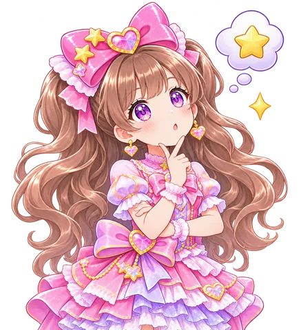
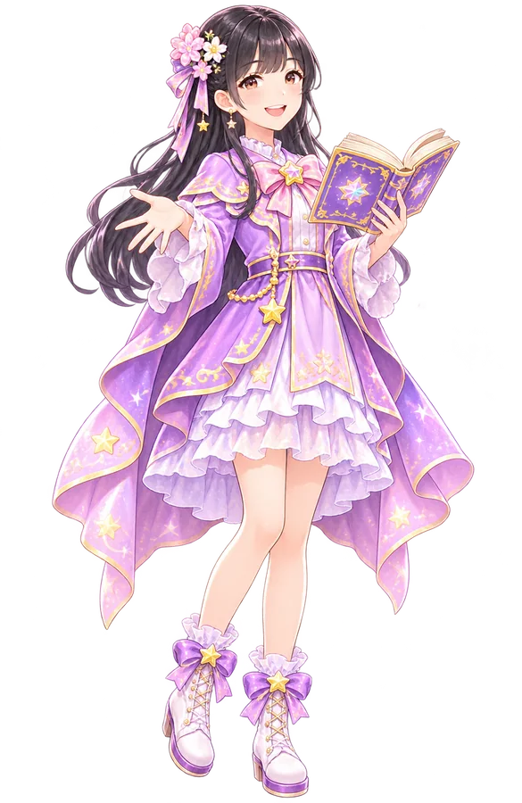
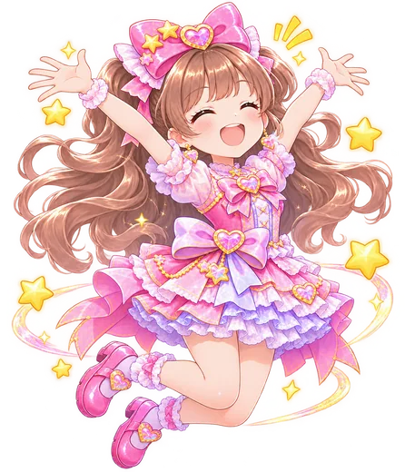
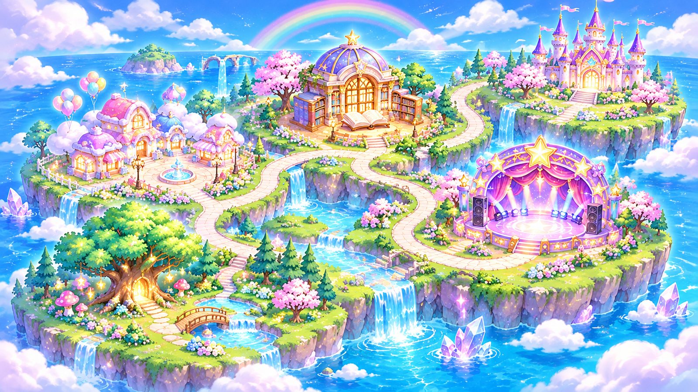

<title>檸檬的英語魔法冒險島</title>
<meta name="claude:viewport-fit-sides" content="cover">
<link rel="preconnect" href="https://fonts.googleapis.com">
<link rel="preconnect" href="https://fonts.gstatic.com" crossorigin>
<link href="https://fonts.googleapis.com/css2?family=Baloo+2:wght@600;800&family=Nunito:wght@600;700;800&family=Noto+Sans+TC:wght@500;700;900&display=swap" rel="stylesheet">
<style>
/* Layout: storybook stage — the speaking character and dialogue on the left, the quest card on the right; stacks on narrow screens */
:root{
  --sky:#d6eaff; --sky2:#f3e8ff; --cream:#fffaf2; --ink:#3a3366; --ink2:#6c6597;
  --pink:#ff8dbd; --pinkd:#d9548f; --lav:#a894ef; --lavl:#ece6ff; --mint:#7fd3b6;
  --gold:#ffc23d; --line:#e4daf7; --bad:#d94a70; --good:#24906c; --white:#ffffff;
  --f-display:"Baloo 2","Noto Sans TC","PingFang TC",system-ui,sans-serif;
  --f-body:"Nunito","Noto Sans TC","PingFang TC",system-ui,sans-serif;
  color-scheme:light;
}
html{min-height:100%}body{min-height:100vh}
body{margin:0;background:linear-gradient(180deg,var(--sky) 0%,var(--sky2) 100%);background-color:var(--sky);color:var(--ink);font-family:var(--f-body);font-size:17px;line-height:1.5;-webkit-tap-highlight-color:transparent;min-height:100%}
#app{min-height:100%;box-sizing:border-box;max-width:1180px;margin:0 auto;padding-left:max(16px,env(safe-area-inset-left,0px));padding-right:max(16px,env(safe-area-inset-right,0px));padding-block:16px 40px}
h1,h2,h3{font-family:var(--f-display);margin:0;text-wrap:balance;line-height:1.15}
button{font:inherit;color:inherit;cursor:pointer;border:0;background:none;touch-action:manipulation}
button:focus-visible,input:focus-visible,textarea:focus-visible,summary:focus-visible{outline:3px solid var(--lav);outline-offset:3px}
.btn{display:inline-flex;align-items:center;justify-content:center;gap:8px;min-height:52px;padding:0 22px;border-radius:999px;font-weight:800;font-size:18px;background:var(--white);color:var(--ink);box-shadow:0 3px 0 var(--line)}
.btn.main{background:var(--pink);color:var(--white);box-shadow:0 4px 0 var(--pinkd)}
.btn.lav{background:var(--lav);color:var(--white);box-shadow:0 4px 0 #8270cf}
.btn.small{min-height:42px;font-size:15px;padding:0 16px}
.btn:active{transform:translateY(2px);box-shadow:none}
.row{display:flex;flex-wrap:wrap;gap:12px;align-items:center}
.topbar{display:flex;justify-content:space-between;align-items:center;gap:12px;flex-wrap:wrap;margin-bottom:16px}
.chip{display:inline-block;padding:2px 12px;border-radius:999px;background:var(--lavl);color:var(--ink2);font-weight:800;font-size:14px;letter-spacing:.03em}
.muted{color:var(--ink2)}

/* home */
.home{display:grid;gap:22px;justify-items:center;text-align:center;padding-top:12px}
.home h1{font-size:clamp(34px,6vw,60px);color:var(--ink)}
.home h1 span{color:var(--pinkd)}
.cast{display:flex;gap:clamp(8px,3vw,32px);align-items:flex-end;justify-content:center;flex-wrap:wrap}
.cast figure{margin:0;display:grid;justify-items:center;gap:4px}
.cast figcaption{font-weight:800;color:var(--ink2);font-size:15px}
.char{width:clamp(96px,16vw,150px);height:auto;display:block}
.progress{width:min(420px,100%);height:14px;border-radius:999px;background:var(--white);overflow:hidden;box-shadow:inset 0 0 0 2px var(--line)}
.progress i{display:block;height:100%;background:linear-gradient(90deg,var(--pink),var(--lav));border-radius:999px}

/* map */
.map{background:var(--cream);border-radius:28px;padding:22px;box-shadow:0 6px 0 var(--line)}
.map h2{font-size:30px;margin-bottom:4px}
.path{display:grid;grid-template-columns:repeat(5,minmax(0,1fr));gap:14px;margin:20px 0}
.node{display:grid;justify-items:center;gap:6px;padding:14px 6px;border-radius:22px;background:var(--white);box-shadow:0 4px 0 var(--line);text-align:center;min-width:0}
.node .num{width:54px;height:54px;border-radius:50%;display:grid;place-items:center;font-family:var(--f-display);font-size:26px;font-weight:800;background:var(--lavl);color:var(--ink2)}
.node.done .num{background:var(--gold);color:var(--ink)}
.node.next .num{background:var(--pink);color:var(--white);animation:pulse 1.6s ease-in-out infinite}
.node.locked{opacity:.45;cursor:not-allowed}
.node b{font-size:14px;line-height:1.3}
.node small{font-size:12px;color:var(--ink2);font-weight:700}
@keyframes pulse{50%{transform:scale(1.08)}}
.shelf{display:flex;flex-wrap:wrap;gap:8px}
.treasure{background:var(--white);border-radius:14px;padding:6px 12px;font-weight:700;font-size:15px;box-shadow:0 2px 0 var(--line)}

/* task */
.stage{display:grid;grid-template-columns:minmax(0,300px) minmax(0,1fr);gap:18px;align-items:start}
.side{display:grid;gap:12px;justify-items:center;position:sticky;top:calc(env(safe-area-inset-top,0px) + 12px)}
.bubble{background:var(--white);border-radius:22px;padding:14px 16px;font-size:17px;box-shadow:0 4px 0 var(--line);position:relative;width:100%;box-sizing:border-box}
.bubble::before{content:"";position:absolute;top:-10px;left:50%;margin-left:-10px;border:10px solid transparent;border-top:0;border-bottom-color:var(--white)}
.bubble .who{font-weight:800;color:var(--pinkd);font-size:14px;display:block;margin-bottom:2px}
.hintbox{display:grid;gap:8px;width:100%}
.hint{background:var(--lavl);border-radius:16px;padding:10px 14px;font-size:16px}
.hint b{color:var(--ink2);font-size:13px;display:block}
.hint.ans{background:#fff2c9}
.card{background:var(--cream);border-radius:28px;padding:20px;box-shadow:0 6px 0 var(--line);min-width:0}
.card h2{font-size:28px}
.prompt{font-family:var(--f-display);font-size:22px;font-weight:600;margin:6px 0 14px;color:var(--ink)}
.qbody{display:grid;gap:14px}
.opts{display:grid;grid-template-columns:repeat(auto-fit,minmax(130px,1fr));gap:12px}
.opt{background:var(--white);border-radius:22px;min-height:150px;display:grid;place-items:center;box-shadow:0 4px 0 var(--line);padding:10px;position:relative}
.opt.nope{animation:shake .4s;box-shadow:0 0 0 4px var(--bad)}
.opt.okk{box-shadow:0 0 0 4px var(--good)}
.opt.glow{box-shadow:0 0 0 5px var(--gold),0 0 24px var(--gold)}
@keyframes shake{25%{transform:translateX(-6px)}75%{transform:translateX(6px)}}
.e{font-size:44px;line-height:1}
.e.xl{font-size:76px}.e.sm{font-size:32px}
.combo{display:flex;align-items:flex-end;justify-content:center;gap:2px}
.letter{background:var(--white);border-radius:18px;padding:16px 20px;font-size:18px;line-height:1.7;box-shadow:0 3px 0 var(--line);border:2px dashed var(--line)}
.letter p{margin:0 0 6px}
.fld{display:flex;flex-wrap:wrap;align-items:center;gap:8px;font-size:19px;font-weight:700}
.fld input{font:inherit;font-size:22px;width:9em;max-width:100%;padding:8px 12px;border-radius:14px;border:3px solid var(--line);background:var(--white);color:var(--ink)}
.fld input.bad{border-color:var(--bad)}
.fld input.ok{border-color:var(--good)}
.qa{display:grid;gap:10px;background:var(--white);border-radius:18px;padding:14px;box-shadow:0 3px 0 var(--line)}
.qa .q{font-size:19px;font-weight:800}
.choices{display:grid;gap:8px}
.choice{text-align:left;padding:12px 16px;border-radius:14px;background:var(--lavl);font-size:18px;font-weight:700;border:3px solid transparent}
.choice.sel{border-color:var(--lav);background:var(--white)}
.choice.bad{border-color:var(--bad)}
.palette{display:flex;gap:12px;flex-wrap:wrap}
.swatch{width:58px;height:58px;border-radius:50%;box-shadow:0 3px 0 var(--line);border:4px solid var(--white)}
.swatch.sel{border-color:var(--ink)}
.pic{background:var(--white);border-radius:20px;padding:8px;box-shadow:0 3px 0 var(--line);overflow-x:auto}
.pic svg{display:block;width:100%;max-width:520px;height:auto;margin:0 auto}
.part{cursor:pointer}
.part.sel{stroke:var(--gold);stroke-width:6}
.actions{display:flex;flex-wrap:wrap;gap:12px;margin-top:18px}
.fb{min-height:28px;font-weight:800;font-size:18px;margin-top:12px}
.fb.bad{color:var(--bad)}.fb.good{color:var(--good)}
.peek{margin-top:14px;font-size:14px;color:var(--ink2)}
.peek summary{cursor:pointer;font-weight:700}
.peek p{margin:6px 0 0;background:var(--white);border-radius:12px;padding:8px 12px}
.win{display:grid;gap:12px;justify-items:center;text-align:center;background:var(--white);border-radius:22px;padding:20px;margin-top:14px;box-shadow:0 4px 0 var(--line)}
.win .big{font-size:56px;animation:pop .6s ease-out}
@keyframes pop{0%{transform:scale(.2)}70%{transform:scale(1.2)}100%{transform:scale(1)}}
.model{background:#fff2c9;border-radius:16px;padding:12px 16px;font-size:18px;font-weight:700}
.rates{display:flex;flex-wrap:wrap;gap:10px}

/* end + parent */
.end{display:grid;gap:18px;justify-items:center;text-align:center}
.end h1{font-size:clamp(30px,5vw,48px)}
.glowstar{width:160px;height:auto;filter:drop-shadow(0 0 18px var(--gold));animation:pop .8s ease-out}
.panel{background:var(--cream);border-radius:24px;padding:20px;box-shadow:0 5px 0 var(--line);display:grid;gap:14px;min-width:0}
.panel h2{font-size:24px}
.tablewrap{overflow-x:auto}
table{border-collapse:collapse;width:100%;font-size:15px;font-variant-numeric:tabular-nums}
th,td{text-align:left;padding:8px 10px;border-bottom:1px solid var(--line);white-space:nowrap}
th{color:var(--ink2);font-size:13px;letter-spacing:.03em}
textarea{width:100%;box-sizing:border-box;min-height:90px;font:14px/1.4 ui-monospace,Menlo,monospace;border-radius:12px;border:2px solid var(--line);padding:10px;background:var(--white);color:var(--ink)}
.note{background:var(--lavl);border-radius:14px;padding:10px 14px;font-size:15px}

.spellcard{display:grid;gap:14px;justify-items:center;text-align:center;max-width:620px;margin:0 auto;width:100%;box-sizing:border-box}
.spellpic{font-size:96px;line-height:1.1}
.spellform{display:flex;gap:10px;flex-wrap:wrap;justify-content:center;width:100%}
.spellform input{font:inherit;font-size:30px;letter-spacing:.08em;text-align:center;width:9em;max-width:100%;padding:8px 12px;border-radius:16px;border:3px solid var(--line);background:var(--white);color:var(--ink)}
.tiles{display:flex;gap:6px;flex-wrap:wrap;justify-content:center}
.tile{min-width:40px;height:48px;display:grid;place-items:center;border-radius:12px;font-size:26px;font-weight:800;background:var(--white);box-shadow:0 3px 0 var(--line)}
.tile.ok{background:#d9f5ea;color:var(--good)}.tile.bad{background:#ffe0e8;color:var(--bad)}.tile.miss{color:var(--ink2)}
.scene{position:relative;width:min(460px,100%);aspect-ratio:16/10;background:linear-gradient(180deg,#e6f3ff,#fff7e6);border-radius:20px;box-shadow:0 3px 0 var(--line);overflow:hidden}
.scene span{position:absolute;line-height:1}
.scene.room{background:linear-gradient(180deg,#fdebd3 0 64%,#caa27a 64% 100%)}
.scene .blk{position:absolute;border-radius:4px;box-shadow:0 1px 0 rgba(0,0,0,.15)}
.scene .tbl{position:absolute;height:10px;background:#b98a5e;border-radius:4px;box-shadow:12px 10px 0 -2px transparent}
.scene .tbl::before,.scene .tbl::after{content:"";position:absolute;top:10px;width:8px;height:56px;background:#b98a5e}
.scene .tbl::before{left:8px}.scene .tbl::after{right:8px}
.fld input.ok,.qa input.ok{border-color:var(--good)!important}.fld input.bad,.qa input.bad{border-color:var(--bad)!important}
.praise{font-family:var(--f-display);font-size:34px;font-weight:800;color:var(--good);animation:pop .4s ease-out}
.bank{display:grid;grid-template-columns:repeat(auto-fill,minmax(104px,1fr));gap:8px;background:var(--white);border-radius:18px;padding:10px;box-shadow:0 3px 0 var(--line)}
.bk{display:grid;justify-items:center;gap:2px;padding:6px;border:2px solid var(--line);border-radius:12px}
.bk .e{font-size:34px}.bl{font-weight:800;font-size:16px}
.passage{line-height:2.4}
.gapw{display:inline-flex;align-items:center;gap:4px;flex-wrap:wrap;vertical-align:middle;margin:0 2px}
.gapin{font:inherit;font-size:18px;width:7.5em;max-width:60vw;padding:2px 8px;border-radius:10px;border:3px solid var(--line);background:var(--white);color:var(--ink)}
.gapin.ok{border-color:var(--good)}.gapin.bad{border-color:var(--bad)}
.gopts{font-size:13px;color:var(--ink2);font-weight:700;background:var(--lavl);border-radius:8px;padding:0 6px}
.fld input.ok{border-color:var(--good)}.fld input.bad{border-color:var(--bad)}
.chaps{display:grid;grid-template-columns:repeat(auto-fill,minmax(220px,1fr));gap:14px;margin-top:16px}
.chap{display:flex;align-items:center;gap:12px;text-align:left;background:var(--white);border-radius:22px;padding:14px;box-shadow:0 4px 0 var(--line);font:inherit;color:inherit}
.chap.locked{opacity:.5}
.chapt{display:grid;gap:2px;min-width:0}.chapt b{font-family:var(--f-display);font-size:20px}.chapt small{color:var(--ink2);font-weight:700}
.mini{width:56px;height:56px;flex:none}
.lemonbg{border-radius:24px;padding:8px 12px 0;box-shadow:0 4px 0 var(--line)}
.ward{display:grid;grid-template-columns:minmax(0,260px) minmax(0,1fr);gap:20px;align-items:start}
.wprev{display:grid;justify-items:center}.wprev figure{margin:0;display:grid;justify-items:center;gap:6px;font-weight:800;color:var(--ink2)}.wprev .char{width:min(200px,60vw)}
.wshop{display:grid;gap:12px}
.witems{display:grid;grid-template-columns:repeat(auto-fill,minmax(130px,1fr));gap:10px}
.witem{display:grid;justify-items:center;gap:4px;padding:12px 8px;border-radius:18px;background:var(--white);box-shadow:0 3px 0 var(--line);border:3px solid transparent;font:inherit;color:inherit;text-align:center}
.witem.on{border-color:var(--lav)}.witem.pend{border-color:var(--gold)}
.witem .e{font-size:36px}.witem b{font-size:15px}
.sw{width:44px;height:44px;border-radius:50%;display:block;box-shadow:inset 0 0 0 3px #fff,0 0 0 2px var(--line)}
.tag{font-size:12px;font-weight:800;color:var(--ink2)}.tag.lockt{color:#8a7a9c}.witem.wlocked .wthumb{filter:grayscale(.85) opacity(.55)}.witem .rwbar{height:6px}.tag.on{color:var(--good)}.tag.buy{color:#b07a00}
@media (max-width:640px){.ward{grid-template-columns:minmax(0,1fr)}}
.answord{font-size:34px;letter-spacing:.1em}
@media (max-width:820px){
  .stage{grid-template-columns:minmax(0,1fr)}
  .side{position:static;grid-template-columns:96px minmax(0,1fr);justify-items:stretch;align-items:start}
  .side .char{width:96px}
  .bubble::before{display:none}
  .hintbox{grid-column:1/-1}
  .path{grid-template-columns:repeat(2,minmax(0,1fr))}
}
@media (prefers-reduced-motion:reduce){*{animation:none!important;transition:none!important}}
/* ===== Pastel illustrated theme ===== */
body{background:linear-gradient(135deg,#f3eaff,#d3eeff 52%,#ffe1f1);background-color:#f6ecff;color:#5e3f78}
#pagebg{position:fixed;inset:0;z-index:0;background-size:cover;background-position:center;opacity:0;transition:opacity .4s}
#pagebg.on{opacity:1}
#pagebg::after{content:"";position:absolute;inset:0;background:rgba(255,248,253,.38)}
#app{position:relative;z-index:1}
h1,h2,h3{font-family:"Baloo 2","Noto Sans TC","PingFang TC",system-ui,sans-serif;font-weight:900}
.map,.card,.panel,.end{background:rgba(255,252,254,.9);-webkit-backdrop-filter:blur(8px);backdrop-filter:blur(8px);border:4px solid #fff;border-radius:28px;box-shadow:0 10px 28px rgba(123,92,158,.25)}
.end{padding:24px max(16px,3vw)}
.map h2,.card h2,.panel h2,.end h1,.end h2{color:#ad3f8d}
.chip{background:rgba(255,255,255,.92);color:#9d4fa8;border:2px solid #fff;box-shadow:0 3px 10px rgba(150,100,170,.18)}
.btn{background:#fff;color:#a257a2;border:3px solid #f1d2f0;box-shadow:0 4px 0 #e5c3ea}
.btn.main{background:linear-gradient(#ff96d1,#ec5fad);color:#fff;border:3px solid #fff;box-shadow:0 4px 0 #bb5aa0,0 8px 16px rgba(200,100,170,.4);text-shadow:0 1px 0 rgba(150,30,100,.35)}
.btn.lav{background:linear-gradient(#c8b6ff,#8c7cd6);color:#fff;border:3px solid #fff;box-shadow:0 4px 0 #6f5fb8,0 8px 16px rgba(120,100,200,.35);text-shadow:0 1px 0 rgba(60,40,140,.35)}
.btn{position:relative;overflow:hidden}
.btn.main::after,.btn.lav::after{content:"";position:absolute;left:12%;right:12%;top:3px;height:38%;border-radius:999px;background:linear-gradient(rgba(255,255,255,.55),rgba(255,255,255,0));pointer-events:none}
.bubble{border:3px solid #fff;box-shadow:0 6px 16px rgba(150,100,170,.22)}
.opt,.qa,.letter,.bank,.pic{border:2px solid #f3e1f6}
.praise{color:#ec4fa4}
.win{border:3px solid #ffe2a0;box-shadow:0 0 22px rgba(255,205,90,.55)}
/* home */
.homeL{display:grid;gap:16px}
.hero{position:relative;border:5px solid #fff;border-radius:28px;overflow:hidden;box-shadow:0 12px 30px rgba(123,92,158,.3);background:#fff}
.hero img{display:block;width:100%;height:auto}
.heroText{position:absolute;right:18px;top:18px;width:min(430px,46%);background:rgba(255,255,255,.72);-webkit-backdrop-filter:blur(10px);backdrop-filter:blur(10px);border:3px solid #fff;border-radius:24px;padding:18px;display:grid;gap:10px}
.heroText h1{margin:0;font-size:clamp(24px,3.4vw,40px);color:#ad338d;text-shadow:0 2px 0 #fff;line-height:1.15}
.heroText h1 span{color:#8558b2}
.heroText p{margin:0;font-weight:700;color:#6a4a83}
.stats{display:flex;flex-wrap:wrap;gap:8px}
.heroText .progress{width:100%}
@media (max-width:760px){.heroText{position:static;width:auto;border-radius:0;border:0;border-top:3px solid #fff}}
.today{display:grid;grid-template-columns:auto minmax(0,1fr);gap:16px;align-items:center}
.today .tpic{width:120px;height:auto;filter:drop-shadow(0 4px 8px rgba(110,70,140,.3))}
.today h2{font-size:22px;margin:0}.today p{margin:6px 0 10px;font-weight:600;color:#6a4a83}
.tbody{display:grid;gap:8px;min-width:0}
.tsteps{display:grid;grid-template-columns:repeat(3,minmax(0,1fr));gap:8px}
.tstep{display:grid;gap:2px;background:#fff;border:2px solid #f3e1f6;border-radius:16px;padding:8px 12px}
.tstep b{font-size:15px;color:#ad338d}.tstep small{font-size:12.5px;color:#7a5a93;font-weight:700}
.tstep.ok{border-color:#9be3c2;background:#f0fff8}
.chcards{display:grid;grid-template-columns:repeat(5,minmax(0,1fr));gap:12px}
.chcard{display:grid;align-content:start;gap:4px;text-align:left;padding:14px;border-radius:22px;background:rgba(255,252,254,.92);border:3px solid #fff;box-shadow:0 6px 16px rgba(123,92,158,.2);font:inherit;color:#5e3f78;min-width:0}
.chcard .cic{font-size:30px}.chcard small{font-weight:800;color:#9c6ac0}.chcard b{font-size:17px;color:#6a3f86;line-height:1.3}
.chcard .csk{font-size:12.5px;font-weight:700;color:#8a6aa6;background:#f6eefc;border-radius:10px;padding:2px 8px;justify-self:start}
.chcard .progress{height:10px;margin-top:4px;width:100%}
.chcard .cst{font-size:13px;font-weight:800;color:#ad338d}
.chcard.locked{opacity:.6;filter:grayscale(.4)}.chcard.locked .cst{color:#8a7a9c}
.chcard.done{border-color:#ffe2a0;box-shadow:0 0 18px rgba(255,205,90,.5)}
.foot{justify-self:center;text-align:center;font-size:12.5px;color:#7a5a93;margin:4px 0 0;background:rgba(255,255,255,.85);border-radius:16px;padding:6px 14px}
@media (max-width:900px){.chcards{grid-template-columns:repeat(2,minmax(0,1fr))}.tsteps{grid-template-columns:minmax(0,1fr)}}
@media (max-width:520px){.today{grid-template-columns:minmax(0,1fr)}.today .tpic{display:none}}
.wimg{max-width:240px}
.wthumb{width:auto;height:96px;filter:drop-shadow(0 3px 5px rgba(110,70,140,.3))}
.react{display:flex;align-items:center;gap:10px}.react img{width:78px;height:auto}
.hintimg{width:110px;height:auto;justify-self:center}
.winimg{width:min(170px,40vw);height:auto;animation:pop .5s ease-out;filter:drop-shadow(0 4px 8px rgba(110,70,140,.3))}
.thinkimg{width:110px;height:auto}
.praise{display:flex;align-items:center;gap:8px}.praise img{width:110px;height:auto}
.story{display:grid;gap:12px;justify-items:center}
.simg{position:relative;width:min(100%,calc((100vh - 290px) * 1.777));min-width:min(100%,520px);aspect-ratio:16/9;border:5px solid #fff;border-radius:26px;overflow:hidden;box-shadow:0 12px 30px rgba(123,92,158,.3);background:#fff}
.sbg{position:absolute;inset:0;width:100%;height:100%;object-fit:cover}
.sshade{position:absolute;inset:0;background:none}
.sshade.dim{background:rgba(30,20,70,.35)}.simg.dimbg .sbg{filter:grayscale(.75) brightness(.7)}
.swho{position:absolute;left:3%;bottom:0;height:92%;width:auto;max-width:45%;object-fit:contain;object-position:bottom;filter:drop-shadow(0 8px 14px rgba(80,40,110,.35));animation:pop .5s ease-out}
.sbox{width:min(100%,calc((100vh - 290px) * 1.777));min-width:min(100%,520px);box-sizing:border-box;background:rgba(255,255,255,.94);border:3px solid #fff;border-radius:24px;padding:16px 20px;display:grid;gap:10px;box-shadow:0 8px 22px rgba(110,70,140,.22)}
.sbox .who{font-weight:900;color:#ec4fa4;font-size:16px}.sbox h2{margin:0;font-size:26px;color:#ad338d}.sbox p{margin:0;font-size:20px;line-height:1.7;font-weight:700;color:#5e3f78}
.sdots{display:flex;gap:6px}.sdots i{width:10px;height:10px;border-radius:50%;background:#e6d6f5}.sdots i.on{background:#ec5fad}
.parentlink{background:none;border:0;color:#9a86b0;font:inherit;font-size:12.5px;text-decoration:underline;padding:6px;margin-top:4px;cursor:pointer}
@media (max-width:640px){.sbox p{font-size:17px}.sbox h2{font-size:22px}}
.titlebar{text-align:center;display:grid;gap:6px;justify-items:center;padding:8px 0 2px}
.titlebar h1{margin:0;font-size:clamp(30px,5.5vw,54px);color:#ad338d;text-shadow:0 3px 0 #fff,0 0 18px rgba(255,255,255,.9)}
.titlebar h1 span{color:#8558b2}
.titlebar p{margin:0;font-weight:800;color:#5e3f78;background:rgba(255,255,255,.75);border-radius:999px;padding:4px 16px}
.today .who{font-weight:900;color:#ec4fa4;font-size:14px}
.today p{font-size:19px}
.btn.big{min-height:60px;font-size:20px;padding:0 26px}
.legend{display:grid;grid-template-columns:repeat(auto-fit,minmax(220px,1fr));gap:6px 14px;margin-top:12px;font-size:14px;color:#6a4a83}
.legend b{color:#ad338d}
.spot .lbl small+b{display:block}
.scstar{position:absolute;width:clamp(30px,5vw,56px);transform:translate(-50%,-50%);filter:drop-shadow(0 0 12px #fff) drop-shadow(0 0 6px #fff);animation:fall 1s ease-out both;z-index:1}.scsvg{width:100%;height:auto;display:block}
@keyframes fall{from{opacity:0;transform:translate(-50%,-260%) scale(.5)}to{opacity:1;transform:translate(-50%,-50%)}}
.stars5{display:flex;gap:6px;justify-content:center;background:rgba(255,255,255,.85);border:2px solid #fff;border-radius:999px;padding:4px 14px;box-shadow:0 3px 10px rgba(150,100,170,.2)}.stars5 .staricon{width:44px}.stars5 .staricon.off{filter:grayscale(1) brightness(.8) opacity(.45)}
.rwgrid{display:grid;grid-template-columns:repeat(auto-fill,minmax(200px,1fr));gap:12px;margin-top:12px}
.rwitem{display:grid;justify-items:center;gap:6px;padding:16px 12px;border-radius:22px;background:#fff;border:3px solid #fff;box-shadow:0 5px 14px rgba(123,92,158,.2);font:inherit;color:#5e3f78;text-align:center}
.rwitem.pend{border-color:#ffcf3f;box-shadow:0 0 18px rgba(255,205,90,.6)}.rwitem.poor{opacity:.85}
.rwic{font-size:44px;line-height:1}.rwitem b{font-size:18px;color:#ad338d}.rwprice{font-weight:900;font-size:18px;color:#8558b2}.rwitem small{font-weight:800;color:#7a5a93}
.rwbar{width:100%;height:10px;border-radius:999px;background:#efe5f8;overflow:hidden}.rwbar i{display:block;height:100%;background:linear-gradient(90deg,#ffcc6d,#ec83ce)}
.tickets{display:grid;gap:8px}
.ticket{display:flex;align-items:center;gap:12px;background:repeating-linear-gradient(90deg,#fff7d6 0 12px,#fff2c2 12px 24px);border:2px dashed #e7b65b;border-radius:16px;padding:8px 14px}
.ticket .rwic{font-size:30px}.ticket b{display:block;color:#8a5a00}.ticket small{font-weight:700;color:#8a6a2a}.ticket.used{opacity:.55}
.rwrows{display:grid;gap:8px}.rwrow{display:flex;gap:8px;flex-wrap:wrap;align-items:center}.rwrow input{font:inherit;font-size:16px;padding:6px 10px;border-radius:10px;border:2px solid #eadcf5;background:#fff;color:#5e3f78;min-width:0}
.bigprize{background:linear-gradient(90deg,#fff3c4,#ffe0f0);border:2px solid #fff;border-radius:999px;padding:6px 16px;font-weight:800;color:#8a4a00;box-shadow:0 3px 10px rgba(200,150,60,.25)}.bigprize b{color:#c0398c}
.adjlog{margin:0;padding-left:20px;font-size:14px;color:#6a4a83}
.mnames{display:flex;flex-wrap:wrap;gap:8px}
.mname{font:inherit;font-weight:800;font-size:18px;padding:8px 16px;border-radius:999px;background:#fff;border:3px solid #eadcf5;color:#6a3f86}
.mname.sel{border-color:#ec5fad;background:#ffe9f5}.mname.used{opacity:.6}.mname.bad{border-color:var(--bad)}
.mtargets{display:grid;grid-template-columns:repeat(auto-fill,minmax(110px,1fr));gap:10px}
.mtgt{display:grid;justify-items:center;gap:6px;padding:10px 6px;border-radius:20px;background:#fff;border:3px solid #f3e1f6;box-shadow:0 3px 0 #eadcf5;font:inherit;min-height:120px;align-content:center}
.mtgt.has{border-color:#b08cff}
.mtag{font-weight:800;font-size:15px;background:#efe5ff;color:#5b3fa0;border-radius:10px;padding:2px 10px}.mtag.empty{background:#f6f2fa;color:#b8a8cc}.mtag.bad{background:#ffe0e8;color:var(--bad)}
.twin{display:grid;grid-template-columns:repeat(2,minmax(0,1fr));gap:12px}
.scene2{display:grid;gap:6px;justify-items:center;background:#fff;border:3px solid #f3e1f6;border-radius:20px;padding:12px}
.sc-lbl{font-weight:800;color:#8558b2;font-size:14px}.scene2 .e{font-size:36px}
.panels4{display:grid;grid-template-columns:repeat(4,minmax(0,1fr));gap:8px}
.panels4>div{display:grid;justify-items:center;gap:4px;background:#fff;border:3px solid #f3e1f6;border-radius:16px;padding:10px 4px}
.panels4 b{color:#ec4fa4}.panels4 .e{font-size:30px}
@media (max-width:640px){.panels4{grid-template-columns:repeat(2,minmax(0,1fr))}}
/* island */
.islandwrap{position:relative;border:5px solid #fff;border-radius:26px;overflow:hidden;box-shadow:0 10px 26px rgba(123,92,158,.28);margin-top:12px}
.islandwrap img.bgimg{display:block;width:100%;height:auto}
.spot{position:absolute;transform:translate(-50%,-50%);display:grid;justify-items:center;gap:4px;background:none;border:0;padding:0;font:inherit;color:inherit}
.spot .lbl{background:rgba(255,255,255,.95);border:2px solid #fff;border-radius:14px;padding:4px 10px;box-shadow:0 4px 12px rgba(120,80,150,.3);text-align:center;line-height:1.2;white-space:nowrap}
.spot .lbl small{display:block;font-size:11px;color:#9c6ac0;font-weight:800}
.spot .lbl b{font-size:14px;color:#ad338d}
.spot .ring{width:clamp(38px,6vw,64px);height:clamp(38px,6vw,64px);border-radius:50%;border:4px solid #fff;background:rgba(255,255,255,.35);box-shadow:0 0 0 4px rgba(236,95,173,.55),0 0 24px rgba(255,255,255,.9);display:grid;place-items:center;font-size:clamp(18px,3vw,28px)}
.spot.cur .ring{animation:pulse 1.6s ease-in-out infinite;box-shadow:0 0 0 5px #ec5fad,0 0 30px #fff}
.spot.lock .ring{width:clamp(30px,4vw,42px);height:clamp(30px,4vw,42px);font-size:clamp(14px,2vw,20px);background:rgba(255,255,255,.6);border-width:2px;box-shadow:0 2px 8px rgba(80,60,120,.3)}
.spot.lock .lbl{opacity:.8}
.spot .who{position:absolute;right:calc(50% + clamp(18px,3vw,34px));top:-18%;width:clamp(40px,6vw,70px);pointer-events:none;animation:bob2 1.6s ease-in-out infinite;filter:drop-shadow(0 3px 5px rgba(80,40,110,.4))}
@keyframes bob2{50%{transform:translateY(-6px)}}
@media (max-width:640px){.spot .lbl{display:none}}
/* trail */
.trail{position:relative;border-radius:24px;overflow:hidden;margin:14px 0 18px;border:4px solid #fff;background-size:cover;background-position:center;box-shadow:0 8px 22px rgba(123,92,158,.22)}
.trail::before{content:"";position:absolute;inset:0;background:rgba(255,255,255,.1)}
.trail svg.path{position:absolute;inset:0;width:100%;height:100%}
.stone{position:absolute;transform:translate(-50%,-50%);display:grid;justify-items:center;gap:6px;width:130px;background:none;border:0;padding:0;font:inherit;color:inherit;z-index:1}
.stone .gem{width:66px;height:66px;border-radius:50%;display:grid;place-items:center;font:800 26px "Baloo 2",system-ui;color:#fff;background:radial-gradient(circle at 34% 28%,#fff 0 10%,#d4c4ff 12%,#8c6ce0 100%);box-shadow:0 5px 0 #6a4fb8,0 0 0 4px #fff,0 8px 18px rgba(80,50,130,.35)}
.stone.done .gem{background:radial-gradient(circle at 34% 28%,#fff 0 10%,#ffe9a6 12%,#f2ad1c 100%);box-shadow:0 5px 0 #b77c08,0 0 0 4px #fff,0 0 18px rgba(255,210,94,.9);color:#7a4a00}
.stone.next .gem{background:radial-gradient(circle at 34% 28%,#fff 0 10%,#ffbadf 12%,#ec4f9f 100%);box-shadow:0 5px 0 #b33d84,0 0 0 4px #fff,0 0 26px rgba(255,120,190,.95);animation:pulse 1.6s ease-in-out infinite}
.stone.locked .gem{background:radial-gradient(circle at 34% 28%,#fff 0 10%,#ece7f6 12%,#b3a9cc 100%);box-shadow:0 5px 0 #8b82a8,0 0 0 4px #fff;color:#fff}
.stone b{font-size:13px;background:rgba(255,255,255,.96);border-radius:999px;padding:3px 10px;color:#6a3f86;white-space:nowrap;box-shadow:0 2px 8px rgba(120,80,150,.25)}
.stone small{font-size:11px;color:#7a4fa0;font-weight:800;background:rgba(255,255,255,.75);border-radius:8px;padding:0 6px}
.avatar{position:absolute;width:74px;transform:translate(-50%,-100%);pointer-events:none;z-index:2;animation:bob 1.6s ease-in-out infinite}
.avatar img{width:100%;height:auto;filter:drop-shadow(0 4px 6px rgba(80,40,110,.35))}
@keyframes bob{50%{transform:translate(-50%,-108%)}}
.mapbanner{display:flex;align-items:center;gap:12px;flex-wrap:wrap}
.staricon{width:56px;height:auto;flex:none}
.staricon.off{filter:grayscale(1) opacity(.55)}
.spk{width:100%;max-width:220px;height:auto;filter:drop-shadow(0 6px 10px rgba(110,70,140,.3))}
.glowimg{width:min(220px,55vw);height:auto;filter:drop-shadow(0 0 22px rgba(255,220,120,.9));animation:pop .8s ease-out}
@media (max-width:820px){.side .spk{width:96px}}
@media (max-width:640px){.stone{width:100px}.stone .gem{width:56px;height:56px;font-size:22px}.stone b{font-size:12px;padding:2px 8px}.avatar{width:58px}}
.mlist{list-style:none;margin:6px 0 10px;padding:0;display:grid;gap:6px}
.mlist .mi{display:flex;align-items:center;gap:10px;background:rgba(255,255,255,.8);border:2px solid var(--line);border-radius:14px;padding:6px 10px}
.mlist .mi b{flex:1}.mlist .mi small{color:var(--ink2);font-size:13px}
.mlist .mk{width:28px;height:28px;border-radius:50%;display:grid;place-items:center;background:var(--lavl);font-weight:800}
.mlist .mi.ok{opacity:.65}.mlist .mi.ok .mk{background:var(--mint);color:#fff}
.toast{position:fixed;left:50%;bottom:28px;transform:translateX(-50%);background:#5e3f78;color:#fff;padding:12px 18px;border-radius:16px;font-weight:700;z-index:99;max-width:90vw;text-align:center}
.dgrid{display:grid;grid-template-columns:repeat(auto-fill,minmax(120px,1fr));gap:8px;width:100%}
.dcard{display:grid;gap:2px;padding:8px;border-radius:12px;background:#efe9f7;color:#9a8cae;text-align:center;border:2px solid transparent;font:inherit}
.dcard b{font-size:16px}.dcard small{font-size:12px}
.dcard.got{background:#fff;color:var(--ink);border-color:var(--lavl);cursor:pointer}
img.sil{filter:brightness(0) opacity(.18)}
.witem.wbg .wthumb{width:100%;height:auto;aspect-ratio:16/9;object-fit:cover;border-radius:10px}
</style>

<div id="pagebg" aria-hidden="true"></div>
<div id="app"></div>

<script>
(function(){
"use strict";
var KEY = "lemon-island-ch1-v1";
var app = document.getElementById("app");

/* ---------- characters (original designs) ---------- */


var SPEAKERS={cloud:{name:"雲朵",svg:cloudSVG},teacher:{name:"雲雲老師",svg:teacherSVG},star:{name:"守護星",svg:function(){return starSVG(false)}}};

/* ---------- small art helpers ---------- */
function bag(scale,pattern){
  var w=70*scale,h=64*scale,x=(110-w)/2,y=100-h;
  var dots="";
  for(var i=0;i<3;i++){for(var j=0;j<2;j++){
    var cx=x+w*(0.25+i*0.25), cy=y+h*(0.35+j*0.35);
    dots+= pattern==="stars"
      ? '<path transform="translate('+cx+' '+cy+') scale('+(0.5*scale)+')" d="M0-10l3 6.5 7 1-5 5 1 7-6-3.5-6 3.5 1-7-5-5 7-1z" fill="var(--gold)"/>'
      : '<circle cx="'+cx+'" cy="'+cy+'" r="'+(5*scale)+'" fill="var(--pinkd)"/>';
  }}
  return '<svg viewBox="0 0 110 110" width="120" height="120" aria-hidden="true">'+
    '<path d="M'+(x+w*0.3)+' '+y+'q'+(w*0.2)+' '+(-26*scale)+' '+(w*0.4)+' 0" fill="none" stroke="var(--ink2)" stroke-width="5"/>'+
    '<rect x="'+x+'" y="'+y+'" width="'+w+'" height="'+h+'" rx="'+(14*scale)+'" fill="#9cc9ff" stroke="var(--ink2)" stroke-width="3"/>'+dots+'</svg>';
}
function shelfArt(item,onShelf){
  return '<div style="display:grid;justify-items:center;gap:0">'+
    '<span class="e">'+item+'</span>'+
    (onShelf
      ? '<div style="width:96px;height:58px;background:#b98a5e;border-radius:6px;display:grid;grid-template-columns:1fr 1fr;gap:4px;padding:6px;box-sizing:border-box"><i style="background:#d7b18a;border-radius:3px;display:block"></i><i style="background:#d7b18a;border-radius:3px;display:block"></i></div>'
      : '<div style="width:110px;height:10px;background:#8e6a4a;border-radius:3px"></div><div style="width:96px;display:flex;justify-content:space-between"><i style="width:8px;height:44px;background:#8e6a4a;display:block"></i><i style="width:8px;height:44px;background:#8e6a4a;display:block"></i></div>')+
  '</div>';
}
function picHouseBird(){return '<svg viewBox="0 0 320 210" role="img" aria-label="屋頂上有一隻鳥，房子旁邊有三朵花">'+
  '<rect x="0" y="180" width="320" height="30" fill="#bfe8c9"/>'+
  '<rect x="70" y="95" width="120" height="85" fill="#fff4dc" stroke="var(--ink2)" stroke-width="3"/>'+
  '<polygon points="58,98 130,42 202,98" fill="var(--pink)" stroke="var(--ink2)" stroke-width="3" stroke-linejoin="round"/>'+
  '<rect x="115" y="130" width="30" height="50" rx="4" fill="#c79a6e" stroke="var(--ink2)" stroke-width="3"/>'+
  '<rect x="84" y="112" width="22" height="22" fill="#cfe6ff" stroke="var(--ink2)" stroke-width="3"/><rect x="155" y="112" width="22" height="22" fill="#cfe6ff" stroke="var(--ink2)" stroke-width="3"/>'+
  '<ellipse cx="132" cy="33" rx="15" ry="11" fill="#6fb3ff" stroke="var(--ink2)" stroke-width="2.5"/><circle cx="144" cy="25" r="8" fill="#6fb3ff" stroke="var(--ink2)" stroke-width="2.5"/>'+
  '<polygon points="151,24 160,27 151,29" fill="var(--gold)"/><circle cx="146" cy="23" r="1.8" fill="var(--ink)"/>'+
  '<line x1="128" y1="43" x2="126" y2="48" stroke="var(--ink2)" stroke-width="2.5"/><line x1="136" y1="43" x2="137" y2="48" stroke="var(--ink2)" stroke-width="2.5"/>'+
  [222,252,282].map(function(x){return '<line x1="'+x+'" y1="180" x2="'+x+'" y2="150" stroke="#4caf7a" stroke-width="4"/><circle cx="'+x+'" cy="146" r="11" fill="var(--lav)" stroke="var(--ink2)" stroke-width="2.5"/><circle cx="'+x+'" cy="146" r="4" fill="var(--gold)"/>'}).join('')+
  '</svg>';}

var COLOURS=[{id:"pink",hex:"#ff8dbd",en:"pink"},{id:"blue",hex:"#6fb3ff",en:"blue"},{id:"yellow",hex:"#ffd24d",en:"yellow"},{id:"green",hex:"#6fd39a",en:"green"},{id:"red",hex:"#ff6b6b",en:"red"},{id:"purple",hex:"#a894ef",en:"purple"}];
function colourHex(id){for(var i=0;i<COLOURS.length;i++){if(COLOURS[i].id===id)return COLOURS[i].hex}return "#ffffff"}
function picColourHouse(){
  var f=cur.fills||{}, s=cur.part;
  function p(id){return 'class="part'+(s===id?' sel':'')+'" data-act="part" data-id="'+id+'" fill="'+colourHex(f[id])+'"';}
  return '<svg viewBox="0 0 320 240" role="img" aria-label="一棟兩層樓的房子，有一扇門、門旁邊一扇窗、樓上一扇窗">'+
  '<rect x="0" y="210" width="320" height="30" fill="#bfe8c9"/>'+
  '<rect x="80" y="90" width="160" height="120" fill="#fff4dc" stroke="var(--ink2)" stroke-width="3"/>'+
  '<polygon '+p("roof")+' points="66,94 160,30 254,94" stroke="var(--ink2)" stroke-width="3" stroke-linejoin="round"/>'+
  '<rect '+p("win2")+' x="140" y="104" width="40" height="34" stroke="var(--ink2)" stroke-width="3"/>'+
  '<rect '+p("door")+' x="150" y="150" width="40" height="60" rx="5" stroke="var(--ink2)" stroke-width="3"/>'+
  '<rect '+p("win1")+' x="98" y="158" width="38" height="32" stroke="var(--ink2)" stroke-width="3"/>'+
  '<circle cx="182" cy="182" r="3" fill="var(--ink2)" pointer-events="none"/>'+
  '</svg>';
}

/* ---------- chapter 1 tasks ---------- */
var CH1=[
 {id:"t1",type:"multipick",skill:"Listening",title:"秘密小屋的鑰匙",speaker:"cloud",
  story:"森林裡的守護星不見了！出發前要準備好：鑰匙、帽子、午餐……每一題按 🔊 聽一段對話，選出對的圖。",
  prompt:"Listen and choose the right picture.",
  questions:[{q:"1. Where is it?",lines:[["A","Cloud, where is it?"],["C","It isn't in the tree. It's under the big box, next to the flowers."]],options:[{id:"a",art:'<span class="e xl">🌳</span>'},{id:"b",art:'<div class="combo"><span class="e xl">📦</span><span class="e sm">🌸🌸</span></div>'},{id:"c",art:'<div class="combo"><span class="e sm">📦</span><span class="e sm">🌸🌸</span></div>'},{id:"d",art:'<span class="e xl">📦</span>'}],answer:"b"},
   {q:"2. Which hat is Cloud's?",lines:[["A","Which hat is yours, Cloud?"],["C","The one with the flower. Not the big one. The small one."]],options:[{id:"a",art:'<div class="combo"><span class="e xl">🧢</span><span class="e sm">🌸</span></div>'},{id:"b",art:'<div class="combo"><span class="e sm">🧢</span><span class="e sm">🌸</span></div>'},{id:"c",art:'<span class="e sm">🧢</span>'}],answer:"b"},
   {q:"3. What has Lemon got for lunch?",lines:[["A","Have you got sandwiches for lunch, Lemon?"],["C","No, I haven't. I've got two apples and some juice."]],options:[{id:"a",art:'<span class="e">🥪</span><span class="e sm">🧃</span>'},{id:"b",art:'<span class="e">🍎🍎</span><span class="e sm">🧃</span>'},{id:"c",art:'<span class="e">🍎🍎</span><span class="e sm">🥛</span>'}],answer:"b"},
   {q:"4. How do they go to the forest?",lines:[["A","Can we go to the forest by bus?"],["C","No, there aren't any buses here. We can go by bike!"]],options:[{id:"a",art:'<span class="e">🚌</span>'},{id:"b",art:'<span class="e">🚲</span>'},{id:"c",art:'<span class="e">🚗</span>'}],answer:"b"},
   {q:"5. What's the weather like in the forest?",lines:[["A","Is it raining in the forest?"],["C","No, it isn't. It's sunny, but it's windy too."]],options:[{id:"a",art:'<span class="e">☀️</span><span class="e sm">🌬️</span>'},{id:"b",art:'<span class="e">🌧️</span>'},{id:"c",art:'<span class="e">☀️</span>'}],answer:"a"}],
  answerText:"1. 大箱子（旁邊有花）　2. 有花的小帽子　3. 兩顆蘋果和果汁　4. 腳踏車　5. 晴天但有風",
  hints:["Listen to the end. The first thing is not always the answer.","1: big box · 2: small, flower · 3: no sandwiches · 4: not by bus · 5: sunny and windy"],
  treasure:"🗝️ 森林鑰匙"},
 {id:"t2",type:"multipick",skill:"Listening",title:"雲朵的背包",speaker:"cloud",
  story:"出發前要整理背包！這裡有好多背包和東西……每一題按 🔊 聽，選出對的圖。",
  prompt:"Listen and choose the right picture.",
  questions:[{q:"1. Which bag is Cloud's?",lines:[["A","Which bag is yours, Cloud?"],["C","My bag has got stars on it. But there are two bags with stars. My bag is the small one."]],options:[{id:"a",art:bag(1.25,"stars")},{id:"b",art:bag(0.8,"spots")},{id:"c",art:bag(0.8,"stars")}],answer:"c"},
   {q:"2. What's in Cloud's bag?",lines:[["A","What's in your bag, Cloud?"],["C","A bottle of water and a book. My pencils? No, they're at home."]],options:[{id:"a",art:'<span class="e">💧</span><span class="e sm">📖</span>'},{id:"b",art:'<span class="e">💧</span><span class="e sm">✏️</span>'},{id:"c",art:'<span class="e">🥛</span><span class="e sm">📖</span>'}],answer:"a"},
   {q:"3. How many pencils has Lemon got?",lines:[["A","How many pencils have you got, Lemon?"],["C","Three. No, sorry, four! Here's another one."]],options:[{id:"a",art:'<span class="e">✏️✏️✏️</span>'},{id:"b",art:'<span class="e">✏️✏️✏️✏️</span>'},{id:"c",art:'<span class="e">✏️✏️</span>'}],answer:"b"},
   {q:"4. What does Cloud need?",lines:[["A","Do you need your jacket, Cloud?"],["C","No, it's hot today. I need my hat."]],options:[{id:"a",art:'<span class="e">👒</span>'},{id:"b",art:'<span class="e">🧥</span>'},{id:"c",art:'<span class="e">🧦</span>'}],answer:"a"},
   {q:"5. Where is Cloud's phone?",lines:[["A","Where's your phone, Cloud?"],["C","Oh no! It's at home. It's on my bed."]],options:[{id:"a",art:'<span class="e">📱</span><span class="e sm">🛏️</span>'},{id:"b",art:'<span class="e">📱</span><span class="e sm">🪑</span>'},{id:"c",art:'<span class="e">💻</span><span class="e sm">🛏️</span>'}],answer:"a"}],
  answerText:"1. 小的星星背包　2. 一瓶水和一本書　3. 四枝鉛筆　4. 帽子　5. 床上的手機",
  hints:["Listen to the end. The first thing is not always the answer.","1: stars, small · 2: water, book · 3: four · 4: not the jacket · 5: on the bed"],
  treasure:"🎒 雲朵的背包"},
 {id:"t3",type:"fields",skill:"Reading & Writing",title:"守護星的信",speaker:"cloud",
  story:"咦？背包裡有一封信，是守護星寫的！這次自己讀讀看，用一個、兩個或三個字完成句子。",
  say:null,
  prompt:"Read the story. Write one, two or three words to complete the sentences.",
  extra:'<div class="letter"><p>Hello Lemon,</p><p>I\'m the Forest Star. Last night, a naughty wind carried me to a little house behind the waterfall. The house is very old. It has got a green door and two small windows.</p><p>This morning, I was hungry and thirsty. I looked in the kitchen and found some bread and a bottle of water. Then I sat by the window and watched the birds in the trees.</p><p>The door is closed and I can\'t open it. Please come and help me! Be careful. The road near the house is wet, so walk slowly. Bring Cloud, too. He can fly to the river and find the house first.</p><p>Love,<br>Forest Star</p></div>',
  fields:[{before:"1. The Forest Star is in a little house behind the",after:".",accept:["waterfall","the waterfall"]},{before:"2. The door of the house is",after:".",accept:["green"]},{before:"3. This morning, the Forest Star was",after:"and thirsty.",accept:["hungry"]},{before:"4. The Forest Star found some bread and a",after:"of water.",accept:["bottle"]},{before:"5. From the window, the Forest Star watched the",after:".",accept:["birds","birds in the trees"]},{before:"6. Lemon must walk slowly because the",after:"is wet.",accept:["road","the road"]},{before:"7. Cloud can fly to the",after:".",accept:["river"]}],
  answerText:"1. waterfall　2. green　3. hungry　4. bottle　5. birds　6. road　7. river",
  hints:["Find these words in the letter. The answer is near them.","Look for: 'behind the' · 'door' · 'thirsty' · 'of water' · 'watched' · 'is wet' · 'fly to the'","每一句都能在信裡找到很像的句子，答案就在旁邊。照信上的字抄，拼字要一模一樣。"],
  treasure:"💌 守護星的信"},
 {id:"t4",type:"fields",skill:"Reading & Writing",title:"謎語寶箱",speaker:"teacher",
  story:"小屋前有一個寶箱，鎖上寫著五個英文謎語。讀每一句，從圖片下面的字裡找出答案，抄上去，寶箱就會打開。",
  say:null,
  prompt:"Look and read. Choose the correct words and write them on the lines.",
  bank:[["🐮","a cow"],["🥛","milk"],["🐘","an elephant"],["🪁","a kite"],["🕰️","a clock"],["🚲","a bike"],["🍋","a lemon"],["🍌","a banana"]],
  fields:[{before:"1. You drink this. It's white and it comes from cows.",accept:["milk"]},{before:"2. This animal is very big and grey. It has got a long nose.",accept:["elephant","an elephant"]},{before:"3. You can fly this in the sky when it is windy.",accept:["kite","a kite"]},{before:"4. This fruit is long and yellow. Monkeys love eating it.",accept:["banana","a banana"]},{before:"5. This has got numbers on it, and you can put it on the wall.",accept:["clock","a clock"]}],
  answerText:"1. milk　2. an elephant　3. a kite　4. a banana　5. a clock",
  hints:["Read the sentences again. Look at all the pictures.","The answer is under one of the pictures. Write it carefully.","每個謎語對應一張圖，答案寫在圖片下面，照著抄，拼字要一模一樣。有三張圖用不到。"],
  treasure:"🔓 魔法寶箱"},
 {id:"t5",type:"fields",skill:"Listening",title:"河邊的小船",speaker:"cloud",
  story:"要去瀑布那邊，得先坐船過河。船的主人在說話，記下她的名字和人數！",
  lines:[["C","Hello! Can we go on your boat?"],["A","Yes, you can! My name's Mrs Bell. That's B, E, L, L."],["C","How many people can be on the boat?"],["A","Fifteen. It's very old, so only fifteen."],["C","What colour is your boat?"],["A","It's yellow. Can you see it? It's next to the big tree."],["C","When does it go?"],["A","At three o'clock. It stops at the waterfall."],["C","Has the boat got a name?"],["A","Yes, it's called Sunny. S, U, N, N, Y."]],
  prompt:"Listen and write a name, a number or a word.",
  fields:[{before:"1. Name: Mrs",after:"",accept:["bell"]},{before:"2. People on the boat:",after:"",accept:["15","fifteen"]},{before:"3. Colour of the boat:",after:"",accept:["yellow"]},{before:"4. The boat goes at",after:"o'clock.",accept:["3","three"]},{before:"5. Name of the boat:",after:"",accept:["sunny"]}],
  answerText:"1. Bell　2. 15　3. yellow　4. 3　5. Sunny",
  hints:["Listen for the letters and the numbers.","Name: B _ _ _ · Number: 1 _ · Boat: S _ _ _ _"],
  treasure:"⛵ 小船徽章"},
 {id:"t6",type:"fields",skill:"Reading & Writing",title:"找到小屋了",speaker:"teacher",
  story:"過了橋，看到一間小屋。仔細看圖，把句子補完整，確認這就是守護星說的那間。",
  say:null,
  prompt:"Look at the picture. Write one word.",
  extra:function(){return '<div class="pic">'+picHouseBird()+'</div>'},
  fields:[{before:"1. The bird is",after:"the roof.",accept:["on","on top of"]},{before:"2. There are",after:"flowers next to the house.",accept:["three","3"]},{before:"3. The roof is",after:".",accept:["pink"]},{before:"4. The bird is",after:".",accept:["blue"]},{before:"5. The house has got one",after:".",accept:["door"]}],
  answerText:"1. on　2. three　3. pink　4. blue　5. door",
  hints:["Look at the picture carefully: where is the bird? How many flowers?","1: in / on / under? · 2: count · 3–4: colours · 5: you open it"],
  treasure:"🌷 魔法花"},
 {id:"t7",type:"choice",skill:"Reading & Writing",title:"著急的兔奶奶",speaker:"cloud",
  story:"小屋門口有一位兔奶奶，她看起來好著急。讀讀她說的話，選一句最適合的回答。",
  say:null,
  prompt:"Read and choose the best answer.",
  questions:[{q:"🐰 Excuse me! Where are my glasses?",options:[{id:"a",t:"They're on your head!"},{id:"b",t:"They're my glasses."},{id:"c",t:"Yes, I am."}],answer:"a"},
             {q:"🐰 Thank you! Can you help me open this door?",options:[{id:"a",t:"No, it isn't."},{id:"b",t:"Yes! I can help you."},{id:"c",t:"I'm eight."}],answer:"b"},
             {q:"🐰 Would you like some tea?",options:[{id:"a",t:"Yes, please."},{id:"b",t:"Yes, I like."},{id:"c",t:"It's my tea."}],answer:"a"},
             {q:"🐰 How old is your friend Cloud?",options:[{id:"a",t:"He's got a big bag."},{id:"b",t:"He's eight."},{id:"c",t:"He's very well."}],answer:"b"},
             {q:"🐰 Oh no! It's raining. What can we do?",options:[{id:"a",t:"We can play inside!"},{id:"b",t:"It's sunny today."},{id:"c",t:"Yes, it can."}],answer:"a"}],
  answerText:"1 → They're on your head!　2 → Yes! I can help you.　3 → Yes, please.　4 → He's eight.　5 → We can play inside!",
  hints:["Read the questions again. What does Grandma Rabbit want to know?","1: where · 2: help · 3: would you like · 4: how old · 5: what can we do"],
  treasure:"👓 兔奶奶的眼鏡"},
 {id:"t8",type:"colour",skill:"Listening",title:"魔法門的窗戶",speaker:"teacher",
  story:"兔奶奶說：只要把對的地方塗上對的顏色，魔法門就會打開。仔細聽指令！",
  say:"Look at the house. Can you see the two windows? Find the window next to the door. Colour that window pink. Now find the window at the top. Colour it yellow. Can you see the roof? Colour the roof blue. And the door? Colour the door green. Now write the word hello on the door. Hello.",
  parts:["roof","door","win1","win2"],colourAns:[{part:"win1",col:"pink"},{part:"win2",col:"yellow"},{part:"roof",col:"blue"},{part:"door",col:"green"}],
  write:{label:"Write the word on the door:",accept:["hello"]},
  prompt:"Listen. Choose a part of the house, then choose a colour.",
  answerText:"門旁邊的窗戶粉紅色、上面的窗戶黃色、屋頂藍色、門綠色，門上寫 hello",
  hints:["Listen carefully: there are four things to colour and one word to write.","window next to the door · window at the top · roof · door · h _ _ _ o"],
  treasure:"🎨 魔法彩筆"},
 {id:"t9",type:"multipick",skill:"Listening",title:"守護星在哪裡",speaker:"star",
  story:"（小小的聲音）檸檬……我在這裡……先找到我，再聽我說說這裡的事。每一題按 🔊 聽，選出對的圖。",
  prompt:"Listen and choose the right picture.",
  questions:[{q:"1. Where is the Forest Star?",lines:[["A","Where are you, Forest Star?"],["C","I'm behind something. It's on the cupboard, not on the table. And it's got numbers on it."]],options:[{id:"a",art:shelfArt("🕰️",false)},{id:"b",art:shelfArt("📕",true)},{id:"c",art:shelfArt("🕰️",true)}],answer:"c"},
   {q:"2. Who helps the Forest Star?",lines:[["A","Who helps you here, Forest Star?"],["C","A little bird helps me every day. Not the cat. The bird!"]],options:[{id:"a",art:'<span class="e">🐦</span>'},{id:"b",art:'<span class="e">🐱</span>'},{id:"c",art:'<span class="e">🐶</span>'}],answer:"a"},
   {q:"3. What does the Forest Star do in the morning?",lines:[["A","What do you do in the morning?"],["C","I don't read. I sing with the birds!"]],options:[{id:"a",art:'<span class="e">🎵</span><span class="e sm">🐦</span>'},{id:"b",art:'<span class="e">📖</span>'},{id:"c",art:'<span class="e">🏊</span>'}],answer:"a"},
   {q:"4. Where does the Forest Star want to go?",lines:[["A","Where do you want to go, Forest Star?"],["C","I want to go back to the sky. My home is next to the moon."]],options:[{id:"a",art:'<span class="e">🌙</span>'},{id:"b",art:'<span class="e">☀️</span>'},{id:"c",art:'<span class="e">🌈</span>'}],answer:"a"},
   {q:"5. What colour is the Forest Star?",lines:[["A","What colour are you, Forest Star?"],["C","I'm green. Not yellow. Green, like the trees!"]],options:[{id:"a",art:'<span class="e">🟢</span>'},{id:"b",art:'<span class="e">🟡</span>'},{id:"c",art:'<span class="e">🔵</span>'}],answer:"a"}],
  answerText:"1. 櫃子上的時鐘　2. 小鳥　3. 和小鳥唱歌　4. 月亮旁邊　5. 綠色",
  hints:["Listen to the end. The first thing is not always the answer.","1: on the cupboard, numbers · 2: not the cat · 3: sing · 4: moon · 5: green"],
  treasure:"⭐ 守護星"},
 {id:"t10",type:"speak",skill:"Speaking",title:"讓星星發光",speaker:"teacher",
  story:"找到守護星了！可是它的光好弱。用英文說出你的想法——你的聲音，就是讓星星發光的魔法。",
  steps:[{q:"Look at these four pictures. One is different. Which one is different? Why?",show:'<div class="row" style="justify-content:center"><span class="e xl">🍎</span><span class="e xl">🍌</span><span class="e xl">🍇</span><span class="e xl">🥕</span></div>',starter:"The ___ is different, because it's a ___.",model:"The carrot is different, because it's a vegetable. The apple, the banana and the grapes are fruit."},
         {q:"Now tell me about you. What's your favourite animal? Why do you like it?",show:"",starter:"My favourite animal is ___, because ___.",model:"My favourite animal is the rabbit, because it's small and it can jump."}],
  treasure:"🎀 檸檬魔法髮夾"}
];
function addSet(id,s2){var b=CH1.filter(function(t){return t.id===id})[0],s1={};Object.keys(s2).forEach(function(k){s1[k]=b[k];});b.sets=[s1,s2];}
addSet("t1",{questions:[{q:"1. Where is it?",lines:[["A","Cloud, where is it?"],["C","It isn't on the chair. It's under the small bag, next to the ball."]],options:[{id:"a",art:'<span class="e xl">🪑</span>'},{id:"b",art:'<div class="combo"><span class="e xl">🎒</span><span class="e sm">⚽</span></div>'},{id:"c",art:'<div class="combo"><span class="e sm">🎒</span><span class="e sm">⚽</span></div>'},{id:"d",art:'<span class="e sm">🎒</span>'}],answer:"c"},
   {q:"2. Which toy is Cloud's?",lines:[["A","Is this robot yours, Cloud?"],["C","No, it isn't. My toy is the ball. The big one."]],options:[{id:"a",art:'<span class="e">🤖</span>'},{id:"b",art:'<span class="e sm">⚽</span>'},{id:"c",art:'<span class="e xl">⚽</span>'}],answer:"c"},
   {q:"3. What does Cloud want to eat?",lines:[["A","Do you want some cake, Cloud?"],["C","No, thank you. Can I have some bread and cheese, please?"]],options:[{id:"a",art:'<span class="e">🍰</span>'},{id:"b",art:'<span class="e">🍞</span><span class="e sm">🧀</span>'},{id:"c",art:'<span class="e">🍞</span><span class="e sm">🥛</span>'}],answer:"b"},
   {q:"4. What can Cloud see?",lines:[["A","What can you see, Cloud?"],["C","I can see a frog. Look! It's jumping into the river!"]],options:[{id:"a",art:'<span class="e">🐸</span><span class="e sm">🌊</span>'},{id:"b",art:'<span class="e">🐸</span><span class="e sm">🌳</span>'},{id:"c",art:'<span class="e">🐟</span><span class="e sm">🌊</span>'}],answer:"a"},
   {q:"5. When do they go home?",lines:[["A","When do we go home, Cloud?"],["C","At five o'clock. Not at three. At five."]],options:[{id:"a",art:'<span class="e">🕒</span>'},{id:"b",art:'<span class="e">🕔</span>'},{id:"c",art:'<span class="e">🕘</span>'}],answer:"b"}],
  answerText:"1. 小背包（旁邊有球）　2. 大的球　3. 麵包和起司　4. 跳進河裡的青蛙　5. 五點",
  hints:["Listen to the end. The first thing is not always the answer.","1: small bag · 2: not the robot · 3: no cake · 4: frog, river · 5: five"]});
addSet("t2",{questions:[{q:"1. Which bag is Cloud's?",lines:[["A","Which bag is yours, Cloud?"],["C","My bag has got pink circles on it. There are two bags with circles. My bag is the big one."]],options:[{id:"a",art:bag(1.25,"spots")},{id:"b",art:bag(0.8,"spots")},{id:"c",art:bag(1.25,"stars")}],answer:"a"},
   {q:"2. What fruit is in Cloud's bag?",lines:[["A","Have you got any fruit in your bag?"],["C","Yes! An orange and a banana. I haven't got any apples."]],options:[{id:"a",art:'<span class="e">🍊</span><span class="e sm">🍌</span>'},{id:"b",art:'<span class="e">🍎</span><span class="e sm">🍌</span>'},{id:"c",art:'<span class="e">🍊</span><span class="e sm">🍇</span>'}],answer:"a"},
   {q:"3. How many balloons has Cloud got?",lines:[["A","Are those balloons for the party?"],["C","Yes. I've got five balloons. Three are red and two are blue."]],options:[{id:"a",art:'<span class="e">🎈🎈🎈</span>'},{id:"b",art:'<span class="e">🎈🎈🎈🎈🎈</span>'},{id:"c",art:'<span class="e">🎈🎈</span>'}],answer:"b"},
   {q:"4. What does Lemon need?",lines:[["A","It's cold and windy, Lemon. What do you need?"],["C","My jacket! Not my hat. My jacket."]],options:[{id:"a",art:'<span class="e">🧥</span>'},{id:"b",art:'<span class="e">👒</span>'},{id:"c",art:'<span class="e">👕</span>'}],answer:"a"},
   {q:"5. Where is the camera?",lines:[["A","Is your camera in your bag, Cloud?"],["C","No, it isn't. It's in the box, next to the door."]],options:[{id:"a",art:'<span class="e">📷</span><span class="e sm">📦</span>'},{id:"b",art:'<span class="e">📷</span><span class="e sm">🎒</span>'},{id:"c",art:'<span class="e">📱</span><span class="e sm">📦</span>'}],answer:"a"}],
  answerText:"1. 大的圓點背包　2. 橘子和香蕉　3. 五顆氣球　4. 外套　5. 箱子裡的相機",
  hints:["Listen to the end. The first thing is not always the answer.","1: circles, big · 2: no apples · 3: five · 4: jacket · 5: in the box"]});
addSet("t3",{extra:'<div class="letter"><p>Hello Lemon,</p><p>My name is Kim and I\'m a little brown cat. I live in the old house behind the waterfall. The Forest Star lives with me.</p><p>Last night, it was very windy. The wind opened the window, and the Forest Star flew out! This morning, I looked for the star in the garden. I found a yellow ball under a big tree, but I didn\'t find the star.</p><p>Then I saw a bird. \'The star is near the river,\' it said. Please come quickly! Bring a bottle of water, because it is hot today.</p><p>Love,<br>Kim</p></div>',
  fields:[{before:"1. Kim is a little brown",after:".",accept:["cat"]},{before:"2. Kim lives in the old house behind the",after:".",accept:["waterfall","the waterfall"]},{before:"3. Last night, the",after:"opened the window.",accept:["wind"]},{before:"4. Kim found a yellow",after:"under a big tree.",accept:["ball"]},{before:"5. A",after:"said the star is near the river.",accept:["bird"]},{before:"6. The star is near the",after:".",accept:["river","the river"]},{before:"7. Lemon must bring water because it is",after:"today.",accept:["hot"]}],
  answerText:"1. cat　2. waterfall　3. wind　4. ball　5. bird　6. river　7. hot",
  hints:["Find these words in the letter. The answer is near them.","Look for: 'little brown' · 'behind the' · 'opened the window' · 'yellow' · 'I saw a' · 'near the' · 'because it is'","每一句都能在信裡找到很像的句子，答案就在旁邊。照信上的字抄，拼字要一模一樣。"]});
addSet("t4",{bank:[["🛏️","a bed"],["🐟","a fish"],["👒","a hat"],["🐴","a horse"],["🍰","a cake"],["🚌","a bus"],["📱","a phone"],["⚽","a ball"]],
  fields:[{before:"1. You sleep in this at night.",accept:["bed","a bed"]},{before:"2. This animal can swim. It lives in water.",accept:["fish","a fish"]},{before:"3. You can put this on your head when it is sunny.",accept:["hat","a hat"]},{before:"4. This big animal lives on a farm. People can ride it.",accept:["horse","a horse"]},{before:"5. You can eat this at a birthday party.",accept:["cake","a cake"]}],
  answerText:"1. a bed　2. a fish　3. a hat　4. a horse　5. a cake"});
addSet("t5",{lines:[["C","Hello! Is this your boat?"],["A","Yes, it is. I'm Mr Hill. That's H, I, L, L."],["C","How many children can sit in it?"],["A","Twelve children. And their teacher, too."],["C","It's a beautiful boat!"],["A","Thank you. It's red and white."],["C","Where does it stop?"],["A","At the island. It's in the river."],["C","Is that your parrot?"],["A","Yes! Her name's Daisy. D, A, I, S, Y. She lives on the boat."]],
  fields:[{before:"1. Name: Mr",after:"",accept:["hill"]},{before:"2. Children in the boat:",after:"",accept:["12","twelve"]},{before:"3. The boat is red and",after:".",accept:["white"]},{before:"4. The boat stops at the",after:".",accept:["island"]},{before:"5. The parrot's name:",after:"",accept:["daisy"]}],
  answerText:"1. Hill　2. 12　3. white　4. island　5. Daisy",
  hints:["Listen for the letters and the numbers.","Name: H _ _ _ · Number: 1 _ · Parrot: D _ _ _ _"]});
addSet("t6",{fields:[{before:"1. The house has got two",after:".",accept:["windows"]},{before:"2. The flowers next to the house are",after:".",accept:["purple"]},{before:"3. The door is",after:".",accept:["brown"]},{before:"4. There is a",after:"on the roof.",accept:["bird"]},{before:"5. The flowers are",after:"to the house.",accept:["next"]}],
  answerText:"1. windows　2. purple　3. brown　4. bird　5. next",
  hints:["Look at the house. What are there two of? What colour is the door?","1: two … (add s) · 2–3: colours · 4: it can fly · 5: n _ _ _ to"]});
addSet("t7",{questions:[{q:"🐰 Hello! What's your name?",options:[{id:"a",t:"I'm fine, thank you."},{id:"b",t:"My name's Lemon."},{id:"c",t:"Yes, please."}],answer:"b"},
             {q:"🐰 Would you like some carrots?",options:[{id:"a",t:"No, thank you. I'm not hungry."},{id:"b",t:"It's a carrot."},{id:"c",t:"I've got two."}],answer:"a"},
             {q:"🐰 What's your favourite colour?",options:[{id:"a",t:"It's on the table."},{id:"b",t:"Purple! I love it."},{id:"c",t:"Yes, it is."}],answer:"b"},
             {q:"🐰 Where do you live?",options:[{id:"a",t:"In a flat in the town."},{id:"b",t:"I'm walking."},{id:"c",t:"On Saturday."}],answer:"a"},
             {q:"🐰 Goodbye, Lemon! See you on Monday!",options:[{id:"a",t:"Bye! See you!"},{id:"b",t:"Hello! How are you?"},{id:"c",t:"Yes, I can."}],answer:"a"}],
  answerText:"1 → My name's Lemon.　2 → No, thank you. I'm not hungry.　3 → Purple! I love it.　4 → In a flat in the town.　5 → Bye! See you!",
  hints:["Read the questions again. What does Grandma Rabbit want to know?","1: your name · 2: do you want some? · 3: colour · 4: where · 5: goodbye"]});
addSet("t8",{say:"Look at the house. Can you see the roof? Colour the roof purple. Now the window at the top. Colour it blue. And the window next to the door, colour it red. Now colour the door yellow. Then write the word happy on the door. Happy.",
  colourAns:[{part:"roof",col:"purple"},{part:"win2",col:"blue"},{part:"win1",col:"red"},{part:"door",col:"yellow"}],write:{label:"Write the word on the door:",accept:["happy"]},
  answerText:"屋頂紫色、上面的窗戶藍色、門旁邊的窗戶紅色、門黃色，門上寫 happy",
  hints:["Listen carefully: there are four things to colour and one word to write.","roof · window at the top · window next to the door · door · h _ _ _ y"]});
addSet("t9",{questions:[{q:"1. Where is the Forest Star?",lines:[["A","Where are you, Forest Star?"],["C","I'm in something. It's on the table, not on the cupboard. You can read it."]],options:[{id:"a",art:shelfArt("📕",false)},{id:"b",art:shelfArt("📕",true)},{id:"c",art:shelfArt("🕰️",false)}],answer:"a"},
   {q:"2. Who is the Forest Star's friend?",lines:[["A","Have you got a friend here?"],["C","Yes! She's a cat and her name's Kim. She isn't a rabbit!"]],options:[{id:"a",art:'<span class="e">🐱</span>'},{id:"b",art:'<span class="e">🐦</span>'},{id:"c",art:'<span class="e">🐰</span>'}],answer:"a"},
   {q:"3. Where does the Forest Star sleep?",lines:[["A","Where do you sleep at night?"],["C","Not in the bed. I sleep in a little box."]],options:[{id:"a",art:'<span class="e">📦</span>'},{id:"b",art:'<span class="e">🛏️</span>'},{id:"c",art:'<span class="e">🧺</span>'}],answer:"a"},
   {q:"4. What does the Forest Star want?",lines:[["A","Are you hungry, Forest Star?"],["C","No, I'm not hungry. I'm thirsty. Can I have some water, please?"]],options:[{id:"a",art:'<span class="e">💧</span>'},{id:"b",art:'<span class="e">🍰</span>'},{id:"c",art:'<span class="e">🧃</span>'}],answer:"a"},
   {q:"5. How many trees are next to the house?",lines:[["A","How many trees are there next to the house?"],["C","There are three big trees and one small tree. So, four trees."]],options:[{id:"a",art:'<span class="e">🌳🌳🌳</span>'},{id:"b",art:'<span class="e">🌳🌳🌳🌳</span>'},{id:"c",art:'<span class="e">🌳🌳</span>'}],answer:"b"}],
  answerText:"1. 桌子上的書　2. 貓　3. 小箱子　4. 水　5. 四棵樹",
  hints:["Listen to the end. The first thing is not always the answer.","1: on the table, read · 2: a cat · 3: a little box · 4: thirsty · 5: three and one"]});
addSet("t10",{steps:[{q:"Look at these four pictures. One is different. Which one is different? Why?",show:'<div class="row" style="justify-content:center"><span class="e xl">🐶</span><span class="e xl">🐱</span><span class="e xl">🐰</span><span class="e xl">🚗</span></div>',starter:"The ___ is different, because it isn't ___.",model:"The car is different, because it isn't an animal. The dog, the cat and the rabbit are animals."},
         {q:"Now tell me about you. What do you like doing on Saturdays?",show:"",starter:"On Saturdays, I like ___.",model:"On Saturdays, I like playing with my friends in the park."}]});
var CH2=[
 {id:"c2t1",type:"fields",skill:"Reading & Writing",title:"小鎮的招牌",speaker:"cloud",
  story:"雲朵小鎮的派對快開始了，可是一陣大風把招牌上的字吹亂了！讀每一句說明，從圖片下面的字裡找出對的那個，抄上去。",
  say:null,prompt:"Look and read. Choose the correct words and write them on the lines.",
  sets:[
   {bank:[["🎬","a cinema"],["🏥","a hospital"],["📚","a library"],["🚌","a bus station"],["🦁","a zoo"],["🌳","a park"],["🛒","a market"],["🏪","a shop"]],
    fields:[{before:"1. You can watch films here.",accept:["cinema","a cinema"]},{before:"2. Doctors and nurses work in this building.",accept:["hospital","a hospital"]},{before:"3. You can read books here, but you can't buy them.",accept:["library","a library"]},{before:"4. You wait here and then you get on a bus.",accept:["bus station","a bus station"]},{before:"5. You can see lions, monkeys and elephants here.",accept:["zoo","a zoo"]}],
    answerText:"1. a cinema　2. a hospital　3. a library　4. a bus station　5. a zoo"},
   {bank:[["🧑‍🍳","a cook"],["🧑‍🌾","a farmer"],["🚗","a driver"],["🏴‍☠️","a pirate"],["🧑‍⚕️","a doctor"],["🤡","a clown"],["👩‍🏫","a teacher"]],
    fields:[{before:"1. This person cooks food for people in a kitchen.",accept:["cook","a cook"]},{before:"2. This person works on a farm with cows and sheep.",accept:["farmer","a farmer"]},{before:"3. This person drives a bus or a car.",accept:["driver","a driver"]},{before:"4. This person lives on a ship and often has a parrot.",accept:["pirate","a pirate"]},{before:"5. You go to see this person when you are ill.",accept:["doctor","a doctor"]}],
    answerText:"1. a cook　2. a farmer　3. a driver　4. a pirate　5. a doctor"}
  ],
  hints:["Read the sentences again. Look at all the pictures.","The answer is under one of the pictures. Write it carefully.","每一句說明都對應一張圖，答案就寫在圖片下面，照著抄，拼字要一模一樣。"],
  treasure:"🪧 小鎮招牌"},
 {id:"c2t2",type:"passage",skill:"Reading & Writing",title:"邀請卡上的故事",speaker:"teacher",
  story:"派對邀請卡的背面寫著一個故事，可是有些字不見了。從框框裡選字填進去，最後幫故事選一個最好的標題。",
  say:null,prompt:"Read the story. Choose a word from the box. Write the correct word next to numbers 1–5.",
  sets:[
   {bank:[["🍰","cake (example)"],["🛒","market"],["🍌","bananas"],["🍳","kitchen"],["👀","watched"],["😠","angry"],["👟","shoes"],["🚌","bus"],["🎤","sang"],["🏴‍☠️","pirates"]],
    passage:"It was the day of the Cloud Town party. Mrs Brown wanted to make a big cake. She went to the {1} and bought some {2} and some milk. At home, she started to cook in the {3}. Her cat sat on a chair and {4} her. Then she put the cake on the table. But the cat jumped up and ate a lot of the cake! Mrs Brown wasn't {5}. She laughed. 'Now we've got a cat cake!' she said.",
    gaps:[{accept:["market"]},{accept:["bananas"]},{accept:["kitchen"]},{accept:["watched"]},{accept:["angry"]}],
    titleQ:{q:"6. Now choose the best name for the story.",options:[{id:"a",t:"Mrs Brown goes to the zoo"},{id:"b",t:"A cake for the party"},{id:"c",t:"The cat's new toy"}],answer:"b"},
    answerText:"1. market　2. bananas　3. kitchen　4. watched　5. angry　6. A cake for the party"},
   {bank:[["🪁","kite (example)"],["🌳","park"],["🌬️","windy"],["🌲","tree"],["😢","sad"],["🏃","ran"],["🍳","kitchen"],["🥛","milk"],["🏊","swam"],["🐟","fish"]],
    passage:"Jim has got a beautiful red kite. On Saturday, he went to the {1} with his sister, Jill. It was very {2}, and the kite flew up into the sky. But then the kite went into a big {3}! Jim was very {4}. Jill {5} home and came back with their dad. He was very tall, and he got the kite down. 'Thank you!' said Jim.",
    gaps:[{accept:["park"]},{accept:["windy"]},{accept:["tree"]},{accept:["sad"]},{accept:["ran"]}],
    titleQ:{q:"6. Now choose the best name for the story.",options:[{id:"a",t:"Jim's kite in the tree"},{id:"b",t:"A day at the beach"},{id:"c",t:"Jim's new bike"}],answer:"a"},
    answerText:"1. park　2. windy　3. tree　4. sad　5. ran　6. Jim's kite in the tree"}
  ],
  hints:["Read the sentences before and after the numbers.","Is the missing word a thing, a place, a doing word or a word like happy?","每個空格前後的句子一起讀，想想缺的是東西、地方、動作還是心情。框框裡有四個字用不到。"],
  treasure:"💌 派對邀請卡"},
 {id:"c2t3",type:"passage",skill:"Reading & Writing",title:"鐘塔上的海報",speaker:"cloud",
  story:"鐘塔上貼著一張海報，可是被雨淋濕了，有些字看不清楚。每個空格有三個字可以選，選對的那個寫上去。",
  say:null,prompt:"Read the text. Choose the right words and write them on the lines.",
  sets:[
   {passage:"Dolphins {1} in the sea. They are very clever animals, and they can swim {2} quickly. Dolphins are animals {3} love playing with balls and jumping out of the water. {4} dolphins live in big rivers, too. People love watching {5} at the beach.",
    gaps:[{opts:["live","lives","living"],accept:["live"]},{opts:["very","much","many"],accept:["very"]},{opts:["which","who","where"],accept:["which"]},{opts:["Some","Any","Every"],accept:["some"]},{opts:["them","they","their"],accept:["them"]}],
    answerText:"1. live　2. very　3. like　4. Some　5. them"},
   {passage:"Giraffes are very tall animals with long legs. They {1} leaves from the tops of trees. A baby giraffe is {2} than a man! Giraffes can run very {3}. They drink water, but {4} every day. Children love {5} at giraffes at the zoo.",
    gaps:[{opts:["eat","eats","eating"],accept:["eat"]},{opts:["big","bigger","biggest"],accept:["bigger"]},{opts:["quick","quickly","quicker"],accept:["quickly"]},{opts:["not","no","don't"],accept:["not"]},{opts:["look","looking","looks"],accept:["looking"]}],
    answerText:"1. eat　2. bigger　3. quickly　4. not　5. looking"}
  ],
  hints:["Read the sentence again. Which word is right?","Think: one or many? Look for 'than' (bigger than …). Animals → which, people → who.","看整個句子：主詞是一個還是很多個？有 than 要用比較級；說動物用 which，說人用 who。"],
  treasure:"🔔 鐘塔鈴鐺"},
 {id:"c2t4",type:"fields",skill:"Reading & Writing",title:"小狗保羅的一天",speaker:"teacher",
  story:"派對門票不見了！小鎮的郵差小狗保羅說出了發生什麼事。讀完故事，用一個、兩個或三個字完成句子。",
  say:null,prompt:"Read the story. Write one, two or three words to complete the sentences.",
  extra:'<div class="letter"><p>Paul the puppy works at the party shop in Cloud Town. Every morning, he takes party tickets to all the houses. Last Monday, there was a big wind. Paul\'s bag opened, and all the tickets flew up into the sky!</p><p>Paul was very sad. \'Now my friends can\'t come to the party,\' he said. A little bird saw Paul and flew down. \'Don\'t worry,\' she said. \'I can help you.\' The bird called all her friends, and twenty birds flew around the town. They looked for the tickets.</p><p>They found some tickets in a tree, some on a roof and one in the river. The bird with the river ticket was very wet! In the afternoon, Paul had all the tickets again. He took them to the houses, and on Saturday, everyone came to the party. Paul danced with the birds all night.</p></div>',
  fields:[{before:"1. Every morning, Paul takes party",after:"to the houses.",accept:["tickets"]},{before:"2. On Monday, there was a big",after:".",accept:["wind"]},{before:"3. Paul was very",after:"when the tickets went into the sky.",accept:["sad"]},{before:"4. A little",after:"came to help Paul.",accept:["bird"]},{before:"5.",after:"birds looked for the tickets.",accept:["twenty","20"]},{before:"6. One ticket was in the",after:".",accept:["river"]},{before:"7. On Saturday, Paul danced with",after:".",accept:["the birds","birds","twenty birds","the twenty birds"]}],
  answerText:"1. tickets　2. wind　3. sad　4. bird　5. Twenty　6. river　7. the birds",
  hints:["Find these words in the story. The answer is near them.","Look for: 'Every morning' · 'Last Monday' · 'very sad' · 'A little' · 'birds flew' · 'in the river' · 'danced with'","每一句都能在故事裡找到很像的句子，答案就在旁邊。照故事裡的字抄，最多寫三個字。"],
  treasure:"🎟️ 派對門票"}
];
var CH3=[
 {id:"c3t1",type:"match",skill:"Listening",title:"圖書館裡的人",speaker:"cloud",
  story:"圖書館裡有好多人！聽聽看大家在說誰，把名字放到對的人身上。先點一個名字，再點那個人。",
  prompt:"Listen and choose. Put the names on the people.",
  lines:[["C","Look at all the people in the library!"],["A","Yes. Can you see the girl with the book? That's Sally. She likes reading."],["C","And who's the boy with the ball?"],["A","That's Jim. He wants to go to the park after the library."],["C","Who's the woman? She's drawing a picture."],["A","Her name's Grace. She draws pictures for story books."],["C","Is that old man Fred?"],["A","Yes! Fred is the man with the guitar. He's very funny."],["C","And the child with the cat?"],["A","Oh, that's Lucy. Her cat comes to the library every day!"]],
  names:["Sally","Jim","Grace","Fred","Lucy"],
  targets:[{id:"a",art:'<span class="e">👧</span><span class="e sm">📖</span>'},{id:"b",art:'<span class="e">👨</span><span class="e sm">☕</span>'},{id:"c",art:'<span class="e">👦</span><span class="e sm">⚽</span>'},{id:"d",art:'<span class="e">👩</span><span class="e sm">🖍️</span>'},{id:"e",art:'<span class="e">👴</span><span class="e sm">🎸</span>'},{id:"f",art:'<span class="e">🧒</span><span class="e sm">🐱</span>'}],
  answer:{Sally:"a",Jim:"c",Grace:"d",Fred:"e",Lucy:"f"},
  answerText:"Sally 拿書 · Jim 拿球 · Grace 在畫畫 · Fred 拿吉他 · Lucy 抱貓（喝咖啡的人沒有說到）",
  hints:["Listen again. What have the people got?","Listen for: book · ball · drawing · guitar · cat","每個人身上的東西就是線索：書、球、畫畫、吉他、貓。有一個人沒有被說到。"]},
 {id:"c3t2",type:"match",skill:"Listening",title:"誰拿了哪本書？",speaker:"teacher",
  story:"今天好多小朋友來圖書館借書回家。聽圖書館的阿姨說，把每個人和他拿的書配在一起。",
  prompt:"What books did the children take home? Listen and choose a picture.",
  lines:[["A","Lots of children came to the library today. Jim took a book home."],["C","Was it about lions?"],["A","No. Jim likes sport. His book is about football."],["C","What about May?"],["A","May loves animals, but not big cats. She took a book about horses."],["C","And Paul? Did he take a book about the moon?"],["A","He wanted to, but he took a book about pirates. He loves ships."],["C","What did Daisy take?"],["A","Daisy wants to make a cake for her mum. Her book is about cooking."],["C","And Tom?"],["A","Tom took a book about dolphins. He saw some in the sea last year."]],
  names:["Jim","May","Paul","Daisy","Tom"],
  targets:[{id:"a",art:'<span class="e">🦁</span>'},{id:"b",art:'<span class="e">⚽</span>'},{id:"c",art:'<span class="e">🐴</span>'},{id:"d",art:'<span class="e">🌙</span>'},{id:"e",art:'<span class="e">🏴‍☠️</span>'},{id:"f",art:'<span class="e">🍰</span>'},{id:"g",art:'<span class="e">🐬</span>'}],
  answer:{Jim:"b",May:"c",Paul:"e",Daisy:"f",Tom:"g"},
  answerText:"Jim 足球 · May 馬 · Paul 海盜 · Daisy 做蛋糕 · Tom 海豚（獅子和月亮是陷阱）",
  hints:["Listen to the end of the answers. Sometimes the first word is wrong!","Jim is not lions. Paul is not the moon.","對話裡有陷阱：先說到的不一定是答案。Jim 不是獅子，Paul 不是月亮，要聽到最後。"]},
 {id:"c3t3",type:"multipick",skill:"Listening",title:"故事書的線索",speaker:"cloud",
  story:"紫色星星留下了五個線索。每一題按 🔊 聽一段對話，選出對的圖。",
  prompt:"Listen and choose the right picture.",
  questions:[
   {q:"1. What did Sally have for lunch?",lines:[["A","Sally, what did you have for lunch?"],["C","I wanted some soup, but there wasn't any. So I had a sandwich and an apple."]],options:[{id:"a",art:'<span class="e">🍲</span>'},{id:"b",art:'<span class="e">🥪</span><span class="e sm">🍎</span>'},{id:"c",art:'<span class="e">🥪</span><span class="e sm">🍌</span>'}],answer:"b"},
   {q:"2. Where is the story book?",lines:[["C","Where's the story book, Mr Hill?"],["A","It isn't on the table. It's in the bookcase, next to the clock."]],options:[{id:"a",art:'<span class="e">📘</span><span class="e sm">🪑</span>'},{id:"b",art:'<span class="e">📚</span><span class="e sm">🕰️</span>'},{id:"c",art:'<span class="e">📚</span><span class="e sm">💡</span>'}],answer:"b"},
   {q:"3. When does the library close on Saturday?",lines:[["C","When does the library close on Saturday?"],["A","On Saturday? At five o'clock. On Sunday it's closed all day."]],options:[{id:"a",art:'<span class="e">🕐</span>'},{id:"b",art:'<span class="e">🕔</span>'},{id:"c",art:'<span class="e">🕖</span>'}],answer:"b"},
   {q:"4. What is Fred doing now?",lines:[["C","Is Fred playing his guitar?"],["A","Not now. He's sleeping in the big chair!"]],options:[{id:"a",art:'<span class="e">🎸</span>'},{id:"b",art:'<span class="e">😴</span><span class="e sm">🪑</span>'},{id:"c",art:'<span class="e">📖</span>'}],answer:"b"},
   {q:"5. Which book does Mary want?",lines:[["A","Do you want the book about lions, Mary?"],["C","No, thank you. I want the one about penguins. It's the blue book."]],options:[{id:"a",art:'<span class="e">📘</span><span class="e sm">🦁</span>'},{id:"b",art:'<span class="e">📘</span><span class="e sm">🐧</span>'},{id:"c",art:'<span class="e">📕</span><span class="e sm">🐧</span>'}],answer:"b"}],
  answerText:"1. 三明治和蘋果　2. 書櫃裡、時鐘旁邊　3. 五點　4. 在椅子上睡覺　5. 藍色的企鵝書",
  hints:["Listen to all the answer. The first thing is not always right.","1: no soup · 2: next to the clock · 3: five · 4: not now","每一題都有陷阱：第一個聽到的常常不是答案，要聽到最後一句。"]},
 {id:"c3t4",type:"choice",skill:"Reading & Writing",title:"圖書館的對話",speaker:"teacher",
  story:"檸檬想在圖書館借一本書。讀讀圖書館阿姨說的話，每一題選最好的回答。",
  prompt:"Read the text and choose the best answer.",
  questions:[{q:"👩 Hello! Can I help you?",options:[{id:"a",t:"Yes, please. I'm looking for a book about dolphins."},{id:"b",t:"Yes, it is."},{id:"c",t:"I'm very well."}],answer:"a"},
   {q:"👩 How old are you?",options:[{id:"a",t:"I'm eight."},{id:"b",t:"It's green."},{id:"c",t:"Yes, I can."}],answer:"a"},
   {q:"👩 Do you like reading?",options:[{id:"a",t:"Yes, it does."},{id:"b",t:"Yes, I do. I read every day."},{id:"c",t:"I like it, please."}],answer:"b"},
   {q:"👩 Where do you want to read your book?",options:[{id:"a",t:"It's a story book."},{id:"b",t:"Every Saturday."},{id:"c",t:"At home, in my bedroom."}],answer:"c"},
   {q:"👩 Bring the book back next week, OK?",options:[{id:"a",t:"No, I don't."},{id:"b",t:"OK! Thank you very much."},{id:"c",t:"It's very big."}],answer:"b"}],
  answerText:"1 → I'm looking for a book about dolphins.　2 → I'm eight.　3 → Yes, I do.　4 → At home, in my bedroom.　5 → OK! Thank you very much.",
  hints:["Read the question words: How old? Where? Do you…?","How old → a number · Where → a place · Do you → Yes, I do / No, I don't","看問句的開頭：How old 回答年紀、Where 回答地方、Do you 回答 Yes, I do 或 No, I don't。"]}
];
var CH4=[
 {id:"c4t1",type:"speak",skill:"Speaking",title:"舞台找不同",speaker:"teacher",
  story:"表演前，舞台被淘氣的風弄亂了！看看兩張圖哪裡不一樣，用英文說出來。（請爸爸媽媽陪著聽）",
  steps:[{q:"Here are two pictures. Some things are different. Tell me about the differences.",
   show:'<div class="twin"><div class="scene2"><span class="sc-lbl">This picture</span><span class="e">🎈🎈🎈</span><span class="e">👧🎤</span><span class="e">🪑🐱</span><span class="e">🎸</span></div><div class="scene2"><span class="sc-lbl">That picture</span><span class="e">🎈🎈</span><span class="e">👦🎤</span><span class="e">🪑🐶</span><span class="e">🎹</span></div></div>',
   starter:"In this picture, there are ___. In that picture, there are ___.",
   model:"In this picture, there are three balloons, but in that picture, there are two. Here, a girl is singing, but there, a boy is singing. In this picture, there's a cat on the chair, but in that picture, there's a dog. Here, there's a guitar, and there, there's a piano."}]},
 {id:"c4t2",type:"speak",skill:"Speaking",title:"看圖說故事",speaker:"cloud",
  story:"四張圖是一個故事，叫做「樹上的球」。先看完四張圖，再用英文把故事說出來。",
  steps:[{q:"These pictures tell a story. It's called 'The ball in the tree'. Look at the pictures first. Now you tell the story.",
   show:'<div class="panels4"><div><b>1</b><span class="e">👦⚽🐕</span></div><div><b>2</b><span class="e">🌳⚽</span></div><div><b>3</b><span class="e">👦😢🐕</span></div><div><b>4</b><span class="e">👴⚽😀</span></div></div>',
   starter:"Jim is playing ___ with his puppy. Then the ball ___.",
   model:"Jim is playing football with his puppy in the garden. Then the ball goes into a big tree. Jim is sad, because he can't get the ball. His grandpa comes and gets the ball. Now Jim and his puppy are happy."},
   {q:"Now tell me about you. What do you like playing with your friends?",show:"",starter:"I like playing ___ with my friends.",model:"I like playing football with my friends in the park after school."}]},
 {id:"c4t3",type:"colour",skill:"Listening",title:"舞台的佈置",speaker:"teacher",
  story:"表演快開始了，要把舞台佈置好！仔細聽，把對的東西塗上對的顏色，最後在板子上寫一個字。",
  prompt:"Listen. Choose a part of the picture, then choose a colour. Then write the word.",
  say:"Look at the picture. Can you see the star at the top? Colour the star yellow. Now find the two balloons. Colour the balloon next to the box red. And the balloon near the pink wall, colour it blue. And the box, colour it green. Now look at the board on the wall. Write the word music on it. Music.",
  svg:"picStage",parts:["star","bal1","bal2","box"],colourAns:[{part:"star",col:"yellow"},{part:"bal1",col:"red"},{part:"bal2",col:"blue"},{part:"box",col:"green"}],
  write:{label:"Write the word on the board:",accept:["music"]},
  answerText:"星星黃色、箱子旁邊的氣球紅色、靠牆的氣球藍色、箱子綠色，板子上寫 music",
  hints:["Listen carefully: four things to colour and one word to write.","star · balloon next to the box · balloon near the wall · box · m _ _ _ c"]},
 {id:"c4t4",type:"speak",skill:"Speaking",title:"後台訪問",speaker:"teacher",
  story:"表演結束了！雲雲老師要訪問檸檬。找出不一樣的東西，再回答關於你的問題。",
  steps:[{q:"Look at these four pictures. One is different. Which one is different? Why?",show:'<div class="row" style="justify-content:center"><span class="e xl">🎹</span><span class="e xl">🎸</span><span class="e xl">⚽</span><span class="e xl">📻</span></div>',starter:"The ___ is different, because ___.",model:"The football is different, because it's for sport. You can listen to music on the radio, and you can play music on the piano and the guitar."},
   {q:"Look at these pictures. Which one is different? Why?",show:'<div class="row" style="justify-content:center"><span class="e xl">👒</span><span class="e xl">👟</span><span class="e xl">🧦</span><span class="e xl">📖</span></div>',starter:"The ___ is different, because you can't ___.",model:"The book is different, because you can't wear it. You can wear a hat, shoes and socks."},
   {q:"Do you like singing? When do you sing?",show:"",starter:"Yes, I like singing. I sing ___.",model:"Yes, I love singing. I sing in the car with my mum."},
   {q:"What do you want to be when you are older?",show:"",starter:"I want to be a ___.",model:"I want to be a doctor, because I want to help people."}]}
];
var CH5=[
 {id:"c5t1",type:"fields",exam:true,skill:"Listening",title:"城堡的邀請函",speaker:"teacher",
  story:"考試模式！城堡要舉辦派對。聽對話，把邀請函填好。沒有提示，對話只能聽兩次。",
  prompt:"Listen and write a name or a number. There is one example.",
  lines:[["A","Hello! Are you coming to the party at the big white house?"],["C","Yes! My name's Vicky."],["A","How do you spell Vicky?"],["C","V, I, C, K, Y."],["A","And how old are you, Vicky?"],["C","I'm nine."],["A","Good. The party is on Friday."],["C","Friday? Not Thursday?"],["A","No, it's on Friday. And bring your favourite toy. What's your favourite toy?"],["C","My robot!"],["A","Great. You can come by boat. It's boat number fourteen."]],
  fields:[{before:"1. Name:",accept:["vicky"]},{before:"2. Age:",accept:["9","nine"]},{before:"3. Day of the party:",accept:["friday","on friday"]},{before:"4. Favourite toy: a",accept:["robot"]},{before:"5. Boat number:",accept:["14","fourteen"]}],
  answerText:"1. Vicky　2. 9　3. Friday　4. robot　5. 14"},
 {id:"c5t2",type:"multipick",exam:true,skill:"Listening",title:"城堡的五個問題",speaker:"cloud",
  story:"考試模式！每一題聽一段對話，選出對的圖。每段只能聽兩次。",
  prompt:"Listen and choose the right picture.",
  questions:[
   {q:"1. How did Mark get to the party?",lines:[["A","Did you come by car, Mark?"],["C","No, the car was at home. I came by bus, and then I walked."]],options:[{id:"a",art:'<span class="e">🚗</span>'},{id:"b",art:'<span class="e">🚌</span>'},{id:"c",art:'<span class="e">🚲</span>'}],answer:"b"},
   {q:"2. What's the weather like now?",lines:[["C","Is it raining?"],["A","No, it isn't. It was cloudy this morning, but now it's sunny."]],options:[{id:"a",art:'<span class="e">🌧️</span>'},{id:"b",art:'<span class="e">☁️</span>'},{id:"c",art:'<span class="e">☀️</span>'}],answer:"c"},
   {q:"3. Which cake does Grandma want?",lines:[["C","Do you want the big chocolate cake, Grandma?"],["A","No, the small one, please. The one with the bananas."]],options:[{id:"a",art:'<span class="e xl">🎂</span><span class="e sm">🍫</span>'},{id:"b",art:'<span class="e sm">🧁</span><span class="e sm">🍓</span>'},{id:"c",art:'<span class="e sm">🧁</span><span class="e sm">🍌</span>'}],answer:"c"},
   {q:"4. What did Jim do on Saturday?",lines:[["A","Did you play football on Saturday, Jim?"],["C","No, it was raining. I watched a film at the cinema with my uncle."]],options:[{id:"a",art:'<span class="e">⚽</span>'},{id:"b",art:'<span class="e">🎬</span>'},{id:"c",art:'<span class="e">🏊</span>'}],answer:"b"},
   {q:"5. Which animal does Anna like best?",lines:[["A","Do you like the lions, Anna?"],["C","They're OK. But I like the monkeys best. They're really funny!"]],options:[{id:"a",art:'<span class="e">🦁</span>'},{id:"b",art:'<span class="e">🐒</span>'},{id:"c",art:'<span class="e">🐘</span>'}],answer:"b"}],
  answerText:"1. 公車　2. 晴天　3. 有香蕉的小蛋糕　4. 看電影　5. 猴子"},
 {id:"c5t3",type:"fields",exam:true,skill:"Reading & Writing",title:"城堡大門的謎語",speaker:"teacher",
  story:"考試模式！讀每一句說明，從圖片下面的字找出答案抄上去。拼字要完全正確。",
  prompt:"Look and read. Choose the correct words and write them on the lines.",
  bank:[["🍳","a kitchen"],["🦷","a tooth"],["🏞️","a river"],["🧑‍🌾","a farmer"],["🍾","a bottle"],["🗺️","a map"],["🏖️","a beach"],["📷","a camera"]],
  fields:[{before:"1. You can take photos with this.",accept:["camera","a camera"]},{before:"2. This person works with cows and sheep.",accept:["farmer","a farmer"]},{before:"3. People cook food in this room.",accept:["kitchen","a kitchen"]},{before:"4. This is long and has got water in it. Boats can go on it.",accept:["river","a river"]},{before:"5. You look at this when you can't find a place.",accept:["map","a map"]}],
  answerText:"1. a camera　2. a farmer　3. a kitchen　4. a river　5. a map"},
 {id:"c5t4",type:"passage",exam:true,skill:"Reading & Writing",title:"城堡的介紹",speaker:"cloud",
  story:"考試模式！城堡門口有一段介紹，有五個字不見了。每個空格選一個對的字寫上去。",
  prompt:"Read the text. Choose the right words and write them on the lines.",
  passage:"The white house on the hill is very old. It {1} a hundred rooms and lots of windows. The family {2} lived here had ten children! Now people come to see the house {3} Saturdays. {4} flowers in the garden are very beautiful. Look! Some children {5} playing in the garden.",
  gaps:[{opts:["has","have","having"],accept:["has"]},{opts:["who","which","where"],accept:["who"]},{opts:["on","at","in"],accept:["on"]},{opts:["These","This","That"],accept:["these"]},{opts:["are","is","be"],accept:["are"]}],
  answerText:"1. has　2. who　3. on　4. These　5. are"},
 {id:"c5t5",type:"fields",exam:true,skill:"Reading & Writing",title:"城堡裡的貓",speaker:"teacher",
  story:"考試模式！讀完故事，用一個、兩個或三個字完成句子。",
  prompt:"Read the story. Write one, two or three words to complete the sentences.",
  extra:'<div class="letter"><p>Last Saturday, Zoe and her brother Ben went to the old white house with their grandma. They went there by bus.</p><p>At the house, they saw a big black cat in the garden. \'That\'s Tiger. He lives here,\' said a man. Tiger ran into a small room, and the children ran after him.</p><p>Tiger stopped next to an old door. Behind the door, there was a beautiful room with yellow stars on the walls. \'Wow!\' said Zoe. Grandma took lots of photos.</p><p>Then they had lunch in the garden. Zoe had a sandwich, and Ben had some soup. After lunch, Tiger came back and sat next to Grandma.</p><p>On the bus home, Ben was very tired, and he slept. Zoe looked at the photos and smiled.</p></div>',
  fields:[{before:"1. Zoe and Ben went to the old house with their",after:".",accept:["grandma"]},{before:"2. They went to the house by",after:".",accept:["bus"]},{before:"3. The black cat is called",after:".",accept:["tiger"]},{before:"4. Tiger stopped next to an old",after:".",accept:["door"]},{before:"5. The room had yellow",after:"on the walls.",accept:["stars"]},{before:"6. Ben had some",after:"for lunch.",accept:["soup"]},{before:"7. On the bus home, Ben",after:".",accept:["slept","was tired","was very tired"]}],
  answerText:"1. grandma　2. bus　3. Tiger　4. door　5. stars　6. soup　7. slept"},
 {id:"c5t6",type:"speak",exam:true,skill:"Speaking",title:"最後的口試",speaker:"teacher",
  story:"考試模式！最後一關是口試，跟真的考試一樣，沒有句型提示。說完整的句子，請爸爸媽媽評分。",
  steps:[{q:"Look at these four pictures. One is different. Which one is different? Why?",show:'<div class="row" style="justify-content:center"><span class="e xl">🐬</span><span class="e xl">🐟</span><span class="e xl">🐳</span><span class="e xl">🐄</span></div>',starter:"",model:"The cow is different, because it lives on a farm. The dolphin, the fish and the whale live in the sea."},
   {q:"Look at these pictures. Which one is different? Why?",show:'<div class="row" style="justify-content:center"><span class="e xl">🚌</span><span class="e xl">🚗</span><span class="e xl">🚲</span><span class="e xl">🛏️</span></div>',starter:"",model:"The bed is different, because you sleep in it. You can go to school on a bus, in a car or on a bike."},
   {q:"Tell me about your school. What do you like doing at school?",show:"",starter:"",model:"I like reading and drawing at school. My favourite lesson is English."},
   {q:"What did you do last weekend?",show:"",starter:"",model:"Last weekend, I went to the park with my family. We played and had a picnic."}]}
];
var CHAPTERS=[
 {id:"ch1",name:"第一章",title:"失蹤的魔法星星",intro:"一關一關往前走，閃閃發亮的就是下一關。完成的關卡可以隨時再玩。",tasks:CH1,star:"#5fd38d",gift:"outfit:lav",endBtn:"讓守護星發光",
  endTitle:"綠色守護星回到天空了！",endText:"綠色守護星說：「謝謝你，檸檬！你的英文魔法好厲害！」檸檬用聽、讀、寫、說四種魔法，找回了第一顆守護星。雲雲老師送你一套薰衣草魔法少女服裝，已經放進魔法衣櫥，也幫你換上了！準備前往雲朵小鎮吧！",endSay:"You did it, Lemon! You found the Forest Star!"},
 {id:"ch2",name:"第二章",title:"雲朵小鎮的秘密",intro:"這一章全部是讀寫題，跟考試的讀寫 Part 1、3、4、5 一樣。每關有兩組題目，重玩時會換一組。",tasks:CH2,star:"#ff8cc6",gift:"outfit:sky",endBtn:"點亮小鎮守護星",
  endTitle:"小鎮的派對開始了！",endText:"小鎮的大家一起歡呼：「派對開始囉！」檸檬讀懂了招牌、故事和海報，幫小狗保羅找回門票。粉紅色守護星飛回城堡上空了！小鎮送你一套天空藍星星翅膀服裝，已經放進魔法衣櫥，也幫你換上了！聽說第三顆星星躲在圖書館的故事書裡……",endSay:"Well done, Lemon! Now everyone can come to the party!"},
 {id:"ch3",name:"第三章",title:"消失的魔法故事",intro:"這一章是聽力題，跟考試的聽力 Part 1、3、4 一樣，最後一關是讀寫 Part 2 的對話題。",tasks:CH3,star:"#b08cff",endBtn:"點亮紫色守護星",
  endTitle:"紫色守護星回到天空了！",endText:"紫色守護星從故事書裡跳出來：「謝謝你聽得這麼仔細！」檸檬找回了第三顆守護星。聽說藍色星星掉到夢幻舞台上了……",endSay:"Great listening, Lemon! You found the purple star!"},
 {id:"ch4",name:"第四章",title:"夢幻舞台的邀請",intro:"這一章是口說題，跟考試的口說 Part 1、2、3、4 一樣，還有一關聽力 Part 5 塗色。口說題請爸爸媽媽陪著聽、幫忙評分。",tasks:CH4,star:"#6cc2ff",endBtn:"點亮藍色守護星",
  endTitle:"藍色守護星回到天空了！",endText:"表演好成功！台下的大家一起拍手。藍色守護星說：「你說得好清楚！」最後一顆金色星星，就藏在城堡裡……",endSay:"What a great show, Lemon! You found the blue star!"},
 {id:"ch5",name:"第五章",title:"守護星星的最終挑戰",intro:"考試模式：這一章跟真的考試一樣，沒有提示，聽力只能聽兩次。聽、讀、寫、說全部都有。",tasks:CH5,star:"#ffcf3f",endBtn:"點亮金色守護星",
  endTitle:"五顆守護星全部回來了！",endText:"金色守護星飛回城堡上空，五顆星星一起發光，整座魔法島又亮起來了！雲雲老師說：「檸檬，你是真正的英語魔法師！」",endSay:"You did it, Lemon! All five stars are home! Well done!"}
];
function addSetIn(arr,id,s2){var b=arr.filter(function(t){return t.id===id})[0],s1={};Object.keys(s2).forEach(function(k){s1[k]=b[k];});b.sets=[s1,s2];}
addSetIn(CH2,"c2t4",{extra:'<div class="letter"><p>Grandpa Bill lives in a small house near the river. Every afternoon, he sits in the garden and reads a book.</p><p>Last Tuesday, he couldn\'t find his glasses. He looked in the kitchen and in the bathroom, but they weren\'t there. His granddaughter, Jill, came to help. \'Are they in your coat?\' she asked. Grandpa looked, but there was nothing in his coat.</p><p>Then Jill saw the cat on the sofa. The cat was sleeping on something. \'Grandpa! The cat is sleeping on your glasses!\' Grandpa laughed. \'Silly cat!\' he said. Then Jill and Grandpa had tea and cake in the garden.</p></div>',
  fields:[{before:"1. Grandpa Bill lives in a small house near the",after:".",accept:["river","the river"]},{before:"2. Every afternoon, Grandpa sits in the",after:".",accept:["garden","the garden"]},{before:"3. Last Tuesday, Grandpa couldn't find his",after:".",accept:["glasses"]},{before:"4.",after:"came to help Grandpa.",accept:["jill","his granddaughter"]},{before:"5. The cat was sleeping on the",after:".",accept:["sofa","glasses","the glasses"]},{before:"6. Grandpa said, 'Silly",after:"!'",accept:["cat"]},{before:"7. Jill and Grandpa had tea and",after:".",accept:["cake"]}],
  answerText:"1. river　2. garden　3. glasses　4. Jill　5. sofa　6. cat　7. cake",
  hints:["Find these words in the story. The answer is near them.","Look for: 'near the' · 'sits in the' · 'couldn't find' · 'came to help' · 'on the sofa' · 'Silly' · 'tea and'","每一句都能在故事裡找到很像的句子，答案就在旁邊。照故事裡的字抄，最多寫三個字。"]});
addSetIn(CH3,"c3t1",{lines:[["C","Who are all these people?"],["A","Can you see the boy with the camera? That's Ben. He takes photos of the books."],["C","And the girl with the ice cream?"],["A","That's Anna. She can't eat it in the library!"],["C","Who's the woman with the flowers?"],["A","Her name's Clare. She brings flowers to the library every week."],["C","Is the old woman with the dog Sue?"],["A","Yes, that's Sue. Her dog is very small."],["C","And who's the child with the kite?"],["A","That's Tom. He wants to fly it in the park."]],
  names:["Ben","Anna","Clare","Sue","Tom"],
  targets:[{id:"a",art:'<span class="e">👧</span><span class="e sm">🍦</span>'},{id:"b",art:'<span class="e">👦</span><span class="e sm">📷</span>'},{id:"c",art:'<span class="e">👩</span><span class="e sm">💐</span>'},{id:"d",art:'<span class="e">👨</span><span class="e sm">📰</span>'},{id:"e",art:'<span class="e">👵</span><span class="e sm">🐶</span>'},{id:"f",art:'<span class="e">🧒</span><span class="e sm">🪁</span>'}],
  answer:{Ben:"b",Anna:"a",Clare:"c",Sue:"e",Tom:"f"},
  answerText:"Ben 相機 · Anna 冰淇淋 · Clare 花 · Sue 狗 · Tom 風箏（看報紙的人沒有說到）",
  hints:["Listen again. What have the people got?","Listen for: camera · ice cream · flowers · dog · kite","每個人手上的東西就是線索：相機、冰淇淋、花、狗、風箏。有一個人沒有被說到。"]});
addSetIn(CH3,"c3t2",{prompt:"What animals do the children like? Listen and choose a picture.",
  lines:[["A","Now, animals. Kim, do you like cats?"],["C","Yes, but I like monkeys more. They're funny."],["A","Nick took a book about frogs."],["C","No, he wanted the frog book, but he took the penguin book."],["A","What about Eva?"],["C","Eva loves giraffes, because they've got long necks."],["A","And Bill?"],["C","Bill likes snakes. I don't!"],["A","And Alice?"],["C","Alice likes cats. She's got two at home."]],
  names:["Kim","Nick","Eva","Bill","Alice"],
  targets:[{id:"a",art:'<span class="e">🐱</span>'},{id:"b",art:'<span class="e">🐵</span>'},{id:"c",art:'<span class="e">🐸</span>'},{id:"d",art:'<span class="e">🐧</span>'},{id:"e",art:'<span class="e">🦒</span>'},{id:"f",art:'<span class="e">🐍</span>'},{id:"g",art:'<span class="e">🐢</span>'}],
  answer:{Kim:"b",Nick:"d",Eva:"e",Bill:"f",Alice:"a"},
  answerText:"Kim 猴子 · Nick 企鵝 · Eva 長頸鹿 · Bill 蛇 · Alice 貓（青蛙和烏龜是陷阱）",
  hints:["Listen to the end of the answers. Sometimes the first word is wrong!","Kim is not cats. Nick is not frogs.","對話裡有陷阱：Kim 一開始說喜歡貓，但更喜歡猴子；Nick 想借青蛙的書，最後拿的是企鵝。"]});
addSetIn(CH3,"c3t3",{questions:[
   {q:"1. What did Ben have for breakfast?",lines:[["A","Did you have eggs for breakfast, Ben?"],["C","No, not today. I had some bread and a glass of milk."]],options:[{id:"a",art:'<span class="e">🥚</span>'},{id:"b",art:'<span class="e">🍞</span><span class="e sm">🥛</span>'},{id:"c",art:'<span class="e">🍞</span><span class="e sm">🧃</span>'}],answer:"b"},
   {q:"2. What is Tom reading about?",lines:[["A","Are you reading a book about the sea, Tom?"],["C","No. It's a book about the moon and the stars."]],options:[{id:"a",art:'<span class="e">🌊</span>'},{id:"b",art:'<span class="e">🌙</span><span class="e sm">⭐</span>'},{id:"c",art:'<span class="e">🦁</span>'}],answer:"b"},
   {q:"3. How many books can children take home?",lines:[["C","How many books can I take home?"],["A","Children can take six books, and mums and dads can take ten."]],options:[{id:"a",art:'<span class="e">4️⃣</span>'},{id:"b",art:'<span class="e">6️⃣</span>'},{id:"c",art:'<span class="e">🔟</span>'}],answer:"b"},
   {q:"4. What is Grace drawing?",lines:[["C","Are you drawing a horse, Grace?"],["A","No, it's a dog. Look, it's got a long tail."]],options:[{id:"a",art:'<span class="e">🐴</span>'},{id:"b",art:'<span class="e">🐕</span>'},{id:"c",art:'<span class="e">🐈</span>'}],answer:"b"},
   {q:"5. Where is Mr Hill's bag?",lines:[["C","Mr Hill, is this your bag? It was under the table."],["A","No, my bag is black. It's on my chair. Look!"]],options:[{id:"a",art:'<span class="e">💼</span><span class="e sm">🪑</span>'},{id:"b",art:'<span class="e">👜</span><span class="e sm">🪑</span>'},{id:"c",art:'<span class="e">💼</span><span class="e sm">🛏️</span>'}],answer:"a"}],
  answerText:"1. 麵包和牛奶　2. 月亮和星星　3. 六本　4. 狗　5. 椅子上的黑色包包",
  hints:["Listen to the whole answer. The first thing is not always right.".replace("whole","all the"),"1: not eggs · 2: not the sea · 3: children · 4: not a horse","每一題都有陷阱：問題裡說到的東西常常不是答案。"]});
addSetIn(CH3,"c3t4",{questions:[{q:"👩 Good morning! Are you here with your mum?",options:[{id:"a",t:"Yes, she's next to the door."},{id:"b",t:"Yes, I am eight."},{id:"c",t:"Good night."}],answer:"a"},
   {q:"👩 What books do you like?",options:[{id:"a",t:"I like it here."},{id:"b",t:"Books about animals."},{id:"c",t:"On Monday."}],answer:"b"},
   {q:"👩 Can you find the animal books?",options:[{id:"a",t:"Yes, it's a cat."},{id:"b",t:"No, I'm not."},{id:"c",t:"Yes, they're on the big bookcase."}],answer:"c"},
   {q:"👩 Which book do you want?",options:[{id:"a",t:"This one, please."},{id:"b",t:"It's mine."},{id:"c",t:"It's Tuesday."}],answer:"a"},
   {q:"👩 Have a good day!",options:[{id:"a",t:"It's a good day."},{id:"b",t:"Thanks! You too."},{id:"c",t:"I'm good at it."}],answer:"b"}],
  answerText:"1 → Yes, she's next to the door.　2 → Books about animals.　3 → Yes, they're on the big bookcase.　4 → This one, please.　5 → Thanks! You too.",
  hints:["Read the question words: Are you…? What? Can you…? Which?","Are you here with your mum → where is mum · What books → a kind of book · Which → this one","看問句：What books 回答哪一種書、Which book 回答要哪一本、Have a good day 要回謝謝。"]});
addSetIn(CH4,"c4t1",{steps:[{q:"Here are two pictures. Some things are different. Tell me about the differences.",
   show:'<div class="twin"><div class="scene2"><span class="sc-lbl">This picture</span><span class="e">🧁🧁🧁🧁</span><span class="e">👩🎹</span><span class="e">💡🐦</span><span class="e">🌹🌹</span></div><div class="scene2"><span class="sc-lbl">That picture</span><span class="e">🧁🧁</span><span class="e">👨🎹</span><span class="e">💡🐝</span><span class="e">🌻🌻</span></div></div>',
   starter:"In this picture, there are ___. In that picture, there are ___.",
   model:"In this picture, there are four cakes, but in that picture, there are two. Here, a woman is playing the piano, but there, a man is playing it. In this picture, there's a bird on the lamp, but in that picture, there's a bee. Here, the flowers are red, but there, they're yellow."}]});
addSetIn(CH4,"c4t2",{story:"四張圖是一個故事，叫做「May 的小貓」。先看完四張圖，再用英文把故事說出來。",steps:[{q:"These pictures tell a story. It's called 'May's kitten'. Look at the pictures first. Now you tell the story.",
   show:'<div class="panels4"><div><b>1</b><span class="e">👧🐈🏠</span></div><div><b>2</b><span class="e">🐈🌳</span></div><div><b>3</b><span class="e">👧😢❓</span></div><div><b>4</b><span class="e">👨🐈👧😀</span></div></div>',
   starter:"May is playing with her ___. Then the kitten ___.",
   model:"May is playing with her kitten at home. Then the kitten runs into the garden and climbs a tree. May can't find her kitten, and she's very sad. Then her dad finds the kitten in the tree. Now May is happy."},
   {q:"Now tell me about you. Have you got a pet? What pet do you want?",show:"",starter:"I've got a ___. / I want a ___.",model:"I haven't got a pet, but I want a rabbit, because it's small and funny."}]});
addSetIn(CH4,"c4t3",{say:"Look at the picture. Find the two balloons. One balloon is next to the box. Colour the balloon near the pink wall purple. And the balloon next to the box, colour it yellow. Now colour the star pink. And colour the box blue. Now look at the board on the wall. Write the word dance on it. Dance.",
  colourAns:[{part:"bal2",col:"purple"},{part:"bal1",col:"yellow"},{part:"star",col:"pink"},{part:"box",col:"blue"}],write:{label:"Write the word on the board:",accept:["dance"]},
  answerText:"靠牆的氣球紫色、箱子旁邊的氣球黃色、星星粉紅色、箱子藍色，板子上寫 dance",
  hints:["Listen carefully: four things to colour and one word to write.","balloon near the wall · balloon next to the box · star · box · d _ _ _ e"]});
addSetIn(CH4,"c4t4",{steps:[{q:"Look at these four pictures. One is different. Which one is different? Why?",show:'<div class="row" style="justify-content:center"><span class="e xl">🐘</span><span class="e xl">🦒</span><span class="e xl">🦁</span><span class="e xl">🐟</span></div>',starter:"The ___ is different, because ___.",model:"The fish is different, because it lives in water. The elephant, the giraffe and the lion can walk."},
   {q:"Look at these pictures. Which one is different? Why?",show:'<div class="row" style="justify-content:center"><span class="e xl">☀️</span><span class="e xl">🌧️</span><span class="e xl">❄️</span><span class="e xl">🍰</span></div>',starter:"The ___ is different, because ___.",model:"The cake is different, because you can eat it. The sun, the rain and the snow are weather."},
   {q:"What's your favourite food? Why?",show:"",starter:"My favourite food is ___, because ___.",model:"My favourite food is noodles, because I love them with soup."},
   {q:"Who do you play with after school?",show:"",starter:"I play with ___ after school.",model:"I play with my cousin after school. We ride our bikes in the park."}]});
addSetIn(CH5,"c5t1",{lines:[["A","Hello! What's your name?"],["C","I'm Charlie."],["A","How do you spell that?"],["C","C, H, A, R, L, I, E."],["A","And how old are you, Charlie?"],["C","I'm ten."],["A","The picnic is on Sunday."],["C","On Saturday?"],["A","No, on Sunday. Please bring some fruit. What fruit can you bring?"],["C","Some grapes!"],["A","Great. Come to the bus stop. It's number twenty-two."]],
  fields:[{before:"1. Name:",accept:["charlie"]},{before:"2. Age:",accept:["10","ten"]},{before:"3. Day of the picnic:",accept:["sunday","on sunday"]},{before:"4. Fruit to bring: some",accept:["grapes"]},{before:"5. Bus stop number:",accept:["22","twenty-two","twenty two"]}],
  answerText:"1. Charlie　2. 10　3. Sunday　4. grapes　5. 22"});
addSetIn(CH5,"c5t2",{questions:[
   {q:"1. What did Lily buy at the shop?",lines:[["A","Did you buy a hat at the shop, Lily?"],["C","No. I wanted a hat, but I bought some socks."]],options:[{id:"a",art:'<span class="e">👒</span>'},{id:"b",art:'<span class="e">🧦</span>'},{id:"c",art:'<span class="e">👟</span>'}],answer:"b"},
   {q:"2. Where is Dad now?",lines:[["C","Is Dad in the kitchen?"],["A","No, he was there, but now he's in the garden."]],options:[{id:"a",art:'<span class="e">🍳</span>'},{id:"b",art:'<span class="e">🌳</span><span class="e sm">🌷</span>'},{id:"c",art:'<span class="e">🛏️</span>'}],answer:"b"},
   {q:"3. How many fish are in the bowl now?",lines:[["C","How many fish are there in the bowl?"],["A","There were three, but now there are four! Look at the baby fish!"]],options:[{id:"a",art:'<span class="e">3️⃣</span>'},{id:"b",art:'<span class="e">4️⃣</span>'},{id:"c",art:'<span class="e">5️⃣</span>'}],answer:"b"},
   {q:"4. How does Sam go to school?",lines:[["A","Do you go to school by bus, Sam?"],["C","Not now. I walk with my brother. It's near my house."]],options:[{id:"a",art:'<span class="e">🚌</span>'},{id:"b",art:'<span class="e">🚶</span>'},{id:"c",art:'<span class="e">🚲</span>'}],answer:"b"},
   {q:"5. What's wrong with Peter?",lines:[["A","Have you got a headache, Peter?"],["C","No, my head's fine. But I've got a terrible toothache."]],options:[{id:"a",art:'<span class="e">🤕</span>'},{id:"b",art:'<span class="e">🦷</span>'},{id:"c",art:'<span class="e">🤧</span>'}],answer:"b"}],
  answerText:"1. 襪子　2. 花園　3. 四條　4. 走路　5. 牙痛"});
addSetIn(CH5,"c5t3",{bank:[["🧑‍⚕️","a doctor"],["🏴‍☠️","a pirate"],["🏥","a hospital"],["🎟️","a ticket"],["🥣","a bowl"],["💡","a lamp"],["🧥","a jacket"],["📚","a library"]],
  fields:[{before:"1. This person helps people when they are ill.",accept:["doctor","a doctor"]},{before:"2. You need this to go on a train or to see a film.",accept:["ticket","a ticket"]},{before:"3. You can put soup in this.",accept:["bowl","a bowl"]},{before:"4. You wear this when it's cold.",accept:["jacket","a jacket"]},{before:"5. You can read books here.",accept:["library","a library"]}],
  answerText:"1. a doctor　2. a ticket　3. a bowl　4. a jacket　5. a library"});
addSetIn(CH5,"c5t4",{passage:"My cousin Hugo {1} in a flat in the city. He {2} got a pet parrot called Bobo. Bobo is very good {3} talking. He can say 'hello' and 'goodbye'. Every morning, Bobo eats the fruit {4} Hugo buys at the market. Bobo is {5} than Hugo's cat!",
  gaps:[{opts:["live","lives","living"],accept:["lives"]},{opts:["has","have","having"],accept:["has"]},{opts:["at","on","of"],accept:["at"]},{opts:["which","who","where"],accept:["which"]},{opts:["funny","funnier","funniest"],accept:["funnier"]}],
  answerText:"1. lives　2. has　3. at　4. which　5. funnier"});
addSetIn(CH5,"c5t5",{extra:'<div class="letter"><p>Last Sunday, Peter and his sister Kim went to the beach with their dad. They went there by car.</p><p>At the beach, Kim found a small brown dog. It was very hungry. \'Is it your dog?\' Dad asked a woman. \'No,\' she said, \'but I think it lives at the shop near the beach.\'</p><p>The children took the dog to the shop. A man ran out and laughed. \'Thank you! That\'s Sam, my dog!\' He gave the children two ice creams. Before they went home, the children swam in the sea and played with a ball. In the car, Peter said, \'That was the best day!\'</p></div>',
  fields:[{before:"1. Peter and Kim went to the beach with their",after:".",accept:["dad"]},{before:"2. They went to the beach by",after:".",accept:["car"]},{before:"3. Kim found a small brown",after:".",accept:["dog"]},{before:"4. The dog was very",after:".",accept:["hungry"]},{before:"5. The dog lives at the",after:"near the beach.",accept:["shop"]},{before:"6. The man gave the children two",after:".",accept:["ice creams","ice cream"]},{before:"7. Before they went home, the children swam in the",after:".",accept:["sea","the sea"]}],
  answerText:"1. dad　2. car　3. dog　4. hungry　5. shop　6. ice creams　7. sea"});
addSetIn(CH5,"c5t6",{steps:[{q:"Look at these four pictures. One is different. Which one is different? Why?",show:'<div class="row" style="justify-content:center"><span class="e xl">🍎</span><span class="e xl">🍌</span><span class="e xl">🍇</span><span class="e xl">🧀</span></div>',starter:"",model:"The cheese is different, because it isn't fruit. The apple, the banana and the grapes are fruit."},
   {q:"Look at these pictures. Which one is different? Why?",show:'<div class="row" style="justify-content:center"><span class="e xl">🐦</span><span class="e xl">🐝</span><span class="e xl">🦆</span><span class="e xl">🐕</span></div>',starter:"",model:"The dog is different, because it can't fly. The bird, the bee and the duck can fly."},
   {q:"What's your favourite day of the week? Why?",show:"",starter:"",model:"My favourite day is Saturday, because I don't go to school and I can play with my friends."},
   {q:"Tell me about your best friend.",show:"",starter:"",model:"My best friend is Mary. She's got long hair and she's very funny. We play together every day.".replace(" We play together every day."," We play at school every day.")}]});
var curChap=0;var TASKS=CH1;
function setChap(c){curChap=c;TASKS=CHAPTERS[c].tasks;}
function chapDone(c){return CHAPTERS[c].tasks.every(function(t){return state.tasks[t.id]&&state.tasks[t.id].done});}
function chapOpen(c){return c===0||(state&&state.unlockAll)||chapDone(c-1);}

/* ---------- state ---------- */
function fresh(){return {v:1,tasks:{},log:[],speak:{},created:new Date().toISOString()};}
var saveOK=true;
function load(){try{var s=JSON.parse(localStorage.getItem(KEY)||"null");if(s&&s.v===1&&s.tasks)return s;}catch(e){}return fresh();}
function save(){try{localStorage.setItem(KEY,JSON.stringify(state));saveOK=true;}catch(e){saveOK=false;}}
var state=load();
function doneCount(){var n=0;TASKS.forEach(function(t){if(state.tasks[t.id]&&state.tasks[t.id].done)n++});return n;}
function firstOpen(){for(var i=0;i<TASKS.length;i++){if(!(state.tasks[TASKS[i].id]&&state.tasks[TASKS[i].id].done))return i;}return TASKS.length;}

/* ---------- speech ---------- */
var hasTTS=("speechSynthesis" in window)&&typeof SpeechSynthesisUtterance!=="undefined";
var voice=null;
function pickVoice(){if(!hasTTS)return;var vs=speechSynthesis.getVoices()||[];
  if(state&&state.voiceURI){var mine=vs.filter(function(v){return v.voiceURI===state.voiceURI})[0];if(mine){voice=mine;return;}}
  var en=vs.filter(function(v){return /^en/i.test(v.lang)}),gb=en.filter(function(v){return /en[-_]GB/i.test(v.lang)});
  var good=function(list){return list.filter(function(v){return /enhanced|premium|增強|高品質/i.test(v.name)})[0]||list.filter(function(v){return /Serena|Kate|Daniel|Martha|Arthur|Stephanie/i.test(v.name)})[0];};
  voice=good(gb)||gb[0]||good(en)||en[0]||null;}
if(hasTTS){pickVoice();try{speechSynthesis.onvoiceschanged=pickVoice;}catch(e){}}
var SPEEDS=[{label:"🙂 正常速度",rate:1.0,gap:300,lgap:300},{label:"🐢 稍慢",rate:0.85,gap:500,lgap:400}];
function spd(){var i=(state&&typeof state.speed==="number")?state.speed:0;return SPEEDS[i]||SPEEDS[0];}
var spkToken=0;
function stopSpeak(){spkToken++;if(!hasTTS)return;try{speechSynthesis.cancel();}catch(e){}}
function chunkText(text){
  var out=[],sents=String(text).match(/[^.!?]+[.!?]*/g)||[text];
  sents.forEach(function(se){
    se=se.trim();if(!se)return;
    var m=se.match(/^(.*?)((?:\b[A-Z],\s*)+[A-Z]\b\.?)$/);
    if(m){
      var pre=m[1].replace(/[,\s]+$/,"").trim();
      var grp=m[2].replace(/\.?$/,".");
      if(pre&&pre.split(/\s+/).length<=2)out.push({t:pre+" "+grp,letter:true});
      else{if(pre)out.push({t:pre,letter:false});out.push({t:grp,letter:true});}
    }else out.push({t:se,letter:false});
  });
  return out;
}
function speak(text){speakSeq([{text:text}]);}
function speakSeq(seq,onDone){
  if(!hasTTS||!seq||!seq.length)return;
  if(!voice)pickVoice();
  var parts=[];seq.forEach(function(x,j){chunkText(x.text).forEach(function(c,ci){c.pitch=x.pitch||1;c.turn=(ci===0&&j>0);if(ci===0&&x.pause)c.pre=x.pause;parts.push(c);});});
  stopSpeak();var tok=spkToken,i=0,sp=spd();
  function next(){
    if(tok!==spkToken)return;
    if(i>=parts.length){if(onDone){var f=onDone;onDone=null;f();}return;}
    var p=parts[i++];
    try{var u=new SpeechSynthesisUtterance(p.t);if(voice){u.voice=voice;u.lang=voice.lang}else{u.lang="en-GB"}
      u.rate=p.letter?sp.rate*0.8:sp.rate;u.pitch=p.pitch||1;
      var done=false;var go=function(){if(done)return;done=true;setTimeout(next,(parts[i]&&parts[i].pre)?parts[i].pre:((parts[i]&&parts[i].turn)?sp.gap+350:(p.letter?sp.lgap:sp.gap)));};
      u.onend=go;u.onerror=go;speechSynthesis.speak(u);}catch(e){}
  }
  setTimeout(next,60);
}
function speedBtn(){return '<button class="btn small" data-act="speed" aria-label="切換朗讀速度">'+spd().label+'</button>';}

/* ---------- helpers ---------- */
function esc(s){return String(s).replace(/[&<>"]/g,function(c){return{"&":"&amp;","<":"&lt;",">":"&gt;",'"':"&quot;"}[c]});}
function norm(s){return String(s||"").toLowerCase().replace(/[’']/g,"'").replace(/[.,!?"]/g,"").replace(/\s+/g," ").trim();}
var PRAISE=["Great job! 太棒了！","Well done! 做得好！","Brilliant! 好厲害！","Excellent! 完全正確！"];
function praise(){return PRAISE[Math.floor(Math.random()*PRAISE.length)];}
function nowISO(){return new Date().toISOString();}

/* ---------- screens ---------- */
var cur=null;

function trainedToday(){return state.lastTrainDay===dayIdx();}
function renderTrainIntro(){
  setBg("library");
  app.innerHTML='<div class="topbar"><button class="btn small" data-act="home">← 首頁</button></div>'+
   '<section class="end">'+
   '<div class="bubble" style="max-width:30em"><span class="who">雲朵</span>出發找守護星之前，我們先來練習今天的魔法！認單字、拼單字，再挑戰一題考試題型。練完就有魔法能量，可以出發冒險了。</div>'+
   '<div class="row" style="justify-content:center"><button class="btn main" data-act="sp-start">🪄 開始魔法訓練（約 7 分鐘）</button></div>'+
   '<p class="muted" style="margin:0">每天練一次，練完就去做今天的冒險任務。</p>'+
  '</section>';
  if(hasTTS)setTimeout(function(){speak("Hello, Lemon! First, we can do some magic!")},300);
}
var FUTURE=[];


function bankHTML(b){if(!b)return "";return '<div class="bank">'+b.map(function(x){return '<div class="bk"><span class="e">'+x[0]+'</span><span class="bl">'+esc(x[1])+'</span></div>'}).join("")+'</div>';}
function bodyHTML(t){
  if(t.type==="match")return matchHTML(t);
  if(t.type==="multipick")return multipickHTML(t);
  if(t.type==="pick"){
    return '<div class="opts">'+t.options.map(function(o){
      var c="opt";
      if(cur.revealed&&o.id===t.answer)c+=" glow";
      if(cur.flash===o.id)c+=" nope";
      return '<button class="'+c+'" data-act="pick" data-id="'+o.id+'" aria-label="選項 '+o.id.toUpperCase()+'">'+o.art+'</button>';
    }).join("")+'</div>';
  }
  if(t.type==="passage"){
    var k0=0;
    var txt=esc(t.passage).replace(/\{(\d+)\}/g,function(m,n){var k=+n-1,g=t.gaps[k];
      return '<span class="gapw"><b>('+n+')</b><input id="'+t.id+'f'+k+'" class="gapin" type="text" autocomplete="off" autocorrect="off" autocapitalize="none" spellcheck="false" aria-label="空格 '+n+'">'+(g.opts?'<small class="gopts">'+g.opts.map(esc).join(" / ")+'</small>':'')+'</span>';});
    var tq=t.titleQ?'<div class="qa"><div class="q">'+esc(t.titleQ.q)+'</div><div class="choices">'+t.titleQ.options.map(function(o){
        var c="choice"+(cur.sel[99]===o.id?" sel":"")+(cur.badQ&&cur.badQ[99]&&cur.sel[99]===o.id?" bad":"");
        return '<button class="'+c+'" data-act="choose" data-q="99" data-id="'+o.id+'">'+o.id.toUpperCase()+'. '+esc(o.t)+'</button>';}).join("")+'</div></div>':'';
    return bankHTML(t.bank)+'<div class="letter passage">'+txt+'</div>'+tq;
  }
  if(t.type==="fields"){
    var ex=typeof t.extra==="function"?t.extra():(t.extra||"");
    return bankHTML(t.bank)+ex+t.fields.map(function(f,k){
      return '<label class="fld"><span>'+esc(f.before)+'</span><input id="'+t.id+'f'+k+'" type="text" autocomplete="off" autocorrect="off" autocapitalize="none" spellcheck="false" enterkeyhint="done"><span>'+esc(f.after||"")+'</span></label>';
    }).join("");
  }
  if(t.type==="choice"){
    return t.questions.map(function(q,k){
      return '<div class="qa"><div class="q">'+esc(q.q)+'</div><div class="choices">'+q.options.map(function(o){
        var c="choice"+(cur.sel[k]===o.id?" sel":"")+(cur.badQ&&cur.badQ[k]&&cur.sel[k]===o.id?" bad":"");
        return '<button class="'+c+'" data-act="choose" data-q="'+k+'" data-id="'+o.id+'">'+o.id.toUpperCase()+'. '+esc(o.t)+'</button>';
      }).join("")+'</div></div>';
    }).join("");
  }
  if(t.type==="colour"){
    return '<div class="pic">'+(t.svg==="picStage"?picStage():picColourHouse())+'</div><div class="palette">'+COLOURS.map(function(c){
      return '<button class="swatch" data-act="paint" data-id="'+c.id+'" style="background:'+c.hex+'" aria-label="'+c.en+'"></button>';
    }).join("")+'<button class="btn small" data-act="clearpaint">擦掉重來</button></div>'+
    '<p class="muted" style="margin:0">'+(cur.part?'已選好位置，現在點一個顏色。':'先點圖上的一個地方。')+'</p>'+
    (t.write?'<label class="fld"><span>'+esc(t.write.label)+'</span><input id="'+t.id+'w" type="text" autocomplete="off" autocorrect="off" autocapitalize="none" spellcheck="false"></label>':'');
  }
  if(t.type==="speak"){
    var s=t.steps[cur.step];
    var h='<p class="chip">口說 '+(cur.step+1)+' / '+t.steps.length+'</p>'+(s.show||"")+
      '<div class="qa"><div class="q">'+esc(s.q)+'</div></div>';
    if(cur.phase==="ask"){
      h+=(cur.starter?'<div class="hint"><b>句型提示</b>'+esc(s.starter)+'</div>':'')+
       '<div class="row"><button class="btn lav" data-act="say">🔊 聽問題</button>'+(cur.starter||!s.starter?'':'<button class="btn" data-act="starter">💡 句型提示</button>')+(hasTTS?speedBtn():'')+'<button class="btn main" data-act="spoke">我說完了</button></div>'+
       '<p class="muted" style="margin:0">大聲用英文回答，說完整的句子。</p>';
    }else{
      h+='<div class="model"><span class="muted" style="font-size:13px;display:block">可以這樣說（示範）</span>'+esc(s.model)+'</div>'+
       '<div class="row"><button class="btn lav small" data-act="saymodel">🔊 聽示範</button></div>'+
       '<p style="margin:0">聽完示範，跟著再大聲說一次。</p>'+
       '<div class="row"><button class="btn main" data-act="rate" data-r="0">'+(cur.step<cur.t.steps.length-1?'我說好了，下一題 →':'我說好了，完成！')+'</button></div>';
    }
    return h;
  }
  return "";
}

function renderTask(i){
  setBg(CHBG[CHAPTERS[curChap].id]);
  var base=TASKS[i],t=base;
  if(base.sets){var pl=((state.tasks[base.id]||{}).plays)||0;var st=base.sets[pl%base.sets.length];t={};Object.keys(base).forEach(function(k){t[k]=base[k]});Object.keys(st).forEach(function(k){t[k]=st[k]});t.setNo=(pl%base.sets.length)+1;}
  cur={i:i,t:t,level:0,attempts:0,revealed:false,sel:{},fills:{},part:null,step:0,phase:"ask",starter:false,ratings:[],flash:null,badQ:null,asg:{},msel:null,mbad:null,plays:{}};
  var listen=!!(t.say||t.lines);
  app.innerHTML='<div class="topbar"><button class="btn small" data-act="map">← 地圖</button><span class="chip">'+CHAPTERS[curChap].name+' · 任務 '+(i+1)+' / '+TASKS.length+' · '+t.skill+(t.setNo?' · 第 '+t.setNo+' 組':'')+'</span></div>'+
   '<div class="stage">'+sideHTML(t)+
   '<section class="card"><h2>'+esc(t.title)+'</h2>'+(t.prompt?'<p class="prompt">'+esc(t.prompt)+'</p>':'<div style="height:10px"></div>')+
   '<div class="qbody" id="qbody">'+bodyHTML(t)+'</div>'+
   '<div class="fb" id="fb" role="status" aria-live="polite"></div>'+
   '<div class="actions" id="actions">'+
     (listen?'<button class="btn lav" data-act="say">🔊 '+(hasTTS?'聽英文':'請家長唸')+'</button>'+(hasTTS?speedBtn():''):'')+
     ((t.type==="fields"||t.type==="choice"||t.type==="colour"||t.type==="passage"||t.type==="match"||t.type==="multipick")?'<button class="btn main" data-act="check">檢查答案</button>':'')+
     (t.type!=="speak"&&!t.exam?'<button class="btn" data-act="hint">💡 需要提示</button>':'')+
   '</div>'+
   (listen?'<details class="peek"><summary>家長看原文</summary><p>'+(t.lines?linesText(t.lines):esc(t.say))+'</p></details>':'')+
   (t.type==="multipick"?'<details class="peek"><summary>家長看原文</summary><p>'+t.questions.map(function(q){return esc(q.q)+'<br>'+linesText(q.lines)}).join("<br><br>")+'</p></details>':'')+
   (t.exam?'<p class="chip" style="margin-top:10px">📝 考試模式：沒有提示，聽力只能聽兩次</p>':(listen||t.type==="multipick"?'<p class="muted" style="margin:8px 0 0">🎧 每段英文只能聽兩次，跟考試一樣。</p>':''))+
   '</section></div>';
  if(listen&&hasTTS){examPlay('main');setTimeout(function(){if(t.lines)playLines(t.lines);else speak(t.say);},500);}
  window.scrollTo(0,0);
}

function rerenderBody(){
  var q=document.getElementById("qbody");if(!q)return;
  var keep={};
  q.querySelectorAll("input[id]").forEach(function(el){keep[el.id]={v:el.value,c:el.className};});
  q.innerHTML=bodyHTML(cur.t);
  Object.keys(keep).forEach(function(id){var el=document.getElementById(id);if(el){el.value=keep[id].v;el.className=keep[id].c;}});
}

function updateHints(){
  var t=cur.t,box=document.getElementById("hintbox");if(!box)return;
  var h="";
  if(t.hints){for(var k=0;k<Math.min(cur.level,2);k++){
    h+='<div class="hint"><b>雲朵的提示 '+(k+1)+'</b>'+esc(t.hints[k])+'</div>';
  }}
  if(cur.level>=4){h+='<div class="hint ans"><b>雲雲老師告訴你答案</b>'+esc(t.answerText)+'<br><span class="muted" style="font-size:14px">照著改好就能繼續。這關明天會再出現一次，換你自己挑戰！</span></div>';}
  if(h)h=''+h;
  box.innerHTML=h;
}
function setFB(msg,kind){var el=document.getElementById("fb");if(el){el.textContent=msg;el.className="fb"+(kind?" "+kind:"");}}

function raiseLevel(){
  if(cur.level<2)cur.level++;
  updateHints();
}
function revealAns(){cur.level=4;if(!cur.revealed){cur.revealed=true;if(cur.t.type==="pick")rerenderBody();}updateHints();}

function wrong(){
  if(cur.t.exam){
    if(cur.attempts>=3){revealAns();setFB("沒關係！這是正確答案，照著改好就能繼續。這關明天會再挑戰一次。","bad");}
    else setFB("還有地方不對，再仔細檢查一次。（考試模式沒有提示）","bad");
    var fbx=document.getElementById("fb");if(fbx){fbx.innerHTML='<span class="react"><span>'+esc(fbx.textContent)+'</span></span>';}
    return;
  }
  if(cur.attempts>=3){revealAns();setFB("錯了三次，雲雲老師把答案告訴你了。照著改好就能繼續，這關明天再挑戰一次。","bad");}
  else{raiseLevel();setFB("差一點點！看看提示，再試一次。","bad");}
  var fb=document.getElementById("fb");if(fb){fb.innerHTML='<span class="react"><span>'+esc(fb.textContent)+'</span></span>';}
}

function check(){
  var t=cur.t;cur.attempts++;
  if(t.type==="match"){
    if(Object.keys(cur.asg).length<t.names.length){cur.attempts--;setFB("每個名字都要放到一個人或一張圖上喔！","bad");return;}
    var bm={},okm=true;t.names.forEach(function(n){if(cur.asg[n]!==t.answer[n]){bm[n]=1;okm=false;}});cur.mbad=okm?null:bm;rerenderBody();
    if(okm)complete();else wrong();return;
  }
  if(t.type==="multipick"){
    if(Object.keys(cur.sel).length<t.questions.length){cur.attempts--;setFB("每一題都要選一張圖喔！","bad");return;}
    var bq={},okq=true;t.questions.forEach(function(q,k){if(cur.sel[k]!==q.answer){bq[k]=1;okq=false;}});cur.badQ=okq?null:bq;rerenderBody();
    if(okq)complete();else wrong();return;
  }
  if(t.type==="fields"){
    var all=true;
    t.fields.forEach(function(f,k){
      var el=document.getElementById(t.id+"f"+k);var v=norm(el&&el.value);
      var ok=f.accept.indexOf(v)>=0;
      if(el){el.classList.toggle("ok",ok);el.classList.toggle("bad",!ok);}
      if(!ok)all=false;
    });
    if(all)complete();else{wrong();}
    return;
  }
  if(t.type==="passage"){
    var allp=true,badp={};
    t.gaps.forEach(function(g,k){var el=document.getElementById(t.id+"f"+k);var v=norm(el&&el.value);var ok=g.accept.indexOf(v)>=0;if(el){el.classList.toggle("ok",ok);el.classList.toggle("bad",!ok);}if(!ok)allp=false;});
    if(t.titleQ){if(!cur.sel[99]){cur.attempts--;setFB("最後一題要選一個標題喔！","bad");return;}if(cur.sel[99]!==t.titleQ.answer){allp=false;badp[99]=true;}cur.badQ=badp;rerenderBody();}
    if(allp)complete();else wrong();
    return;
  }
  if(t.type==="choice"){
    var allc=true,bad={};
    t.questions.forEach(function(q,k){if(cur.sel[k]!==q.answer){allc=false;bad[k]=true;}});
    if(Object.keys(cur.sel).length<t.questions.length){cur.attempts--;setFB("每一題都要選一個答案喔！","bad");return;}
    cur.badQ=bad;rerenderBody();
    if(allc)complete();else wrong();
    return;
  }
  if(t.type==="colour"){
    var f=cur.fills,parts=t.parts||["roof","door","win1","win2"],ans=t.colourAns?(Array.isArray(t.colourAns)?t.colourAns:[t.colourAns]):[{part:"win1",col:"pink"}];
    if(!Object.keys(f).length){cur.attempts--;setFB("先點圖上的一個地方，再點顏色。","bad");return;}
    var targ={};ans.forEach(function(a){targ[a.part]=a.col;});
    var okc=ans.every(function(a){return f[a.part]===a.col;})&&parts.every(function(p){return targ[p]||!f[p];});
    var wel=t.write?document.getElementById(t.id+"w"):null,wok=!t.write||(wel&&t.write.accept.indexOf(norm(wel.value))>=0);
    if(wel){wel.classList.toggle("ok",wok);wel.classList.toggle("bad",!wok);}
    if(okc&&wok)complete();else wrong();
  }
}

function complete(){
  var t=cur.t;
  var rec=state.tasks[t.id]||{plays:0};
  var revealed=cur.level>=4&&t.type!=="speak",isSpeak=t.type==="speak";
  var firstTime=!rec.done&&!revealed;
  rec.plays=(rec.plays||0)+1;rec.lastAt=nowISO();
  rec.lastTries=cur.attempts;rec.lastHints=Math.min(cur.level,4);
  if(!rec.firstAt){rec.firstTries=cur.attempts;rec.firstHints=Math.min(cur.level,4);rec.firstAt=rec.lastAt;}
  var egain=0;
  if(isSpeak){rec.done=true;}
  else if(revealed){rec.retry=true;}
  else{egain=firstTime?(3+(cur.level===0?2:0)):1;rec.done=true;rec.retry=false;}
  addEnergy(egain);
  state.tasks[t.id]=rec;
  var md=missionToday();if(md.ids.indexOf(t.id)>=0)md.done[t.id]=true;markMissionDay();
  state.log.push({id:t.id,at:rec.lastAt,tries:cur.attempts,hints:Math.min(cur.level,4)});
  if(state.log.length>500)state.log=state.log.slice(-500);
  save();
  var independent=cur.level===0&&!isSpeak;
  setFB(revealed?"改好了！":praise(),"good");
  var nm=nextMission(),chapEnd=!revealed&&firstOpen()>=TASKS.length&&!(state.chapEndSeen||{})[CHAPTERS[curChap].id];
  var nextBtn=chapEnd?'<button class="btn main" data-act="end">'+CHAPTERS[curChap].endBtn+'</button>':(nm?'<button class="btn main" data-act="mgo">下一個任務 →</button>':'<button class="btn main" data-act="home">今天的任務完成了 🎉</button>');
  var a=document.getElementById("actions");
  if(a)a.innerHTML='<div class="win" style="width:100%">'+
    '<div style="font-weight:800;font-size:20px">'+(revealed?"這關明天再挑戰！":(isSpeak?"說得好！":(firstTime?"過關了！":"再次過關！")))+'</div>'+
    (egain?'<div class="chip" style="font-size:16px">⚡ +'+egain+' 魔法能量</div>':'')+
    (revealed?'<div class="muted">看了答案不算過關，也沒有能量。明天會換一組題目，自己做出來就能拿到能量！</div>':(independent?'<div class="chip">沒用提示就答對，好厲害！</div>':(isSpeak?'<div class="muted">口說練習完成。晚上可以跟爸爸媽媽再說一次給他們聽！</div>':'<div class="muted">用了提示也沒關係，下次試試看自己完成。</div>')))+
    '<div class="row" style="justify-content:center">'+nextBtn+'<button class="btn" data-act="map">回地圖</button></div></div>';
  var hb=document.getElementById("hintbox");if(hb)hb.innerHTML="";
  if(hasTTS)speak(independent?"Great job!":"Well done!");
}

function renderEnd(){
  var ch=CHAPTERS[curChap],nextOpen=curChap+1<CHAPTERS.length;
  setBg("castle");
  if(ch.gift&&wd().owned.indexOf(ch.gift)<0){var g=ch.gift.split(":");grantItem(g[0],g[1],true);}
  state.chapEndSeen=state.chapEndSeen||{};state.chapEndSeen[ch.id]=1;save();
  app.innerHTML='<div class="topbar"><button class="btn small" data-act="map">← 地圖</button></div>'+
   '<section class="end">'+starImg(true,"glowimg",ch.star)+'<h1>'+esc(ch.endTitle)+'</h1>'+
   '<p class="muted" style="max-width:32em;margin:0">'+esc(ch.endText)+'</p>'+
   '<div class="cast"><figure><figcaption>檸檬</figcaption></figure><figure><figcaption>雲雲老師</figcaption></figure></div>'+
   
   (nextOpen?'':(state.bigPrize?'<div class="bigprize">🏆 你得到大獎：<b>'+esc(state.bigPrize)+'</b>　拿給爸爸媽媽看！</div>':'<p class="note">五顆守護星都找回來了！想再練習，可以回地圖重玩任何一關。</p>'))+
   '<div class="row" style="justify-content:center">'+(nextMission()?'<button class="btn main" data-act="mgo">下一個任務 →</button>':'<button class="btn main" data-act="home">回首頁</button>')+'<button class="btn" data-act="map">回地圖</button><button class="btn" data-act="parent">家長區</button></div>'+
  '</section>';
  if(hasTTS)setTimeout(function(){speak(ch.endSay)},400);
}

var resetArmed=false;
function recordsPanelHTML(){
  var rateTxt={3:"完整清楚",2:"部分",1:"需多練"};
  var rows=[];CHAPTERS.forEach(function(ch,ci){rows.push('<tr><th colspan="6">'+ch.name+'｜'+esc(ch.title)+'</th></tr>');rows=rows.concat(ch.tasks.map(function(t,i){
    var r=state.tasks[t.id];
    var hintTxt=function(h){return h==null?"—":(h===0?"不用提示":(h>=4?"看了答案":"提示 "+h+" 層"));};
    var extra=t.type==="speak"?((r&&r.done)?"已練習":"—"):hintTxt(r&&r.firstHints)+(r&&r.firstHints!=null&&r.lastHints!==r.firstHints?" → 最近："+hintTxt(r.lastHints):"");
    return '<tr><td>'+(i+1)+'. '+esc(t.title)+'</td><td>'+t.skill+'</td><td>'+(r&&r.retry?"再挑戰":(r&&r.done?"✔":"—"))+'</td><td>'+(r&&r.firstTries!=null?r.firstTries:"—")+'</td><td>'+extra+'</td><td>'+(r&&r.plays?r.plays:0)+'</td></tr>';
  }));});rows=rows.join("");
  var lastPlay=(state.log&&state.log.length)?state.log[state.log.length-1].at:null,ss=(state.spell&&state.spell.sessions)||[],lastTrain=ss.length?ss[ss.length-1].at:null;
  var fmt=function(x){if(!x)return "—";var d=new Date(x);return (d.getMonth()+1)+"/"+d.getDate()+" "+("0"+d.getHours()).slice(-2)+":"+("0"+d.getMinutes()).slice(-2);};
  return '<section class="panel"><h2>學習紀錄</h2>'+
     '<p style="margin:0">最後一次玩故事：<b>'+fmt(lastPlay)+'</b>　最後一次魔法訓練：<b>'+fmt(lastTrain)+'</b>　⚡ 魔法能量：<b>'+(state.energy||0)+'</b></p>'+
     '<p class="muted" style="margin:0">「第一次」是第一次做這關的嘗試次數與提示用量，最能看出她原本的程度。「再挑戰」表示看了答案，要等她自己做對才算過關。</p>'+
     '<div class="tablewrap"><table><thead><tr><th>任務</th><th>能力</th><th>完成</th><th>第一次嘗試數</th><th>提示用量</th><th>遊玩次數</th></tr></thead><tbody>'+rows+'</tbody></table></div>'+
   '</section>';
}
function renderOtherReport(other){
  var mine=state;state=other;var html;
  try{html=recordsPanelHTML()+spellParentHTML();}finally{state=mine;}
  app.innerHTML='<div class="topbar"><button class="btn small" data-act="parent">← 回家長區</button><span class="chip">別台裝置的紀錄（只供查看）</span></div>'+
   '<p class="note">這是從備份碼讀出來的報表，不會改到這台裝置的進度。</p>'+
   '<div style="display:grid;gap:16px">'+html+'</div>';
  window.scrollTo(0,0);
}
function renderParent(){
  if(typeof cancelArm==='undefined')cancelArm=null;
  setBg(null);
  resetArmed=false;

  var json=JSON.stringify(state);
  app.innerHTML='<div class="topbar"><button class="btn small" data-act="home">← 首頁</button><span class="chip">家長區</span></div>'+
   '<div style="display:grid;gap:16px">'+
   recordsPanelHTML()+
   shopParentHTML()+
   '<section class="panel"><h2>今天的任務</h2><p class="muted" style="margin:0">每天固定：魔法訓練＋3 關（1 關弱點題＋2 關一般題）。做完就休息。表現好、還想玩，可以多開 1 關。</p>'+
     '<p style="margin:0">今天：'+missionToday().ids.map(function(id){var r=findTask(id);return esc(r.t.title)+(missionToday().done[id]?' ✓':'');}).join('、')+'</p>'+
     '<div class="row"><button class="btn small lav" data-act="extra">今天多開 1 關</button><span id="extramsg" class="muted"></span></div></section>'+
   '<section class="panel"><h2>章節設定</h2><p class="muted" style="margin:0">正常情況下要完成前一章才會打開下一章。家長想先試玩，可以暫時全部打開（打開時所有關卡都能玩，不受每日任務限制）。</p><div class="row"><button class="btn small" data-act="unlock">'+(state.unlockAll?'恢復依序解鎖':'打開所有章節')+'</button></div>'+
   '<p class="muted" style="margin:0">每天要先完成魔法訓練才能進故事。今天想跳過，或你要測試故事關卡，可以先關掉這個規則。</p><div class="row"><button class="btn small" data-act="skiptrain">'+(state.skipTraining?'恢復「先訓練再冒險」':'暫時不用先訓練')+'</button></div></section>'+
   '<section class="panel"><h2>五章練什麼</h2><div class="legend">'+CHAPTERS.concat(FUTURE).map(function(ch,i){return '<span><b>'+ch.name+'</b> '+(i===4?'最終挑戰':esc(ch.title))+'：'+CHINFO[i].skill+(i<CHAPTERS.length?'':'（製作中）')+'</span>';}).join("")+'</div></section>'+
   '<section class="panel"><h2>故事</h2><p class="muted" style="margin:0">開場故事只在第一次打開時播放。每一章第一次進入時也會先看一段故事。</p><div class="row"><button class="btn small" data-act="intro">重看開場故事</button><button class="btn small" data-act="resetstory">讓每章故事再出現一次</button></div></section>'+
   voiceParentHTML()+
   spellParentHTML()+
   '<section class="panel"><h2>查看別台裝置的紀錄</h2>'+
     '<p class="muted" style="margin:0">在檸檬的 iPad 家長區按「複製備份碼」，傳到這台裝置，貼在下面。只會顯示報表，不會覆蓋這台的進度。</p>'+
     '<textarea id="viewbox" placeholder="把 iPad 的備份碼貼在這裡"></textarea>'+
     '<div class="row"><button class="btn small lav" data-act="viewother">查看報表</button><span id="viewmsg" class="muted"></span></div>'+
   '</section>'+
   '<section class="panel"><h2>備份進度</h2>'+
     '<p class="note">進度存在這台 iPad 的瀏覽器裡，可能會被清掉。每天做完任務都按一次「複製備份碼」，貼到備忘錄或 LINE 保存。</p>'+
     (saveOK?'':'<p class="note" style="background:#ffe0e8">注意：目前這個視窗無法存檔（可能是私密瀏覽）。請務必使用備份碼。</p>')+
     '<textarea id="exportbox" readonly>'+esc(json)+'</textarea>'+
     '<div class="row"><button class="btn small lav" data-act="copy">複製備份碼</button><span id="copymsg" class="muted"></span></div>'+
     '<h3 style="font-size:18px">從備份碼還原（會覆蓋這台的進度）</h3>'+
     '<textarea id="importbox" placeholder="把之前複製的備份碼貼在這裡"></textarea>'+
     '<div class="row"><button class="btn small" data-act="import">還原進度</button><span id="importmsg" class="muted"></span></div>'+
   '</section>'+
   '<section class="panel"><h2>重新開始</h2><p class="muted" style="margin:0">清除這台裝置上的所有進度與紀錄。建議先複製備份碼。</p>'+
     '<div class="row"><button class="btn small" data-act="reset" id="resetbtn">清除全部進度</button></div></section>'+
   '</div>';
}

/* ---------- spelling magic (daily 5 minutes) ---------- */
var WORDS=[["cat","🐱","S"],["dog","🐶","S"],["fish","🐟","S"],["duck","🦆","S"],["frog","🐸","S"],["horse","🐴","S"],["cow","🐮","S"],["goat","🐐","S"],["sheep","🐑","S"],["mouse","🐭","S"],["bird","🐦","S"],["snake","🐍","S"],["bag","🎒","S"],["box","📦","S"],["pen","🖊️","S"],["bed","🛏️","S"],["book","📖","S"],["clock","🕰️","S"],["chair","🪑","S"],["door","🚪","S"],["ball","⚽","S"],["kite","🪁","S"],["car","🚗","S"],["bus","🚌","S"],["train","🚂","S"],["boat","⛵","S"],["apple","🍎","S"],["banana","🍌","S"],["carrot","🥕","S"],["milk","🥛","S"],["egg","🥚","S"],["cake","🍰","S"],["orange","🍊","S"],["lemon","🍋","S"],["pear","🍐","S"],["grape","🍇","S"],["juice","🧃","S"],["water","💧","S"],["hat","👒","S"],["shoe","👟","S"],["sock","🧦","S"],["nose","👃","S"],["ear","👂","S"],["eye","👁️","S"],["hand","✋","S"],["sun","☀️","S"],["tree","🌳","S"],["flower","🌸","S"],["bike","🚲","S"],["baby","👶","S"],["chicken","🐔","S"],["bear","🐻","S"],["monkey","🐒","S"],["tiger","🐯","S"],["lizard","🦎","S"],["spider","🕷️","S"],["elephant","🐘","S"],["giraffe","🦒","S"],["hippo","🦛","S"],["crocodile","🐊","S"],["zebra","🦓","S"],["burger","🍔","S"],["chocolate","🍫","S"],["bread","🍞","S"],["rice","🍚","S"],["tomato","🍅","S"],["potato","🥔","S"],["onion","🧅","S"],["mango","🥭","S"],["pineapple","🍍","S"],["coconut","🥥","S"],["phone","📱","S"],["computer","💻","S"],["camera","📷","S"],["guitar","🎸","S"],["piano","🎹","S"],["robot","🤖","S"],["balloon","🎈","S"],["house","🏠","S"],["beach","🏖️","S"],["sea","🌊","S"],["rabbit","🐇","M"],["dolphin","🐬","M"],["whale","🐳","M"],["lion","🦁","M"],["parrot","🦜","M"],["bat","🦇","S"],["kangaroo","🦘","M"],["panda","🐼","M"],["penguin","🐧","M"],["shark","🦈","M"],["cheese","🧀","M"],["soup","🍲","M"],["salad","🥗","M"],["sandwich","🥪","M"],["pasta","🍝","M"],["noodles","🍜","M"],["milkshake","🥤","M"],["rain","🌧️","M"],["snow","❄️","M"],["cloud","☁️","M"],["rainbow","🌈","M"],["wind","🌬️","M"],["star","⭐","M"],["moon","🌙","M"],["bowl","🥣","M"],["cup","☕","M"],["ticket","🎟️","M"],["tooth","🦷","M"],["glasses","👓","S"],["dress","👗","S"],["jacket","🧥","S"],["scarf","🧣","M"],["island","🏝️","M"],["mountain","⛰️","M"],["forest","🌲","M"],["bottle","🍾","M"],["cook","🧑‍🍳","M"],["doctor","🧑‍⚕️","M"],["farmer","🧑‍🌾","M"],["pirate","🏴‍☠️","M"],["hospital","🏥","M"],["library","📚","M"],["map","🗺️","M"],["plate","🍽️","M"],["fries","🍟","S"],["kitten","🐈","M"],["puppy","🐕","M"],["cinema","🎬","M"],["shirt","👕","S"],["hair","💇","S"],["leg","🦵","S"],["arm","💪","S"],["mouth","👄","S"]];
var NAMES=["Alex", "Alice", "Ann", "Anna", "Ben", "Bill", "Charlie", "Clare", "Daisy", "Dan", "Eva", "Fred", "Grace", "Hugo", "Jack", "Jane", "Jill", "Jim", "Julia", "Kim", "Lily", "Lucy", "Mark", "Mary", "Matt", "May", "Nick", "Pat", "Paul", "Peter", "Sally", "Sam", "Sue", "Tom", "Vicky", "Zoe"];
var LETTERS="aeiougjywhrkqcsbdpvmnxzlft".split("");
var LETTER_SAY={a:"A",e:"E",i:"I",o:"O",u:"U",y:"Y"};
function dayIdx(){var d=new Date();return Math.floor((d.getTime()-d.getTimezoneOffset()*60000)/864e5);}
function sp(){if(!state.spell)state.spell={words:{},letters:{},names:{n:0,ok:0},sessions:[]};var s=state.spell;s.words=s.words||{};s.letters=s.letters||{};s.names=s.names||{n:0,ok:0};s.sessions=s.sessions||[];return s;}
var GAP=[0,1,2,4,7,14];
function pickLetters(n){
  var s=sp(),pool=[];
  LETTERS.forEach(function(L){var r=s.letters[L]||{n:0,bad:0};var w=1+r.bad*3+(r.n===0?1:0);for(var k=0;k<w;k++)pool.push(L);});
  var out=[];while(out.length<n&&pool.length){var L=pool[Math.floor(Math.random()*pool.length)];if(out.indexOf(L)<0)out.push(L);pool=pool.filter(function(x){return x!==L});}
  return out;
}
function pickWords(n){
  var s=sp(),today=dayIdx();
  var POOL=spellPool();
  var due=POOL.filter(function(w){var r=s.words[w[0]];return r&&r.due<=today;}).sort(function(a,b){return s.words[a[0]].box-s.words[b[0]].box;});
  var out=due.slice(0,Math.min(n,3));
  if(out.length<n){
    var mv=SPELLM.filter(function(w){return !s.words[w[0]];}),st=WORDS.filter(function(w){return w[2]==="S"&&!s.words[w[0]];});
    out=out.concat(mv.concat(st).slice(0,n-out.length));
  }
  if(out.length<n){out=out.concat(due.slice(out.length,n));}
  if(out.length<n){var rest=POOL.filter(function(w){return out.indexOf(w)<0}).sort(function(a,b){return (s.words[a[0]]||{}).due-(s.words[b[0]]||{}).due;});out=out.concat(rest.slice(0,n-out.length));}
  return out;
}
function pickNames(n){var a=NAMES.slice(),out=[];while(out.length<n){out.push(a.splice(Math.floor(Math.random()*a.length),1)[0]);}return out;}
var spS=null;
function sayItem(it){
  if(it.k==="name"){speakSeq([{text:"What's your name?",pitch:0.9},{text:it.a+".",pitch:1.35},{text:"How do you spell that?",pitch:0.9},{text:it.a.toUpperCase().split("").join(", ")+".",pitch:1.35}]);return;}
  if(it.k==="word"){speakSeq([{text:it.a+"."},{text:it.a+".",pause:1300}]);return;}
  speak(spSay(it));
}
function spSay(it){
  if(it.k==="letter")return (LETTER_SAY[it.a]||it.a.toUpperCase())+".";
  if(it.k==="word")return it.a+". "+it.a+".";
  return "What's your name? "+it.a+". How do you spell that? "+it.a.toUpperCase().split("").join(", ")+".";
}
function startSpell(){
  cur=null;
  var items=[];
  pickLetters(lettersNeeded()).forEach(function(L){items.push({k:"letter",a:L});});
  var rl=pickRec();if(rl.length)items.push({k:"rec",list:rl,j:0});
  pickWords(4).forEach(function(w){items.push({k:"word",a:w[0],e:w[1],lv:w[2]});});
  pickNames(1).forEach(function(nm){items.push({k:"name",a:nm});});
  var bk=bigKind();
  if(bk==="dialog")items.push({k:"dialog",d:pickLeast(DIALOGS,"dlg")});
  else if(bk==="pic")items.push({k:"pic",p:pickLeast(PICS,"pic")});
  else if(bk==="read")items.push({k:"read",r:pickRead()});
  else if(bk==="def")items.push(makeDef());
  else items.push(makePos());
  spS={items:items,i:0,tries:0,mode:"ask",res:[],typed:""};
  renderSpellItem();
}
function diffTiles(typed,ans){
  var h="",t=typed.toLowerCase(),a=ans.toLowerCase();
  for(var i=0;i<Math.max(t.length,a.length);i++){
    var c=t[i]||"";
    if(!c){h+='<span class="tile miss">_</span>';continue;}
    h+='<span class="tile '+(c===a[i]?"ok":"bad")+'">'+esc(c)+'</span>';
  }
  return '<div class="tiles" aria-label="你寫的字母，綠色是對的位置">'+h+'</div>';
}
function renderSpellItem(){
  setBg("library");
  var it=spS.items[spS.i],n=spS.items.length;
  if(it.k==="dialog"||it.k==="pic"||it.k==="read"||it.k==="def"){renderBig();return;}
  if(it.k==="rec"){renderRec();return;}
  if(it.k==="pos"){renderPos();return;}
  var label={letter:"聽字母，寫字母",word:"聽單字，拼出來",name:"聽名字的拼法，寫下名字"}[it.k];
  var prompt={letter:"Listen and write the letter.",word:"Listen and write the word.",name:"Listen and write the name."}[it.k];
  var pic=it.k==="word"?'<div class="spellpic" aria-hidden="true"'+(/[\u4e00-\u9fff]/.test(it.e)?' style="font-size:30px;font-weight:800"':'')+'>'+esc(it.e)+'</div>':(it.k==="name"?'<div class="spellpic" aria-hidden="true">🧒</div>':'<div class="spellpic" aria-hidden="true">🔤</div>');
  var fb="";
  if(spS.mode==="retry")fb=diffTiles(spS.typed,it.a)+'<p class="fb bad">綠色的字母對了，紅色的再想想。再聽一次，再寫一次！</p>';
  if(spS.mode==="copy")fb=diffTiles(spS.typed,it.a)+'<div class="model"><span class="muted" style="font-size:13px;display:block">正確拼法</span><span class="answord">'+esc(it.k==="name"?it.a:it.a)+'</span></div><p class="fb">看著正確拼法，自己打一次。</p>';
  app.innerHTML='<div class="topbar"><button class="btn small" data-act="home">← 首頁</button><span class="chip">魔法訓練 '+(spS.i+1)+' / '+n+'</span></div>'+
   '<div class="progress" style="margin:0 auto 16px"><i style="width:'+(spS.i/n*100)+'%"></i></div>'+
   '<section class="card spellcard"><p class="chip">'+label+'</p>'+pic+
   '<p class="prompt" style="text-align:center">'+prompt+'</p>'+
   '<div class="row" style="justify-content:center"><button class="btn lav" data-act="sp-say">🔊 '+(hasTTS?"再聽一次":"請家長唸")+'</button>'+(hasTTS?speedBtn():'')+'</div>'+
   '<form class="spellform" data-form="sp"><input id="spin" type="text" autocomplete="off" autocorrect="off" autocapitalize="none" spellcheck="false" enterkeyhint="done" maxlength="'+(it.k==="letter"?1:20)+'" aria-label="在這裡寫答案"><button class="btn main" type="submit">送出</button></form>'+
   fb+
   '<details class="peek"><summary>家長看答案</summary><p>'+esc(spSay(it))+'</p></details>'+
   '</section>';
  var inp=document.getElementById("spin");if(inp){try{inp.focus();}catch(e){}}
  if(hasTTS&&spS.mode==="ask")setTimeout(function(){sayItem(it)},250);
}
function recordSpell(it,ok,typed){
  var s=sp(),today=dayIdx();
  if(it.k==="letter"){var r=s.letters[it.a]||{n:0,bad:0,conf:{}};r.n++;if(!ok){r.bad++;var t=(typed||"").toLowerCase().slice(0,1)||"?";r.conf[t]=(r.conf[t]||0)+1;}else if(r.bad>0&&r.n%3===0){r.bad--;}s.letters[it.a]=r;}
  else if(it.k==="word"){var w=s.words[it.a];var isNew=!w;w=w||{box:0,due:today,ok:0,bad:0};
    if(ok){w.ok++;w.box=isNew?3:Math.min(w.box+1,5);}else{w.bad++;w.box=1;}
    w.due=today+GAP[w.box];w.last=today;s.words[it.a]=w;}
  else{s.names.n++;if(ok)s.names.ok++;}
}
function praiseThen(word,fn){
  spS.busy=true;
  var card=document.querySelector(".spellcard");
  if(card){var d=document.createElement("div");d.className="praise";d.innerHTML=''+"✓ "+word;card.appendChild(d);}
  document.querySelectorAll(".spellcard input,.spellcard textarea,.spellcard button").forEach(function(b){b.disabled=true;});
  var called=false,go=function(){if(called)return;called=true;setTimeout(function(){if(spS){spS.busy=false;fn();}},250);};
  if(hasTTS){speakSeq([{text:word}],go);setTimeout(go,3000);}else setTimeout(go,700);
}
function submitSpell(){
  if(spS&&spS.busy)return;
  var it=spS.items[spS.i];
  if(it.k==="dialog"||it.k==="pic"||it.k==="read"||it.k==="def"){submitBig();return;}
  if(it.k==="rec"||it.k==="pos")return;
  var inp=document.getElementById("spin");
  var v=norm(inp&&inp.value).replace(/\s+/g,"");
  if(!v){return;}
  var ok=v===it.a.toLowerCase();
  if(spS.mode==="copy"){
    if(ok){nextSpell();}else{spS.typed=v;renderSpellItem();}
    return;
  }
  if(ok){
    spS.res.push({k:it.k,a:it.a,ok:spS.tries===0});
    if(spS.tries===0)recordSpell(it,true,v);
    praiseThen(spS.tries===0?"Great!":"Good!",nextSpell);return;
  }
  spS.typed=v;
  if(spS.tries===0){recordSpell(it,false,v);spS.tries=1;spS.mode="retry";}
  else{spS.res.push({k:it.k,a:it.a,ok:false});spS.mode="copy";}
  renderSpellItem();
}
function nextSpell(){
  spS.i++;spS.tries=0;spS.mode="ask";spS.dplays=0;spS.typed="";spS.marks=null;spS.keep=null;spS.stage=null;spS.own=null;spS.firstOK=null;spS.picMiss=false;spS.played=false;
  if(spS.i>=spS.items.length){finishSpell();return;}
  renderSpellItem();
}
function finishSpell(){
  setBg("stage");
  var s=sp(),r=spS.res;
  function c(k){var a=r.filter(function(x){return x.k===k});return [a.filter(function(x){return x.ok}).length,a.length];}
  var L=c("letter"),W=c("word"),N=c("name"),D=c("dialog"),P=c("pic"),RC=c("rec"),RD=c("read"),DF=c("def"),PS=c("pos");
  s.sessions.push({at:nowISO(),letters:L,words:W,names:N,dlg:D,pic:P,rec:RC,read:RD,def:DF,pos:PS});
  var gain=state.lastTrainDay===dayIdx()?2:(L[0]+W[0]+N[0]+(D[0]+P[0]+RD[0]+DF[0])*2+Math.floor(RC[0]/5)+PS[0]+3);state.energy=(state.energy||0)+gain;state.lastTrainDay=dayIdx();
  if(s.sessions.length>200)s.sessions=s.sessions.slice(-200);
  save();markMissionDay();
  var total=L[0]+W[0]+N[0]+D[0]+P[0]+RC[0]+RD[0]+DF[0]+PS[0],all=L[1]+W[1]+N[1]+D[1]+P[1]+RC[1]+RD[1]+DF[1]+PS[1];
  var miss=r.filter(function(x){return !x.ok&&x.k==="word"}).map(function(x){return x.a});
  app.innerHTML='<div class="topbar"><button class="btn small" data-act="home">← 首頁</button></div>'+
   '<section class="end"><div class="win" style="width:min(520px,100%)">'+
   '<h2 style="font-size:30px">今天的魔法訓練完成了！</h2>'+
   '<p style="margin:0;font-size:20px;font-weight:800">一次就寫對 '+total+' / '+all+'</p>'+
   '<div class="tablewrap"><table><tbody>'+[["聽字母",L],["認單字",RC],["拼單字",W],["聽名字",N],["聽對話填資訊",D],["看圖寫句子",P],["讀短文寫答案",RD],["看說明寫單字",DF],["聽位置選圖",PS]].filter(function(x){return x[1][1]>0}).map(function(x){return '<tr><td>'+x[0]+'</td><td>'+x[1][0]+' / '+x[1][1]+'</td></tr>'}).join("")+'</tbody></table></div>'+
   (miss.length?'<p class="muted" style="margin:0">這些字雲朵會讓它們明天再出現：<b>'+miss.map(esc).join("、")+'</b></p>':'<p class="chip">單字全部一次寫對！</p>')+
   '<p class="chip" style="font-size:18px">得到 ⚡ '+gain+' 魔法能量！</p>'+
   '<div class="row" style="justify-content:center"><button class="btn main" data-act="go">出發去做今天的任務</button><button class="btn" data-act="home">回首頁</button></div></div></section>';
  if(hasTTS)speak("Well done, Lemon!");
}
function spellParentHTML(){
  var s=sp(),ws=Object.keys(s.words);
  var mastered=ws.filter(function(w){return s.words[w].box>=4}).length;
  var missed=ws.filter(function(w){return s.words[w].bad>0}).sort(function(a,b){return s.words[b].bad-s.words[a].bad}).slice(0,10);
  var conf=[];Object.keys(s.letters).forEach(function(L){var r=s.letters[L];Object.keys(r.conf||{}).forEach(function(t){conf.push({L:L,t:t,n:r.conf[t]})});});
  conf.sort(function(a,b){return b.n-a.n});
  var f2=function(a){return a&&a[1]?a[0]+'/'+a[1]:'—';};
  var rows=s.sessions.slice(-7).reverse().map(function(x){var d=new Date(x.at);var big=[["對話",x.dlg],["看圖",x.pic],["讀短文",x.read],["說明寫字",x.def],["位置",x.pos]].filter(function(y){return y[1]&&y[1][1]}).map(function(y){return y[0]+' '+f2(y[1])}).join("、")||'—';return '<tr><td>'+(d.getMonth()+1)+'/'+d.getDate()+'</td><td>'+f2(x.rec)+'</td><td>'+f2(x.words)+'</td><td>'+f2(x.letters)+'</td><td>'+f2(x.names)+'</td><td>'+big+'</td></tr>'}).join("");
  var rc=(s.rec||{}),rk=Object.keys(rc),rKnown=rk.filter(function(w){return rc[w].box>=3}).length;
  var spm=SPELLM.filter(function(w){var r=s.words[w[0]];return r&&r.box>=4}).length;
  return '<section class="panel"><h2>魔法訓練紀錄</h2>'+
   '<p style="margin:0"><b>認單字</b>（Movers '+VOCAB.length+' 個）：看過 '+rk.length+' 個，記住 '+rKnown+' 個（連續答對兩次以上）。每天 10 個新字＋複習。</p>'+
   '<p style="margin:0"><b>拼單字</b>（優先 '+SPELLM.length+' 個常考字）：拼熟 '+spm+' 個。全部拼字練過 '+ws.length+' 個，熟練 '+mastered+' 個。</p>'+
   '<p class="muted" style="margin:0">只計第一次就答對。</p>'+
   (rows?'<div class="tablewrap"><table><thead><tr><th>日期</th><th>認單字</th><th>拼單字</th><th>聽字母</th><th>聽名字</th><th>考試題型</th></tr></thead><tbody>'+rows+'</tbody></table></div>':'<p class="note">還沒有訓練紀錄。從首頁按「出發冒險」就會先做魔法訓練。</p>')+
   (missed.length?'<p style="margin:0"><b>最常拼錯的字：</b>'+missed.map(function(w){return esc(w)+'（'+s.words[w].bad+'）'}).join("、")+'</p>':'')+
   (conf.length?'<p style="margin:0"><b>字母混淆：</b>'+conf.slice(0,8).map(function(c){return '聽到 '+c.L.toUpperCase()+' 寫成 '+esc(c.t.toUpperCase())+' ×'+c.n}).join("、")+'</p>':'')+
   '</section>';
}
app.addEventListener("click",function(e){
  var el=e.target.closest("[data-act]");if(!el)return;
  var act=el.getAttribute("data-act");
  if(act==="sp-start")startSpell();
  else if(act==="sp-say"&&spS){var it=spS.items[spS.i];if(hasTTS){if(it.k==="dialog"){spS.dplays=(spS.dplays||0)+1;if(spS.dplays>2&&spS.mode!=="show"){setFB2("對話只能聽兩次喔（跟考試一樣）！");return;}playDialog(it);}else if(it.k==="pos"){sayPos(it);}else if(it.k==="rec"){speak(it.list[it.j][0]);}else sayItem(it);}else{var d=document.querySelector(".peek");if(d)d.open=true;}}
});
app.addEventListener("submit",function(e){if(e.target.getAttribute("data-form")==="sp"){e.preventDefault();submitSpell();}});

/* ---------- stage 2/3: dialogue form + picture writing ---------- */
var DIALOGS=[
 {id:"d1",lines:[["A","Hello! What's your name?"],["C","My name's Lily."],["A","How old are you, Lily?"],["C","I'm nine."],["A","And what's your teacher's name?"],["C","Mr Hill. That's H, I, L, L."],["A","How many children are in your class?"],["C","There are twenty-three."]],
  fields:[{label:"Lily's age:",accept:["9","nine"]},{label:"Teacher's name: Mr",accept:["hill"]},{label:"Children in the class:",accept:["23","twenty-three","twenty three"]}]},
 {id:"d2",lines:[["A","Is this your rabbit, Daisy?"],["C","Yes! His name's Bobby. B, O, B, B, Y."],["A","How old is he?"],["C","He's two. No, sorry, he's three now."],["A","And what does he like eating?"],["C","Carrots! He eats carrots every day."]],
  fields:[{label:"Rabbit's name:",accept:["bobby"]},{label:"Rabbit's age:",accept:["3","three"]},{label:"His favourite food:",accept:["carrots","carrot"]}]},
 {id:"d3",lines:[["A","What do you do on Saturdays, Jack?"],["C","I go to the library with my grandpa."],["A","Where is the library?"],["C","It's in Park Street. That's P, A, R, K."],["A","How many books can you take home?"],["C","Fifteen! But I always take eight."]],
  fields:[{label:"Day:",accept:["saturday","saturdays","on saturday","on saturdays"]},{label:"The library is in",after:"Street.",accept:["park"]},{label:"Books Jack always takes:",accept:["8","eight"]}]},
 {id:"d4",lines:[["A","When is your birthday party, Mary?"],["C","It's on Sunday."],["A","Where is it?"],["C","At the beach! We can swim in the sea."],["A","How many friends can come?"],["C","Twelve. Oh, and my cousin too. So, thirteen."]],
  fields:[{label:"Day of the party:",accept:["sunday","on sunday"]},{label:"Place: at the",accept:["beach"]},{label:"Number of children:",accept:["13","thirteen"]}]},
 {id:"d5",lines:[["A","Can I help you?"],["C","Yes, please. I can't find my bag."],["A","What colour is it?"],["C","It's green. It's got a picture of a whale on it."],["A","And what's in your bag?"],["C","My lunch and my blue jacket."]],
  fields:[{label:"Colour of the bag:",accept:["green"]},{label:"Picture on the bag: a",accept:["whale"]},{label:"In the bag: lunch and a blue",accept:["jacket"]}]},
 {id:"d6",lines:[["A","What's your favourite sport, Paul?"],["C","Basketball. I play it on Wednesdays."],["A","Who do you play with?"],["C","My brother, Fred. That's F, R, E, D."],["A","Where do you play?"],["C","In the park, next to the river."]],
  fields:[{label:"Sport:",accept:["basketball"]},{label:"Day:",accept:["wednesday","wednesdays","on wednesday","on wednesdays"]},{label:"Brother's name:",accept:["fred"]}]},
 {id:"d7",lines:[["A","We need some fruit, Sally. Can you come to the market with me?"],["C","Yes!"],["C","Can we buy mangoes?"],["A","Yes, and we need six lemons."],["C","Six? I think we need ten for the cake."],["A","You're right. Ten lemons."]],
  fields:[{label:"Where they go: the",accept:["market"]},{label:"Fruit Sally wants:",accept:["mangoes","mangos","mango"]},{label:"Number of lemons:",accept:["10","ten"]}]},
 {id:"d8",lines:[["A","Where do you live, Vicky?"],["C","In a flat in Green Street. That's G, R, E, E, N."],["A","What number is your flat?"],["C","Forty-two."],["A","What's on your balcony?"],["C","Lots of flowers and a small tree."]],
  fields:[{label:"Street:",after:"Street",accept:["green"]},{label:"Flat number:",accept:["42","forty-two","forty two"]},{label:"On the balcony: lots of",accept:["flowers","flower"]}]}
];
var PICS=[
 {id:"p1",scene:[["rect",0,78,100,22,"#bfe8c9"],["🌳",6,6,96],["🐕",20,32,32],["👦",42,42,52],["⚽",56,70,28],["🪁",78,4,40],["👧",76,46,52]],
  q1:{before:"The dog is under the",after:".",accept:["tree"]},
  q2:{q:"What is the girl doing?",need:[/fly/,/kite/],model:"She's flying a kite."},
  own:"The boy is playing football."},
 {id:"p2",bg:"room",scene:[["🪑",6,52,60],["🐱",9,38,40],["table",44,57,34],["🍎",48,44,30],["🍎",58,44,30],["🍎",68,44,30],["🧑‍🍳",80,14,60],["🍲",68,8,36]],
  q1:{before:"There are",after:"apples on the table.",accept:["three","3"]},
  q2:{q:"Where is the cat?",need:[/chair/],model:"It's on the chair."},
  own:"The cook is making soup."},
 {id:"p3",scene:[["rect",0,50,34,50,"#f3dca8"],["rect",34,50,66,50,"#7cc4f2"],["🧔",8,34,52],["📖",13,48,32],["⛵",72,30,46],["🏊‍♀️",42,64,48],["🐬",74,66,44]],
  q1:{before:"The man is reading a",after:".",accept:["book"]},
  q2:{q:"What is the girl doing?",need:[/swim/],model:"She's swimming in the sea."},
  own:"There is a dolphin in the sea."},
 {id:"p4",bg:"room",scene:[["🕒",46,6,44],["👩‍🏫",4,26,64],["👦",40,44,48],["rect",34,72,26,5,"#a77b52"],["rect",39,66,15,7,"#ffffff"],["✏️",47,58,26],["👧",70,44,48],["rect",64,72,26,5,"#a77b52"],["rect",69,66,15,7,"#ffffff"],["🌈",71,63,18],["🖍️",80,57,24]],
  q1:{before:"The clock is on the",after:".",accept:["wall"]},
  q2:{q:"What is the boy doing?",need:[/writ/],model:"He's writing."},
  own:"The girl is drawing a picture."},
 {id:"p5",scene:[["rect",0,72,100,28,"#bfe8c9"],["☀️",40,4,40],["🐄",2,48,60],["🐑",30,58,44],["🐑",46,58,44],["🐎",68,46,70],["🧑‍🌾",73,36,42]],
  q1:{before:"There are",after:"sheep.",accept:["two","2"]},
  q2:{q:"What is the farmer doing?",need:[/rid/,/horse/],model:"He's riding a horse."},
  own:"The cow is next to the sheep."},
 {id:"p6",bg:"room",scene:[["🪟",62,4,44],["🛏️",2,44,110],["🐈",12,57,36],["💤",24,48,24],["👦",64,38,56],["🎸",72,58,40]],
  q1:{before:"The cat is",after:"on the bed.",accept:["sleeping","asleep"]},
  q2:{q:"What is the boy doing?",need:[/play/,/guitar/],model:"He's playing the guitar."},
  own:"The boy is in his bedroom."}
];

var VOCAB_RAW="!bat=蝙蝠;!dolphin=海豚;!kangaroo=袋鼠;!kitten=小貓;!lion=獅子;!panda=熊貓;!parrot=鸚鵡;!penguin=企鵝;!puppy=小狗;!rabbit=兔子;!shark=鯊魚;!snail=蝸牛;!whale=鯨魚;cage=籠子;!back=背部;!beard=鬍子（下巴）;moustache=鬍子（嘴巴上面）;!neck=脖子;!shoulder=肩膀;!stomach=肚子;!tooth=一顆牙齒;!teeth=牙齒（很多顆）;!cold=感冒；冷的;!cough=咳嗽;earache=耳朵痛;!headache=頭痛;stomach-ache=肚子痛;toothache=牙齒痛;temperature=發燒；體溫;hurt=受傷；弄痛;ill=生病的;sick=生病的;!dentist=牙醫;!doctor=醫生;!nurse=護士;!hospital=醫院;!fat=胖的;!thin=瘦的;!tall=高的;!curly=捲捲的（頭髮）;!straight=直的;blond=金色的（頭髮）;!coat=外套;!helmet=安全帽;!scarf=圍巾;!sweater=毛衣;!swimsuit=泳衣;pair=一雙；一對;!dress=洋裝;!bottle=瓶子;!bowl=碗;!cheese=起司;!coffee=咖啡;!cup=杯子;!glass=玻璃杯;!milkshake=奶昔;!noodles=麵;!pancake=鬆餅;!pasta=義大利麵;!picnic=野餐;!plate=盤子;!salad=沙拉;!sandwich=三明治;sauce=醬汁;!soup=湯;!tea=茶;!vegetable=蔬菜;!hungry=餓的;!thirsty=口渴的;!balcony=陽台;!basement=地下室;!blanket=毯子;downstairs=在樓下;upstairs=在樓上;lift=電梯;!floor=地板；樓層;!roof=屋頂;!shower=淋浴;!stairs=樓梯;!towel=毛巾;!toothbrush=牙刷;toothpaste=牙膏;seat=座位;!building=大樓;café=咖啡店;!cinema=電影院;!circus=馬戲團;!city=城市;countryside=鄉下;!farm=農場;!field=田野;!forest=森林;funfair=遊樂園;!grass=草;ground=地面;!island=島;!jungle=叢林;!lake=湖;!library=圖書館;!market=市場;!mountain=山;!park=公園;place=地方;!pool=游泳池;!river=河;!road=馬路;!rock=岩石;!sky=天空;!shop=商店;!station=車站;!supermarket=超市;!town=城鎮;!village=村莊;!waterfall=瀑布;world=世界;sports centre=運動中心;bus station=公車站;car park=停車場;!cloud=雲;!cloudy=多雲的;!rain=雨；下雨;!rainbow=彩虹;!snow=雪；下雪;!sunny=晴朗的;!weather=天氣;!wet=濕的;dry=乾的;!wind=風;!windy=風很大的;ice=冰;!hot=熱的;!aunt=阿姨；姑姑;!uncle=叔叔；舅舅;!daughter=女兒;!son=兒子;grandson=孫子;granddaughter=孫女;grandparents=祖父母;grown-up=大人;!parent=爸爸或媽媽;!clown=小丑;!cook=廚師；煮;!driver=司機;!farmer=農夫;!pirate=海盜;player=選手；玩家;someone=某個人;everyone=每個人;!ticket=票;tractor=拖拉機;trip=旅行；遠足;travel=旅行;holiday=假期;app=應用程式（App）;!email=電子郵件;internet=網路;laptop=筆記型電腦;website=網站;message=訊息;text=傳簡訊；文字;video=影片;!film=電影;movie=電影;comic=漫畫;!homework=功課;!map=地圖;marker=麥克筆;mistake=錯誤;model=模型;band=樂團;!dance=跳舞;goal=球門；進球;net=網子;score=得分;skate=溜冰;skip=跳繩;sail=開船；航行;!swim=游泳;sports=運動;!treasure=寶藏;!party=派對;!present=禮物;shopping=買東西;!Monday=星期一;!Tuesday=星期二;!Wednesday=星期三;!Thursday=星期四;!Friday=星期五;!Saturday=星期六;!Sunday=星期日;!week=一週;!weekend=週末;!yesterday=昨天;o'clock=……點鐘;first=第一;second=第二；秒;third=第三;last=最後的；上一個;then=然後;before=在……之前;after=在……之後;always=總是;often=常常;sometimes=有時候;never=從來不;when=什麼時候;be called=名字叫做;break=打破;bring=帶來;build=蓋；建造;call=打電話；叫;carry=搬；提;!catch=接住；抓到;change=改變；換;!climb=爬;!cry=哭;!drive=開車;drop=掉下；弄掉;dream=做夢；夢;fall=跌倒；掉下來;feed=餵;fix=修理;!fly=飛;grow=長大；種;hide=躲；藏;hop=單腳跳;invite=邀請;!kick=踢;!laugh=笑;lose=弄丟；輸;mean=意思是;move=移動；搬家;need=需要;practise=練習;!ride=騎;send=寄；傳送;!shout=大叫;stop=停止;teach=教;think=想；認為;understand=了解；聽得懂;wait=等;wake up=醒來;!wash=洗;!wave=揮手;work=工作;afraid=害怕的;asleep=睡著的;awake=醒著的;boring=無聊的;!brave=勇敢的;brilliant=很棒的;!busy=忙的;careful=小心的;!clever=聰明的;!dangerous=危險的;!different=不一樣的;!difficult=困難的;!easy=容易的;exciting=令人興奮的;!famous=有名的;fine=很好的；晴朗的;frightened=害怕的;huge=巨大的;kind=親切的；種類;!loud=大聲的;naughty=頑皮的;pretty=漂亮的；相當;quick=快的;!quiet=安靜的;round=圓的;safe=安全的;slow=慢的;square=正方形的；廣場;strong=強壯的;surprised=驚訝的;terrible=很糟糕的;!tired=累的;weak=虛弱的;well=健康的；很好地;wrong=錯的;better=比較好的;best=最好的;worse=比較差的;worst=最差的;badly=很差地;carefully=小心地;loudly=大聲地;quickly=很快地;quietly=安靜地;slowly=慢慢地;above=在……上方;below=在……下方;along=沿著;around=在周圍；到處;inside=在裡面;outside=在外面;into=進入;near=在……附近;opposite=在……對面;top=頂端;bottom=底部;address=地址;age=年齡;another=另一個;both=兩個都;circle=圓圈;shape=形狀;everything=每樣東西;something=某樣東西;nothing=沒有東西;idea=主意;noise=噪音;machine=機器;plant=植物；種植;leaf=葉子;!moon=月亮;more=更多;most=最多；大部分;only=只有;every=每一個;than=比;why=為什麼;which=哪一個;must=必須;could=可以；能夠（過去）;shall=要不要……（提議）;will=將會;hundred=一百;thirty=三十;forty=四十;fifty=五十;sixty=六十;seventy=七十;eighty=八十;ninety=九十";
/* ---------- training v2: recognition + weak-skill drills ---------- */
var VOCAB=(function(){var raw=VOCAB_RAW,out=[];raw.split(";").forEach(function(e){e=e.trim();if(!e)return;var pr=e.charAt(0)==="!";if(pr)e=e.slice(1);var k=e.indexOf("=");out.push({w:e.slice(0,k),zh:e.slice(k+1),pr:pr});});return out;})();
function vEmoji(w){for(var i=0;i<WORDS.length;i++)if(WORDS[i][0]===w)return WORDS[i][1];return null;}
var SPELLM=VOCAB.filter(function(v){return v.pr;}).map(function(v){return [v.w,vEmoji(v.w.toLowerCase())||v.zh,"M"];});
function spellPool(){var seen={},out=[];SPELLM.concat(WORDS).forEach(function(w){var k=w[0].toLowerCase();if(!seen[k]){seen[k]=1;out.push(w);}});return out;}
function sp3(){var s=sp2();s.rec=s.rec||{};s.kinds=s.kinds||{};return s;}
function pickRec(){
  var s=sp3(),today=dayIdx();
  var due=VOCAB.filter(function(v){var r=s.rec[v.w];return r&&r.due<=today;}).sort(function(a,b){return s.rec[a.w].box-s.rec[b.w].box;}).slice(0,8);
  var fresh=VOCAB.filter(function(v){return !s.rec[v.w];}).slice(0,10);
  var list=due.concat(fresh);
  for(var i=list.length-1;i>0;i--){var j=Math.floor(Math.random()*(i+1));var x=list[i];list[i]=list[j];list[j]=x;}
  return list.map(function(v){
    var others=VOCAB.filter(function(o){return o.zh!==v.zh&&o.w!==v.w;}),opts=[v.zh];
    while(opts.length<3){var o=others[Math.floor(Math.random()*others.length)].zh;if(opts.indexOf(o)<0)opts.push(o);}
    opts.sort(function(){return Math.random()-0.5;});
    return [v.w,v.zh,opts];
  });
}
function recordRec(w,ok){var s=sp3(),today=dayIdx(),r=s.rec[w];var isNew=!r;r=r||{box:0,ok:0,bad:0};if(ok){r.ok++;r.box=isNew?2:Math.min(r.box+1,5);}else{r.bad++;r.box=1;}r.due=today+GAP[r.box];s.rec[w]=r;}
function renderRec(){
  setBg("library");
  var it=spS.items[spS.i],n=spS.items.length,q=it.list[it.j];
  var opts=q[2].map(function(o){var c="choice";if(it.ans!=null){if(o===q[1])c+=" sel";else if(o===it.ans)c+=" bad";}return '<button class="'+c+'" data-act="sp-rec" data-v="'+esc(o)+'"'+(it.ans!=null?' disabled':'')+'>'+esc(o)+'</button>';}).join("");
  app.innerHTML='<div class="topbar"><button class="btn small" data-act="home">← 首頁</button><span class="chip">魔法訓練 '+(spS.i+1)+' / '+n+'</span></div>'+
   '<div class="progress" style="margin:0 auto 16px"><i style="width:'+(spS.i/n*100)+'%"></i></div>'+
   '<section class="card spellcard"><p class="chip">認單字 '+(it.j+1)+' / '+it.list.length+'（Movers 單字）</p>'+
   '<div class="answord" style="font-size:44px">'+esc(q[0])+'</div>'+
   '<div class="row" style="justify-content:center"><button class="btn lav small" data-act="sp-say">🔊 聽發音</button></div>'+
   '<p class="prompt" style="text-align:center">這個字是什麼意思？</p><div class="choices" style="display:grid;gap:10px;width:100%">'+opts+'</div>'+
   (it.ans!=null&&it.ans!==q[1]?'<p class="fb bad">是「'+esc(q[1])+'」。雲朵會讓它過幾天再出現。</p><div class="row" style="justify-content:center"><button class="btn main" data-act="sp-recnext">下一個 →</button></div>':'')+
   '</section>';
  if(hasTTS&&it.ans==null)setTimeout(function(){speak(q[0])},200);
}
function recPick(v){
  var it=spS.items[spS.i],q=it.list[it.j];if(it.ans!=null)return;it.ans=v;var ok=v===q[1];recordRec(q[0],ok);spS.res.push({k:"rec",a:q[0],ok:ok});
  if(ok){renderRec();setTimeout(recNext,450);}else renderRec();
}
function recNext(){var it=spS.items[spS.i];if(!it||it.k!=="rec")return;it.ans=null;it.j++;if(it.j>=it.list.length)nextSpell();else renderRec();}

var READS=[
 {t:"Jill has got a new kitten. It is small and grey. Every morning, the kitten drinks milk in the kitchen. Then it sleeps on Jill's bed. Yesterday, the kitten climbed a tree in the garden, and Jill's dad helped it get down.",
  q:[["The kitten is small and","",["grey","gray"]],["The kitten drinks milk in the","",["kitchen","the kitchen"]],["Yesterday, the kitten climbed a","",["tree"]]]},
 {t:"Tom's family went to the beach last Saturday. The weather was hot and sunny. Tom swam in the sea with his sister. Then they ate sandwiches and drank lemonade on the beach.",
  q:[["Tom's family went to the","last Saturday.",["beach"]],["The weather was hot and","",["sunny"]],["Tom swam in the sea with his","",["sister"]]]},
 {t:"Grandpa Fred lives in a village near a big lake. He has got a small boat. On Sundays, his grandson Ben comes to see him, and they sail on the lake. Ben likes the boat, but he doesn't like the cold water!",
  q:[["Grandpa Fred lives near a big","",["lake"]],["On Sundays, Grandpa sails on the lake with","",["ben","his grandson","his grandson ben"]],["Ben doesn't like the cold","",["water"]]]},
 {t:"Sally was ill yesterday. She had a cough and a headache, so she was in bed all day. Her mum gave her some soup and a hot drink. Today Sally is better, and she wants to go to school.",
  q:[["Yesterday, Sally had a cough and a","",["headache"]],["Her mum gave her some","and a hot drink.",["soup"]],["Today Sally wants to go to","",["school"]]]},
 {t:"Mr Brown is a farmer. He has got twenty cows and lots of sheep. Every day, he drives his tractor in the fields. His daughter Lucy helps him feed the animals after school.",
  q:[["Mr Brown has got twenty","",["cows"]],["Every day, he drives his","in the fields.",["tractor"]],["Lucy helps him feed the animals after","",["school"]]]},
 {t:"Last weekend, Vicky and her friends went to the funfair. They ate pancakes and they laughed at a funny clown. Vicky won a toy panda. She gave it to her little brother.",
  q:[["Vicky went to the","with her friends.",["funfair","the funfair"]],["They ate","",["pancakes"]],["Vicky won a toy","",["panda"]]]},
 {t:"It was snowing this morning. Dan put on his coat and his scarf. He and his brother played in the snow in the park. Their dog jumped and ran around them. Then they went home and drank hot chocolate.",
  q:[["Dan put on his coat and his","",["scarf"]],["The boys played in the snow in the","",["park"]],["At home, they drank hot","",["chocolate"]]]},
 {t:"Anna's family lives in a flat in the city. Their flat is at the top of a tall building, so they always take the lift. From the balcony, Anna can see the river and lots of tall buildings.",
  q:[["Anna's flat is at the top of a tall","",["building"]],["The family always take the","",["lift"]],["From the balcony, Anna can see the","and tall buildings.",["river"]]]},
 {t:"Paul wanted to make a cake for his mum's birthday. He bought eggs and chocolate at the supermarket. The cake was very big, but it wasn't very pretty. Mum laughed and said, 'It's the best cake in the world!'",
  q:[["Paul made a cake for his","",["mum","mum's birthday"]],["He bought eggs and chocolate at the","",["supermarket"]],["Mum said it was the best cake in the","",["world"]]]},
 {t:"The children in Class Three went on a school trip to the zoo. They saw a baby elephant and some funny monkeys. Their teacher took lots of photos. On the bus home, all the children were very tired.",
  q:[["The children went on a school trip to the","",["zoo"]],["They saw a baby","and some monkeys.",["elephant"]],["On the bus home, the children were very","",["tired"]]]},
 {t:"Julia lost her bag at the station. It was a blue bag with a picture of a whale on it. A kind man found it under a seat and gave it back to her. Julia said 'Thank you!' and gave him a sweet.",
  q:[["Julia lost her bag at the","",["station"]],["There was a picture of a","on the bag.",["whale"]],["The man found the bag under a","",["seat"]]]},
 {t:"Every Wednesday, Charlie goes swimming at the sports centre. He can swim very quickly now. Next week, he wants to swim in the lake with his uncle. His uncle is a very good swimmer.",
  q:[["Charlie goes swimming every","",["wednesday"]],["Now Charlie can swim very","",["quickly"]],["Next week, he wants to swim in the lake with his","",["uncle"]]]}
];
var DEFS=[["This person looks at your teeth.","a dentist"],["This person works in a hospital and helps the doctors.","a nurse"],["This person works on a farm with animals.","a farmer"],["This person drives a bus or a car.","a driver"],["This person sails on the sea and looks for treasure.","a pirate"],["This person has got a big red nose and makes people laugh.","a clown"],
 ["You can read books here and take them home.","a library"],["You can buy food and drinks here.","a supermarket"],["You can watch films here.","a cinema"],["Doctors and nurses work in this building.","a hospital"],["You can wait for a train here.","a station"],["This is very big and tall. People climb it.","a mountain"],["Water falls down from the rocks here.","a waterfall"],["This has got water all around it.","an island"],["This is a big forest in a hot country. Lots of animals live there.","a jungle"],
 ["This very big animal lives in the sea.","a whale"],["This animal can jump and it carries its baby with it.","a kangaroo"],["This bird can talk.","a parrot"],["This small animal is very slow and it carries its house.","a snail"],["This black and white bird can't fly, but it can swim.","a penguin"],["This big fish has got lots of teeth.","a shark"],["This animal sleeps in the day and flies at night.","a bat"],
 ["You wear this around your neck when it's cold.","a scarf"],["You wear this on your head when you ride a bike.","a helmet"],["You wear this when you go swimming.","a swimsuit"],["You need this after a shower.","a towel"],["You clean your teeth with this.","a toothbrush"],["You put this on your bed when it's cold.","a blanket"],
 ["You drink tea or coffee from this.","a cup"],["You can eat soup from this.","a bowl"],["You put your food on this.","a plate"],["You can put water or milk in this.","a bottle"],["You can see this in the sky after the rain. It has got lots of colours.","a rainbow"],["This shows you where places are.","a map"],["You need this to go on a train or to watch a film.","a ticket"],["Farmers drive this in the fields.","a tractor"],["This room is under the house.","a basement"],["Teachers give you this to do at home.","homework"]];
var POSW=[["on","on"],["under","under"],["next to","next"],["behind","behind"],["in front of","front"],["between","between"],["above","above"]];
var POSOBJ=[["cat","🐱"],["dog","🐶"],["ball","⚽"],["bird","🐦"],["frog","🐸"],["book","📕"],["kitten","🐈"],["parrot","🦜"]];
var POSREF=[["box","📦","boxes"],["chair","🪑","chairs"],["car","🚗","cars"],["tree","🌳","trees"],["house","🏠","houses"]];
function posScene(thing,ref,pos){
  var R=function(x,y,sz,z){return '<span style="position:absolute;left:'+x+'%;top:'+y+'%;font-size:'+sz+'px;transform:translate(-50%,-50%);z-index:'+(z||1)+'">'+ref[1]+'</span>';};
  var T=function(x,y,sz,z,op){return '<span style="position:absolute;left:'+x+'%;top:'+y+'%;font-size:'+sz+'px;transform:translate(-50%,-50%);z-index:'+z+';opacity:'+(op||1)+'">'+thing[1]+'</span>';};
  var h;
  if(pos==="between")h=R(22,62,46)+R(78,62,46)+T(50,62,30,2);
  else if(pos==="on")h=R(50,66,52)+T(50,30,30,2);
  else if(pos==="under")h=R(50,42,52)+T(50,84,26,2);
  else if(pos==="next")h=R(40,60,52)+T(82,64,30,2);
  else if(pos==="behind")h=R(50,62,56,2)+T(64,44,22,1,.85);
  else if(pos==="front")h=R(50,48,44,1)+T(44,76,40,2);
  else h=R(50,72,46)+T(50,14,26,2);
  return '<div style="position:relative;width:100%;height:120px;background:#fbf3ff;border-radius:14px;overflow:hidden"><i style="position:absolute;left:0;right:0;bottom:0;height:16%;background:#e8f6ea"></i>'+h+'</div>';
}
function makePos(){
  var qs=[],used={};
  while(qs.length<3){
    var p=POSW[Math.floor(Math.random()*POSW.length)];if(used[p[1]])continue;used[p[1]]=1;
    var th=POSOBJ[Math.floor(Math.random()*POSOBJ.length)],rf=POSREF[Math.floor(Math.random()*POSREF.length)];
    var others=POSW.filter(function(x){return x[1]!==p[1]&&x[1]!=="between";}).sort(function(){return Math.random()-0.5;}).slice(0,2).map(function(x){return x[1];});
    if(p[1]!=="between"&&Math.random()<0.25)others[1]="between";
    var opts=[p[1]].concat(others).sort(function(){return Math.random()-0.5;});
    var sent="The "+th[0]+" is "+p[0]+" the "+(p[1]==="between"?"two "+rf[2]:rf[0])+".";
    qs.push({sent:sent,th:th,rf:rf,ans:p[1],opts:opts});
  }
  return {k:"pos",qs:qs,j:0};
}
function sayPos(it){var q=it.qs[it.j];it.plays=(it.plays||0)+1;if(it.plays>2&&it.ans==null){toast("只能聽兩次喔（跟考試一樣）！");return;}speak(q.sent);}
function renderPos(){
  setBg("library");
  var it=spS.items[spS.i],n=spS.items.length,q=it.qs[it.j];
  var opts=q.opts.map(function(o,k){var c="opt";if(it.ans!=null){if(o===q.ans)c+=" okk";else if(o===it.ans)c+=" nope";}return '<button class="'+c+'" data-act="sp-pos" data-v="'+o+'" style="padding:6px;min-height:0" aria-label="圖 '+(k+1)+'">'+posScene(q.th,q.rf,o)+'</button>';}).join("");
  app.innerHTML='<div class="topbar"><button class="btn small" data-act="home">← 首頁</button><span class="chip">魔法訓練 '+(spS.i+1)+' / '+n+'</span></div>'+
   '<div class="progress" style="margin:0 auto 16px"><i style="width:'+(spS.i/n*100)+'%"></i></div>'+
   '<section class="card spellcard"><p class="chip">聽位置，選圖（'+(it.j+1)+' / '+it.qs.length+'）</p><p class="prompt" style="text-align:center">Listen and choose the right picture.</p>'+
   '<div class="row" style="justify-content:center"><button class="btn lav" data-act="sp-say">🔊 再聽一次</button>'+(hasTTS?speedBtn():'')+'</div>'+
   '<div class="opts" style="grid-template-columns:repeat(3,1fr);width:100%">'+opts+'</div>'+
   (it.ans!=null&&it.ans!==q.ans?'<div class="model"><span class="muted" style="font-size:13px;display:block">聽到的句子</span>'+esc(q.sent)+'</div><div class="row" style="justify-content:center"><button class="btn main" data-act="sp-posnext">下一題 →</button></div>':'')+
   '<details class="peek"><summary>家長看原文</summary><p>'+esc(q.sent)+'</p></details></section>';
  if(hasTTS&&it.ans==null&&!it.played){it.played=true;it.plays=1;setTimeout(function(){speak(q.sent)},300);}
}
function posPick(v){var it=spS.items[spS.i],q=it.qs[it.j];if(it.ans!=null)return;it.ans=v;var ok=v===q.ans;spS.res.push({k:"pos",a:q.sent,ok:ok});renderPos();if(ok){if(hasTTS)speak("Great!");setTimeout(posNext,700);}}
function posNext(){var it=spS.items[spS.i];if(!it||it.k!=="pos")return;if(it.j===it.qs.length-1&&!it.counted){it.counted=1;var s3=sp3();s3.kinds.pos=(s3.kinds.pos||0)+1;}it.ans=null;it.played=false;it.plays=0;it.j++;if(it.j>=it.qs.length)nextSpell();else renderPos();}
function makeDef(){
  var pool=DEFS.slice().sort(function(){return Math.random()-0.5;});var qs=pool.slice(0,3),dis=pool.slice(3,6);
  var bank=qs.concat(dis).map(function(d){return d[1];}).sort();
  return {k:"def",qs:qs,bank:bank};
}
function bigKind(){
  var s=sp3(),c={dialog:Object.keys(s.dlg).reduce(function(a,k){return a+s.dlg[k].n},0),pic:Object.keys(s.pic).reduce(function(a,k){return a+s.pic[k].n},0),read:s.kinds.read||0,def:s.kinds.def||0,pos:s.kinds.pos||0};
  var w={read:2,def:2,pos:1.5,dialog:1,pic:1},best=null;
  Object.keys(w).forEach(function(k){var v=c[k]/w[k];if(best===null||v<best.v-1e-9)best={k:k,v:v};});
  return best.k;
}
function pickRead(){var s=sp3();s.readN=s.readN||{};var a=READS.map(function(r,i){return i;}).sort(function(x,y){return (s.readN[x]||0)-(s.readN[y]||0)||Math.random()-0.5;});return a[0];}

function sp2(){var s=sp();s.dlg=s.dlg||{};s.pic=s.pic||{};return s;}
function pickLeast(list,store){var s=sp2()[store];var a=list.slice().sort(function(x,y){var nx=(s[x.id]||{}).n||0,ny=(s[y.id]||{}).n||0;return nx-ny||Math.random()-0.5;});return a[0];}
function lettersNeeded(){var s=sp(),need=0;LETTERS.forEach(function(L){var r=s.letters[L];if(!r||r.n<2||r.bad>0)need++;});return need>0?2:1;}
function playDialog(it){
  var d=it.d,seq=[];
  d.lines.forEach(function(l){seq.push({text:l[1],pitch:l[0]==="C"?1.35:0.9});});
  speakSeq(seq);
}
function sceneHTML(p){
  return '<div class="scene'+(p.bg==="room"?" room":"")+'" role="img" aria-label="圖片">'+p.scene.map(function(e){if(e[0]==="rect")return '<i class="blk" style="left:'+e[1]+'%;top:'+e[2]+'%;width:'+e[3]+'%;height:'+e[4]+'%;background:'+e[5]+'"></i>';if(e[0]==="table")return '<i class="tbl" style="left:'+e[1]+'%;top:'+e[2]+'%;width:'+e[3]+'%"></i>';return '<span style="left:'+e[1]+'%;top:'+e[2]+'%;font-size:'+e[3]+'px">'+e[0]+'</span>'}).join("")+'</div>';
}
function fieldRow(f,k,cls){return '<label class="fld"><span>'+esc(f.label)+'</span><input id="sf'+k+'" class="'+(cls||"")+'" type="text" autocomplete="off" autocorrect="off" autocapitalize="none" spellcheck="false" enterkeyhint="next"><span>'+esc(f.after||"")+'</span></label>';}
function renderBig(){
  setBg("library");
  var it=spS.items[spS.i],n=spS.items.length,body="",fb="",head="";
  if(it.k==="read"){
    var RD=READS[it.r];
    head='<p class="chip">讀短文，找答案寫下來（考試讀寫 Part 5）</p><p class="prompt">Read the story. Write one, two or three words.</p><div class="letter" style="text-align:left">'+esc(RD.t)+'</div>';
    body=RD.q.map(function(q,k){return fieldRow({label:(k+1)+". "+q[0],after:q[1]},k,spS.marks?(spS.marks[k]?"ok":"bad"):"");}).join("");
  }else if(it.k==="def"){
    head='<p class="chip">看說明，從下面的字裡找答案抄上去（考試讀寫 Part 1）</p><p class="prompt">Look and read. Choose the correct words and write them on the lines.</p>'+
      '<div class="bank">'+it.bank.map(function(b){return '<div class="bk"><span class="bl">'+esc(b)+'</span></div>';}).join("")+'</div>';
    body=it.qs.map(function(q,k){return fieldRow({label:(k+1)+". "+q[0]},k,spS.marks?(spS.marks[k]?"ok":"bad"):"");}).join("");
  }else if(it.k==="dialog"){
    head='<p class="chip">聽對話，填資訊（考試聽力 Part 2）</p><p class="prompt" style="text-align:center">Listen and write a name, a number or a word.</p>'+
      '<div class="row" style="justify-content:center"><button class="btn lav" data-act="sp-say">🔊 '+(hasTTS?"播放對話":"請家長唸")+'</button>'+(hasTTS?speedBtn():'')+'</div>';
    body=it.d.fields.map(function(f,k){return fieldRow(f,k,spS.marks?(spS.marks[k]?"ok":"bad"):"");}).join("");
  }else{
    var p=it.p;
    head='<p class="chip">看圖寫字和句子（考試讀寫 Part 6）</p>'+sceneHTML(p);
    if(spS.stage==="own"){
      body='<div class="qa"><div class="q">Now write one sentence about the picture.</div><textarea id="sown" rows="2" autocomplete="off" autocorrect="off" autocapitalize="sentences" spellcheck="false" style="font:inherit;font-size:20px;min-height:70px"></textarea></div>';
    }else if(spS.stage==="rate"){
      body='<div class="qa"><div class="q">她寫的句子：</div><div style="font-size:22px;font-weight:700">'+esc(spS.own||"")+'</div></div>'+
       '<div class="model"><span class="muted" style="font-size:13px;display:block">也可以這樣寫（示範）</span>'+esc(p.own)+'</div>'+
       '<p style="margin:0">對照示範檢查一下：開頭大寫、最後有句點、拼字都對嗎？</p>'+
       '<div class="row" style="justify-content:center"><button class="btn main" data-act="sp-rate" data-r="0">檢查好了，下一題 →</button></div>';
    }else{
      body='<label class="fld"><span>1. '+esc(p.q1.before)+'</span><input id="sf0" class="'+(spS.marks?(spS.marks[0]?"ok":"bad"):"")+'" type="text" autocomplete="off" autocorrect="off" autocapitalize="none" spellcheck="false"><span>'+esc(p.q1.after)+'</span></label>'+
       '<div class="qa"><div class="q">2. '+esc(p.q2.q)+'</div><input id="sf1" class="'+(spS.marks?(spS.marks[1]?"ok":"bad"):"")+'" type="text" autocomplete="off" autocorrect="off" autocapitalize="sentences" spellcheck="false" style="font:inherit;font-size:20px;padding:8px 12px;border-radius:14px;border:3px solid var(--line);background:var(--white);color:var(--ink)"></div>';
    }
  }
  if(spS.mode==="retry")fb='<p class="fb bad">紅框的地方再想想'+(it.k==="dialog"?'！用你記得的再寫一次':(it.k==="read"?'，回到短文找一找':(it.k==="def"?'，照著上面的字抄，拼字要一樣':'，看清楚圖片')))+'！</p>';
  if(spS.mode==="show"){
    var ans=it.k==="dialog"?it.d.fields.map(function(f){return esc(f.label)+' <b>'+esc(f.accept[0])+'</b>'}).join("<br>"):(it.k==="read"?READS[it.r].q.map(function(q,k){return (k+1)+'. '+esc(q[0])+' <b>'+esc(q[2][0])+'</b> '+esc(q[1])}).join("<br>"):(it.k==="def"?it.qs.map(function(q,k){return (k+1)+'. <b>'+esc(q[1])+'</b>'}).join("<br>"):('1. <b>'+esc(it.p.q1.accept[0])+'</b><br>2. <b>'+esc(it.p.q2.model)+'</b>')));
    fb='<div class="model"><span class="muted" style="font-size:13px;display:block">正確答案</span>'+ans+'</div>'+
      (it.k==="dialog"?'<div class="hint"><b>對話原文</b>'+it.d.lines.map(function(l){return esc(l[1])}).join("<br>")+'</div>':'')+
      '<div class="row" style="justify-content:center"><button class="btn main" data-act="sp-next">知道了，下一題</button></div>';
  }
  var showSubmit=spS.mode!=="show"&&spS.stage!=="rate";
  app.innerHTML='<div class="topbar"><button class="btn small" data-act="home">← 首頁</button><span class="chip">魔法訓練 '+(spS.i+1)+' / '+n+'</span></div>'+
   '<div class="progress" style="margin:0 auto 16px"><i style="width:'+(spS.i/n*100)+'%"></i></div>'+
   '<section class="card spellcard">'+head+
   '<form class="bigform" data-form="sp" style="display:grid;gap:12px;width:100%;text-align:left">'+body+
   (showSubmit?'<div class="row" style="justify-content:center"><button class="btn main" type="submit">送出</button></div>':'')+'</form>'+
   fb+
   (it.k==="dialog"?'<details class="peek"><summary>家長看原文</summary><p>'+it.d.lines.map(function(l){return (l[0]==="C"?"🧒 ":"🧑 ")+esc(l[1])}).join("<br>")+'</p></details>':'')+
   '</section>';
  if(spS.keep){Object.keys(spS.keep).forEach(function(k){var el=document.getElementById("sf"+k);if(el)el.value=spS.keep[k];});}
  if(it.k==="dialog"&&hasTTS&&spS.mode==="ask"&&!spS.played){spS.played=true;spS.dplays=1;setTimeout(function(){playDialog(it)},300);}
}
function submitBig(){
  if(spS&&spS.busy)return;
  var it=spS.items[spS.i];
  if(it.k==="pic"&&spS.stage==="own"){
    var t=(document.getElementById("sown")||{}).value||"";
    if(t.trim().split(/\s+/).length<3){var f=document.querySelector(".bigform");setFB2("請寫一個完整的句子（至少三個字）。");return;}
    spS.own=t.trim();spS.stage="rate";renderBig();return;
  }
  var vals=[],marks=[],all=true,keep={};
  var nF=it.k==="dialog"?it.d.fields.length:(it.k==="read"||it.k==="def"?3:2);
  for(var k=0;k<nF;k++){var el=document.getElementById("sf"+k);vals[k]=el?el.value:"";keep[k]=vals[k];}
  if(vals.some(function(v){return !v.trim()})){setFB2("每一格都要寫喔！");return;}
  if(it.k==="dialog"){it.d.fields.forEach(function(f,k){var ok=f.accept.indexOf(norm(vals[k]))>=0;marks[k]=ok;if(!ok)all=false;});}
  else if(it.k==="read"){READS[it.r].q.forEach(function(q,k){var ok=q[2].indexOf(norm(vals[k]))>=0;marks[k]=ok;if(!ok)all=false;});}
  else if(it.k==="def"){it.qs.forEach(function(q,k){var v=norm(vals[k]),a=q[1].toLowerCase(),ok=v===a||v===a.replace(/^(a|an) /,"");marks[k]=ok;if(!ok)all=false;});}
  else{var p=it.p;marks[0]=p.q1.accept.indexOf(norm(vals[0]))>=0;var a=norm(vals[1]);marks[1]=p.q2.need.every(function(re){return re.test(a)});all=marks[0]&&marks[1];}
  spS.marks=marks;spS.keep=keep;
  if(all){
    if(spS.tries===0)spS.firstOK=true;
    if(it.k==="pic"){spS.stage="own";spS.marks=null;spS.keep=null;spS.mode="ask";if(hasTTS)speak("Great!");renderBig();return;}
    finishBig(spS.tries===0);return;
  }
  if(spS.tries===0){spS.tries=1;spS.mode="retry";renderBig();}
  else{spS.mode="show";spS.firstOK=false;renderBig();}
}
function setFB2(m){var old=document.getElementById("fb2");if(!old){old=document.createElement("p");old.id="fb2";old.className="fb bad";var f=document.querySelector(".bigform");if(f)f.appendChild(old);}old.textContent=m;}
function finishBig(ok,rating){
  var it=spS.items[spS.i],s=sp3();
  if(it.k==="read"||it.k==="def"){s.kinds[it.k]=(s.kinds[it.k]||0)+1;if(it.k==="read"){s.readN=s.readN||{};s.readN[it.r]=(s.readN[it.r]||0)+1;}spS.res.push({k:it.k,a:it.k,ok:!!ok});praiseThen(ok?"Great!":"Good!",nextSpell);return;}
  var store=it.k==="dialog"?s.dlg:s.pic,id=it.k==="dialog"?it.d.id:it.p.id;
  var r=store[id]||{n:0,ok:0};r.n++;if(ok)r.ok++;if(rating)r.lastRating=rating;store[id]=r;
  spS.res.push({k:it.k,a:id,ok:!!ok,rating:rating});
  praiseThen(ok?"Great!":"Good!",nextSpell);
}
app.addEventListener("click",function(e){
  var el=e.target.closest("[data-act]");if(!el||!spS)return;
  var act=el.getAttribute("data-act");
  if(act==="sp-rec"){recPick(el.getAttribute("data-v"));return;}
  if(act==="sp-recnext"){recNext();return;}
  if(act==="sp-pos"){posPick(el.getAttribute("data-v"));return;}
  if(act==="sp-posnext"){posNext();return;}
  if(act==="sp-next"){var it=spS.items[spS.i];if(it.k==="pic"){spS.stage="own";spS.mode="ask";spS.marks=null;spS.keep=null;spS.picMiss=true;renderBig();}else finishBig(false);}
  else if(act==="sp-rate"){var it2=spS.items[spS.i];finishBig(!spS.picMiss&&spS.firstOK!==false&&spS.tries===0,+el.getAttribute("data-r"));}
});

function voiceParentHTML(){
  if(!hasTTS)return '<section class="panel"><h2>朗讀聲音</h2><p class="note">這個瀏覽器不能朗讀英文。</p></section>';
  if(!voice)pickVoice();
  var vs=(speechSynthesis.getVoices()||[]).filter(function(v){return /^en/i.test(v.lang)});
  vs.sort(function(a,b){var ga=/GB/i.test(a.lang)?0:1,gb=/GB/i.test(b.lang)?0:1;return ga-gb||a.name.localeCompare(b.name);});
  var opts=vs.map(function(v){return '<option value="'+esc(v.voiceURI)+'"'+(voice&&v.voiceURI===voice.voiceURI?' selected':'')+'>'+esc(v.name)+'（'+esc(v.lang)+'）</option>'}).join("");
  return '<section class="panel"><h2>朗讀聲音</h2>'+
   '<p style="margin:0">目前使用：<b>'+(voice?esc(voice.name)+'（'+esc(voice.lang)+'）':'還沒抓到聲音')+'</b></p>'+
   (vs.length?'<div class="row"><select id="voicesel" style="font:inherit;font-size:16px;padding:8px 10px;border-radius:12px;border:2px solid var(--line);background:var(--white);color:var(--ink);max-width:100%">'+opts+'</select><button class="btn small lav" data-act="voicetest">🔊 試聽</button></div>':'')+
   '<div class="row"><button class="btn small" data-act="voicereload">重新讀取聲音清單</button></div>'+
   '<p class="muted" style="margin:0;font-size:14px">剛下載新聲音，要把瀏覽器完全關掉再打開，清單才會出現。選好後會記住，之後每次都用這個聲音。這台裝置的設定不會同步到其他裝置。</p>'+
  '</section>';
}
var WARD={
 outfit:{label:"服裝",items:[{id:"pink",name:"粉紅愛心偶像裝",img:"img/lemon.webp",price:0},{id:"lav",name:"薰衣草魔法少女",img:"img/o_lav.webp",price:30},{id:"sky",name:"天空藍星星翅膀",img:"img/o_sky.webp",price:50},{id:"starry",name:"星空月亮洋裝",img:"img/o_starry.webp",price:80},{id:"gold",name:"金色閃亮舞台裝",img:"img/o_gold.webp",price:120},{id:"book",name:"魔法書學者",img:"img/o_book.webp"},{id:"rainbow",name:"彩虹字母精靈",img:"img/o_rainbow.webp"},{id:"queen",name:"單字女王",img:"img/o_queen.webp"}]},
 bg:{label:"首頁背景",items:[{id:"home",name:"魔法冒險島",img:"img/home.jpg"},{id:"sweets",name:"雲朵甜點花園",img:"img/bg_sweets.jpg"},{id:"park",name:"星空遊樂園",img:"img/bg_park.jpg"},{id:"sea",name:"海底水晶宮",img:"img/bg_sea.jpg"}]}
};
function wd(){var w=state.ward;
  if(!w||!w.outfit){var bgk=(w&&w.bg)||"none",own=["outfit:pink","bg:none"];if(w&&w.owned)w.owned.forEach(function(k){if(k.indexOf("bg:")===0&&own.indexOf(k)<0)own.push(k);});
    var refund=0;if(w&&w.owned)w.owned.forEach(function(k){var p=k.split(":");if((p[0]==="hair"||p[0]==="dress"||p[0]==="extra")){var pr={star:8,flower:12,cat:20,crown:40,lav:10,mint:10,sky:10,gold:45,wand:15,wings:30}[p[1]];if(pr)refund+=pr;}});
    if(refund)state.energy=(state.energy||0)+refund;
    state.ward=w={outfit:"pink",bg:own.indexOf("bg:"+bgk)>=0?bgk:"none",owned:own};save();}
  if(!w.bg||w.bg==="none"){w.bg="home";}
  if(w.owned.indexOf("bg:home")<0)w.owned.push("bg:home");
  return w;}
function lemonImg(){return wItem("outfit",wd().outfit).img;}
function wItem(cat,id){return WARD[cat].items.filter(function(x){return x.id===id})[0]||WARD[cat].items[0];}
function grantItem(cat,id,equip){var w=wd(),k=cat+":"+id;if(w.owned.indexOf(k)<0)w.owned.push(k);if(equip)w[cat]=id;save();}
function addEnergy(n){state.energy=(state.energy||0)+n;}

function lemonFigure_old(cap,w){w=w||wd();var bg=wItem("bg",w.bg);return '<figure>'+(bg.css?'<div class="lemonbg" style="background:'+bg.css+'">'+lemonSVG(w)+'</div>':lemonSVG(w))+'<figcaption>'+cap+'</figcaption></figure>';}
function lemonFigure(cap){return '<figure><figcaption>'+cap+'</figcaption></figure>';}
var pendingBuy=null,wardTab="outfit";
function trainDays(){var ss=(state.spell&&state.spell.sessions)||[],d={};ss.forEach(function(x){var t=new Date(x.at);d[t.getFullYear()+"-"+t.getMonth()+"-"+t.getDate()]=1;});return Object.keys(d).length;}
function masteredWords(){var w=(state.spell&&state.spell.words)||{};return Object.keys(w).filter(function(k){return w[k].box>=4}).length;}
function dexCount(){var r=(state.spell&&state.spell.rec)||{};return Object.keys(r).filter(function(k){return r[k].ok>=1}).length;}
function mdaysCount(){return (state.mdays||[]).length;}
function markMissionDay(){if(!(trainedToday()||state.skipTraining))return;if(missionLeft().length)return;var d=dayIdx();state.mdays=state.mdays||[];if(state.mdays.indexOf(d)<0){state.mdays.push(d);save();}}
var UNLOCK={pink:null,lav:{t:"chap",c:0,need:"完成第一章"},sky:{t:"chap",c:1,need:"完成第二章"},starry:{t:"days",n:10,need:"魔法訓練累積 10 天"},gold:{t:"words",n:50,need:"拼熟 50 個單字"},
 book:{t:"dex",n:100,need:"單字圖鑑收集 100 個"},rainbow:{t:"dex",n:200,need:"單字圖鑑收集 200 個"},queen:{t:"dex",n:0,need:"單字圖鑑全部收集"},
 home:null,sweets:{t:"mdays",n:7,need:"完成每日任務 7 天"},park:{t:"mdays",n:14,need:"完成每日任務 14 天"},sea:{t:"mdays",n:21,need:"完成每日任務 21 天"}};
function unlockInfo(id){var u=UNLOCK[id];if(!u)return {ok:true,txt:""};
  if(u.t==="dex"||u.t==="mdays"){var need=u.n||VOCAB.length,hv=u.t==="dex"?dexCount():mdaysCount();return {ok:hv>=need,txt:u.need+"（"+Math.min(hv,need)+" / "+need+"）",p:Math.min(1,hv/need)};}
  if(u.t==="chap"){var ch=CHAPTERS[u.c],n=ch.tasks.filter(function(t){return state.tasks[t.id]&&state.tasks[t.id].done}).length;return {ok:chapDone(u.c),txt:u.need+"（"+n+" / "+ch.tasks.length+" 關）",p:n/ch.tasks.length};}
  var have=u.t==="days"?trainDays():masteredWords();return {ok:have>=u.n,txt:u.need+"（"+Math.min(have,u.n)+" / "+u.n+"）",p:Math.min(1,have/u.n)};}
function syncUnlocks(){var w=wd(),got=[];["outfit","bg"].forEach(function(cat){WARD[cat].items.forEach(function(it){var k=cat+":"+it.id;if(w.owned.indexOf(k)<0&&unlockInfo(it.id).ok){w.owned.push(k);got.push(it.name);}});});if(got.length)save();return got;}
function renderWardrobe(msg){
  setBg("stage");
  var got=syncUnlocks();if(got.length&&!msg)msg={t:"解鎖新衣服：「"+got.join("」「")+"」！"};
  var w=wd(),ck=wardTab==="bg"?"bg":"outfit",cat=WARD[ck];
  var items=cat.items.map(function(it){
    var key=ck+":"+it.id,owned=w.owned.indexOf(key)>=0,on=w[ck]===it.id,u=unlockInfo(it.id);
    var tag=on?'<small class="tag on">穿戴中</small>':(owned?'<small class="tag">點一下換上</small>':'<small class="tag lockt">🔒 '+esc(u.txt)+'</small><span class="rwbar"><i style="width:'+Math.round((u.p||0)*100)+'%"></i></span>');
    return '<button class="witem'+(on?' on':'')+(owned?'':' wlocked')+(ck==="bg"?' wbg':'')+'" data-act="witem" data-k="'+key+'"><b>'+esc(it.name)+'</b>'+tag+'</button>';
  }).join("");
  app.innerHTML='<div class="topbar"><button class="btn small" data-act="home">← 首頁</button><span class="chip">已解鎖 '+w.owned.filter(function(k){return k.indexOf(ck+":")===0}).length+' / '+cat.items.length+'</span></div>'+
   '<section class="map ward"><div class="wprev">'+lemonFigure("檸檬")+'</div><div class="wshop" style="min-width:0"><h2>魔法衣櫥</h2>'+
   '<div class="row"><button class="btn small'+(ck==="outfit"?' main':'')+'" data-act="wtab" data-k="outfit">👗 衣服</button><button class="btn small'+(ck==="bg"?' main':'')+'" data-act="wtab" data-k="bg">🏞️ 首頁背景</button><button class="btn small lav" data-act="dex">📖 單字圖鑑</button></div>'+
   '<p class="muted" style="margin:0">'+(ck==="bg"?'每天把任務全部完成，累積天數就能換新的首頁背景！':'完成冒險、每天練習、收集單字圖鑑，就能解鎖新衣服！')+'</p>'+
   '<div class="witems">'+items+'</div>'+
   '<p class="fb'+(msg&&msg.bad?' bad':' good')+'" role="status">'+(msg?esc(msg.t):'')+'</p></div></section>';
  if(got.length&&hasTTS)speak("Wow! You look beautiful!");
}
function wardClick(key){
  var w=wd(),ck=key.split(":")[0],id=key.split(":")[1],it=wItem(ck,id);
  if(w.owned.indexOf(key)>=0){w[ck]=id;save();renderWardrobe({t:(ck==="bg"?"首頁背景換成「":"換上了「")+it.name+"」！"});return;}
  renderWardrobe({t:"還沒解鎖。"+unlockInfo(id).txt+"，就能穿上「"+it.name+"」！",bad:true});
}

var _uid=0;
function lemonSVG(w){
  w=w||wd();var id="L"+(++_uid);var d=wItem("dress",w.dress).fill,h=w.hair,x=w.extra;
  var O='stroke="#4a2c5a" stroke-width="1.8" stroke-linejoin="round"';
  var s='<svg class="char" viewBox="0 0 140 184" aria-label="檸檬" role="img"><defs>'+
   '<linearGradient id="'+id+'h" x1="0" y1="0" x2="0" y2="1"><stop offset="0" stop-color="#9a6248"/><stop offset="1" stop-color="#5b3426"/></linearGradient>'+
   '<linearGradient id="'+id+'d" x1="0" y1="0" x2="0" y2="1"><stop offset="0" stop-color="#ffffff" stop-opacity=".55"/><stop offset=".35" stop-color="'+d+'"/><stop offset="1" stop-color="'+d+'"/></linearGradient>'+
   '<radialGradient id="'+id+'e" cx=".5" cy=".35" r=".7"><stop offset="0" stop-color="#b28cff"/><stop offset=".6" stop-color="#6a3fc4"/><stop offset="1" stop-color="#2f1a5e"/></radialGradient>'+
   '</defs>';
  if(x==="wings")s+='<g opacity=".95"><path d="M50 112C20 88 4 104 12 124c6 14 26 10 40 0z" fill="#e8f4ff" '+O+'/><path d="M90 112c30-24 46-8 38 12-6 14-26 10-40 0z" fill="#e8f4ff" '+O+'/><path d="M22 110l2.5 5 5.5.8-4 3.9 1 5.5-5-2.6-5 2.6 1-5.5-4-3.9 5.5-.8z" fill="#ffd25e"/><path d="M118 110l2.5 5 5.5.8-4 3.9 1 5.5-5-2.6-5 2.6 1-5.5-4-3.9 5.5-.8z" fill="#ffd25e"/></g>';
  // back hair + twin tails
  s+='<path d="M28 70c-6 30-2 52 8 66 4-16 4-34 2-52z" fill="url(#'+id+'h)" '+O+'/><path d="M112 70c6 30 2 52-8 66-4-16-4-34-2-52z" fill="url(#'+id+'h)" '+O+'/>';
  if(h==="cat")s+='<path d="M34 46L40 12 62 32z" fill="url(#'+id+'h)" '+O+'/><path d="M106 46L100 12 78 32z" fill="url(#'+id+'h)" '+O+'/><path d="M41 36l3-16 11 11z" fill="#ffc1dc"/><path d="M99 36l-3-16-11 11z" fill="#ffc1dc"/>';
  else s+='<circle cx="32" cy="38" r="17" fill="url(#'+id+'h)" '+O+'/><circle cx="108" cy="38" r="17" fill="url(#'+id+'h)" '+O+'/><path d="M24 32q6-8 14-6" stroke="#fff" stroke-opacity=".45" stroke-width="3" fill="none" stroke-linecap="round"/><path d="M100 32q6-8 14-6" stroke="#fff" stroke-opacity=".45" stroke-width="3" fill="none" stroke-linecap="round"/>';
  s+='<ellipse cx="70" cy="70" rx="44" ry="42" fill="url(#'+id+'h)" '+O+'/>';
  // legs & shoes
  s+='<rect x="57" y="154" width="9" height="18" rx="4" fill="#fff" '+O+'/><rect x="74" y="154" width="9" height="18" rx="4" fill="#fff" '+O+'/>'+
   '<ellipse cx="60" cy="174" rx="8" ry="5" fill="#ff5fa2" '+O+'/><ellipse cx="80" cy="174" rx="8" ry="5" fill="#ff5fa2" '+O+'/>';
  // skirt with frills
  s+='<path d="M48 128Q70 118 92 128L108 156Q70 168 32 156Z" fill="url(#'+id+'d)" '+O+'/>'+
   '<g fill="#fff" '+O+'><circle cx="38" cy="157" r="5"/><circle cx="48" cy="160" r="5"/><circle cx="59" cy="162" r="5"/><circle cx="70" cy="163" r="5"/><circle cx="81" cy="162" r="5"/><circle cx="92" cy="160" r="5"/><circle cx="102" cy="157" r="5"/></g>';
  // arms
  s+='<path d="M50 112q-14 10-12 26" stroke="#ffe3cf" stroke-width="9" fill="none" stroke-linecap="round"/><path d="M90 112q14 10 12 26" stroke="#ffe3cf" stroke-width="9" fill="none" stroke-linecap="round"/>'+
   '<circle cx="38" cy="139" r="5.5" fill="#ffe3cf" '+O+'/><circle cx="102" cy="139" r="5.5" fill="#ffe3cf" '+O+'/>';
  // bodice + puff sleeves + ribbon
  s+='<path d="M54 104h32l4 28H50z" fill="url(#'+id+'d)" '+O+'/>'+
   '<circle cx="51" cy="110" r="9" fill="url(#'+id+'d)" '+O+'/><circle cx="89" cy="110" r="9" fill="url(#'+id+'d)" '+O+'/>'+
   '<path d="M70 110l-11-6v12zM70 110l11-6v12z" fill="#fff" '+O+'/><circle cx="70" cy="110" r="3.5" fill="#ffd25e" '+O+'/>';
  if(w.dress==="gold")s+='<g fill="#fff"><path d="M56 140l1.5 3 3 .5-2 2 .5 3-3-1.5-3 1.5.5-3-2-2 3-.5z"/><path d="M86 136l1.5 3 3 .5-2 2 .5 3-3-1.5-3 1.5.5-3-2-2 3-.5z"/><circle cx="70" cy="148" r="1.8"/><circle cx="96" cy="150" r="1.6"/><circle cx="44" cy="150" r="1.6"/></g>';
  // head
  s+='<rect x="64" y="96" width="12" height="10" fill="#ffe3cf"/><circle cx="70" cy="72" r="34" fill="#ffe8d8" '+O+'/>';
  // bangs and side locks
  s+='<path d="M36 72Q34 32 70 31Q106 32 104 72Q100 54 90 49Q86 59 79 51Q72 59 64 51Q57 59 51 49Q41 54 36 72Z" fill="url(#'+id+'h)" '+O+'/>'+
   '<path d="M37 66q-4 18 2 34 4-12 5-26z" fill="url(#'+id+'h)" '+O+'/><path d="M103 66q4 18-2 34-4-12-5-26z" fill="url(#'+id+'h)" '+O+'/>'+
   '<path d="M50 42q12-8 26-6" stroke="#fff" stroke-opacity=".5" stroke-width="3.5" fill="none" stroke-linecap="round"/>';
  // eyes
  [57,83].forEach(function(cx){
    s+='<ellipse cx="'+cx+'" cy="78" rx="8.5" ry="10.5" fill="#fff" '+O+'/><ellipse cx="'+cx+'" cy="79" rx="7" ry="9" fill="url(#'+id+'e)"/><ellipse cx="'+cx+'" cy="80" rx="3.2" ry="4.2" fill="#22113f"/>'+
      '<circle cx="'+(cx-2.6)+'" cy="74.5" r="2.8" fill="#fff"/><circle cx="'+(cx+2.8)+'" cy="83" r="1.3" fill="#fff"/>'+
      '<path d="M'+(cx-8.8)+' 76Q'+(cx-8)+' 66.5 '+cx+' 67.2Q'+(cx+8)+' 66.5 '+(cx+8.8)+' 76" stroke="#3b2466" stroke-width="2.8" fill="none" stroke-linecap="round"/><path d="M'+(cx+(cx<70?-8.4:8.4))+' 71l'+(cx<70?-3.5:3.5)+' -3" stroke="#3b2466" stroke-width="2.2" stroke-linecap="round"/>';
  });
  s+='<ellipse cx="46" cy="90" rx="6" ry="3.5" fill="#ff9cc8" opacity=".8"/><ellipse cx="94" cy="90" rx="6" ry="3.5" fill="#ff9cc8" opacity=".8"/>'+
   '<path d="M64 91q6 7 12 0q-6 3-12 0z" fill="#ff6f9f" stroke="#4a2c5a" stroke-width="1.6" stroke-linejoin="round"/>';
  // hair accessories
  if(h==="bow")s+='<g transform="translate(104 40)"><path d="M0 0l-13-8v16zM0 0l13-8v16z" fill="#ff5fa2" '+O+'/><circle r="4" fill="#ffd25e" '+O+'/></g>';
  if(h==="star")s+='<path d="M104 26l4.6 9.3 10.3 1.5-7.5 7.3 1.8 10.2-9.2-4.8-9.2 4.8 1.8-10.2-7.5-7.3 10.3-1.5z" fill="#ffd25e" '+O+'/><circle cx="101" cy="37" r="2" fill="#fff"/>';
  if(h==="flower")s+='<g transform="translate(104 40)" '+O+'><circle cy="-8" r="6" fill="#ffb3d6"/><circle cx="8" cy="-2" r="6" fill="#ffb3d6"/><circle cx="5" cy="7" r="6" fill="#ffb3d6"/><circle cx="-5" cy="7" r="6" fill="#ffb3d6"/><circle cx="-8" cy="-2" r="6" fill="#ffb3d6"/><circle r="4.5" fill="#ffd25e"/></g>';
  if(h==="crown")s+='<path d="M48 34l6-20 9 12 7-16 7 16 9-12 6 20z" fill="#ffd25e" '+O+'/><circle cx="70" cy="22" r="3" fill="#ff5fa2"/><circle cx="56" cy="28" r="2.2" fill="#9fd8ff"/><circle cx="84" cy="28" r="2.2" fill="#9fd8ff"/>';
  if(x==="wand")s+='<path d="M104 140L122 98" stroke="#b07a3c" stroke-width="4.5" stroke-linecap="round"/><path d="M124 82l4 8.2 9 1.3-6.5 6.4 1.6 9-8.1-4.3-8.1 4.3 1.6-9-6.5-6.4 9-1.3z" fill="#ffd25e" '+O+'/><circle cx="134" cy="80" r="1.6" fill="#fff"/><circle cx="114" cy="84" r="1.3" fill="#fff"/>';
  return s+'</svg>';
}
function cloudSVG(){var id="C"+(++_uid);var O='stroke="#4a2c5a" stroke-width="1.8" stroke-linejoin="round"';
 var s='<svg class="char" viewBox="0 0 140 130" aria-label="雲朵" role="img"><defs><linearGradient id="'+id+'b" x1="0" y1="0" x2="0" y2="1"><stop offset="0" stop-color="#ffffff"/><stop offset="1" stop-color="#ece6ff"/></linearGradient><radialGradient id="'+id+'e" cx=".5" cy=".35" r=".7"><stop offset="0" stop-color="#8fd0ff"/><stop offset=".65" stop-color="#3f6fd0"/><stop offset="1" stop-color="#1d2f6b"/></radialGradient></defs>';
 s+='<path d="M70 4l5.4 11 12.1 1.8-8.8 8.5 2.1 12-10.8-5.7-10.8 5.7 2.1-12-8.8-8.5 12.1-1.8z" fill="#ffd25e" '+O+'/><circle cx="66" cy="15" r="2" fill="#fff"/>';
 s+='<path d="M30 52C8 60 6 92 16 104c8-12 14-30 22-40z" fill="url(#'+id+'b)" '+O+'/><path d="M110 52c22 8 24 40 14 52-8-12-14-30-22-40z" fill="url(#'+id+'b)" '+O+'/>'+
  '<path d="M24 66c-8 10-8 24-4 32 4-8 8-18 12-26z" fill="#ffd0e6"/><path d="M116 66c8 10 8 24 4 32-4-8-8-18-12-26z" fill="#ffd0e6"/>';
 s+='<path d="M28 96c-14-2-16-26 0-30-2-22 26-34 42-22 16-12 44 0 42 22 16 4 14 28 0 30 4 14-14 24-24 16-8 10-28 10-36 0-10 8-28-2-24-16z" fill="url(#'+id+'b)" '+O+'/>';
 [54,86].forEach(function(cx){s+='<ellipse cx="'+cx+'" cy="72" rx="8" ry="10" fill="url(#'+id+'e)" '+O+'/><circle cx="'+(cx-2.5)+'" cy="68" r="3" fill="#fff"/><circle cx="'+(cx+2.5)+'" cy="77" r="1.4" fill="#fff"/>';});
 s+='<ellipse cx="42" cy="86" rx="7" ry="4" fill="#ffb3d6"/><ellipse cx="98" cy="86" rx="7" ry="4" fill="#ffb3d6"/><path d="M64 84q6 6 12 0" stroke="#4a2c5a" stroke-width="2.2" fill="none" stroke-linecap="round"/>';
 s+='<g fill="#ffd25e"><path d="M120 30l1.5 3.5 3.5 1.5-3.5 1.5-1.5 3.5-1.5-3.5-3.5-1.5 3.5-1.5z"/><path d="M18 34l1.2 2.8 2.8 1.2-2.8 1.2-1.2 2.8-1.2-2.8-2.8-1.2 2.8-1.2z"/></g>';
 return s+'</svg>';}
function teacherSVG(){var id="T"+(++_uid);var O='stroke="#4a2c5a" stroke-width="1.8" stroke-linejoin="round"';
 var s='<svg class="char" viewBox="0 0 140 184" aria-label="雲雲老師" role="img"><defs><linearGradient id="'+id+'h" x1="0" y1="0" x2="0" y2="1"><stop offset="0" stop-color="#3a3350"/><stop offset="1" stop-color="#15121f"/></linearGradient><linearGradient id="'+id+'c" x1="0" y1="0" x2="0" y2="1"><stop offset="0" stop-color="#cdb8ff"/><stop offset="1" stop-color="#8f6cff"/></linearGradient><radialGradient id="'+id+'e" cx=".5" cy=".35" r=".7"><stop offset="0" stop-color="#a77b5a"/><stop offset=".65" stop-color="#5a3423"/><stop offset="1" stop-color="#2a160e"/></radialGradient></defs>';
 s+='<path d="M28 74C24 40 44 26 70 26s46 14 42 48l6 74H22z" fill="url(#'+id+'h)" '+O+'/>';
 s+='<path d="M40 120q30-16 60 0l10 60H30z" fill="url(#'+id+'c)" '+O+'/><path d="M60 112l10 30 10-30z" fill="#fff" '+O+'/><path d="M70 142v38" stroke="#6b4fd0" stroke-width="2"/>'+
  '<path d="M84 124l3 6.2 6.8 1-4.9 4.8 1.2 6.8-6.1-3.2-6.1 3.2 1.2-6.8-4.9-4.8 6.8-1z" fill="#ffd25e" '+O+'/>';
 s+='<rect x="64" y="100" width="12" height="12" fill="#ffe8d8"/><circle cx="70" cy="76" r="33" fill="#ffe8d8" '+O+'/>';
 s+='<path d="M37 74Q36 38 70 38Q104 38 103 74L96 58 88 66 80 56 72 66 64 56 56 66 48 58z" fill="url(#'+id+'h)" '+O+'/><path d="M50 48q10-6 22-6" stroke="#fff" stroke-opacity=".35" stroke-width="3" fill="none" stroke-linecap="round"/>';
 [57,83].forEach(function(cx){s+='<ellipse cx="'+cx+'" cy="80" rx="7" ry="8.5" fill="#fff" '+O+'/><ellipse cx="'+cx+'" cy="81" rx="5.6" ry="7.2" fill="url(#'+id+'e)"/><circle cx="'+(cx-2)+'" cy="77.5" r="2.3" fill="#fff"/><circle cx="'+(cx+2)+'" cy="84" r="1" fill="#fff"/><path d="M'+(cx-7.2)+' 78Q'+(cx-6.5)+' 70.2 '+cx+' 70.8Q'+(cx+6.5)+' 70.2 '+(cx+7.2)+' 78" stroke="#15121f" stroke-width="2.6" fill="none" stroke-linecap="round"/><path d="M'+(cx-6)+' 64q6-3 12 0" stroke="#15121f" stroke-width="1.8" fill="none" stroke-linecap="round"/>';});
 s+='<ellipse cx="46" cy="92" rx="6" ry="3.4" fill="#ffaccb" opacity=".8"/><ellipse cx="94" cy="92" rx="6" ry="3.4" fill="#ffaccb" opacity=".8"/><path d="M63 93q7 6 14 0" stroke="#4a2c5a" stroke-width="2.2" fill="none" stroke-linecap="round"/>';
 return s+'</svg>';}
function starSVG(lit,cls,col){var id="S"+(++_uid);var c=lit?(col||"#ffd25e"):"#e6def5";
 return '<svg class="'+(cls||"char")+'" viewBox="0 0 120 120" aria-label="守護星" role="img"><defs><radialGradient id="'+id+'g" cx=".4" cy=".3" r=".8"><stop offset="0" stop-color="#ffffff"/><stop offset=".35" stop-color="'+c+'"/><stop offset="1" stop-color="'+c+'"/></radialGradient></defs>'+
 '<path d="M60 6l15 31 34 5-25 24 6 34-30-16-30 16 6-34-25-24 34-5z" fill="url(#'+id+'g)" stroke="'+(lit?"#4a2c5a":"#b9add6")+'" stroke-width="3" stroke-linejoin="round"/>'+
 '<ellipse cx="50" cy="62" rx="4.5" ry="6" fill="#3b2466"/><ellipse cx="70" cy="62" rx="4.5" ry="6" fill="#3b2466"/><circle cx="48.5" cy="59.5" r="1.8" fill="#fff"/><circle cx="68.5" cy="59.5" r="1.8" fill="#fff"/>'+
 '<ellipse cx="43" cy="72" rx="5" ry="3" fill="#ff9cc8" opacity=".7"/><ellipse cx="77" cy="72" rx="5" ry="3" fill="#ff9cc8" opacity=".7"/>'+
 (lit?'<path d="M53 72q7 6 14 0" stroke="#3b2466" stroke-width="2.5" fill="none" stroke-linecap="round"/>':'<path d="M54 75q6-4 12 0" stroke="#3b2466" stroke-width="2.5" fill="none" stroke-linecap="round"/>')+'</svg>';}

function nestSVG(svg,x,y,w,h){return svg.replace('<svg class="char"','<svg x="'+x+'" y="'+y+'" width="'+w+'" height="'+h+'"');}
var LOCS=[{x:92,y:222,icon:"🌳🌲",lb:"失蹤的魔法星星"},{x:150,y:148,icon:"🏡☁️",lb:"雲朵小鎮的秘密"},{x:226,y:108,icon:"📚",lb:"消失的魔法故事"},{x:304,y:186,icon:"🎤",lb:"夢幻舞台的邀請"},{x:318,y:92,icon:"🏰",lb:"最終挑戰"}];
var TRAILDECO={ch1:["🌳","🍄","🌲","🌸","🦋","🌼","🐿️","🌳"],ch2:["🏠","🎈","🏡","🌷","🎪","🏪","🎀","🌈"]};

/* ---------- illustrated screens ---------- */
var CHBG={ch1:"forest",ch2:"town",ch3:"library",ch4:"stage",ch5:"castle"};
function setBg(n){var el=document.getElementById("pagebg");if(!el)return;if(n){var u="img/"+n+".jpg";if(n==="home"){var b=wItem("bg",wd().bg);if(b&&b.img)u=b.img;}el.style.backgroundImage="url("+u+"), url(img/home.jpg)";el.className="on";}else{el.className="";}}
document.addEventListener("error",function(e){var t=e.target;if(t&&t.tagName==="IMG"){var fb=t.getAttribute("data-fb")||(/\/o_/.test(t.src)?"img/lemon.webp":null);if(fb&&t.src.indexOf(fb)<0){t.src=fb;t.classList.add("sil");}}},true);
function renderDex(){
  setBg("library");var s=sp3(),n=dexCount(),tot=VOCAB.length;
  var next=[[100,"魔法書學者"],[200,"彩虹字母精靈"],[tot,"單字女王"]].filter(function(x){return n<x[0]})[0];
  var cards=VOCAB.map(function(v){var r=s.rec[v.w],got=r&&r.ok>=1;return got?'<button class="dcard got" data-act="dexsay" data-w="'+esc(v.w)+'"><b>'+esc(v.w)+'</b><small>'+esc(v.zh)+'</small></button>':'<div class="dcard"><b>？？？</b><small>'+(r?'再答對一次就收集':'還沒遇到')+'</small></div>';}).join("");
  app.innerHTML='<div class="topbar"><button class="btn small" data-act="wardrobe">← 魔法衣櫥</button><button class="btn small" data-act="home">首頁</button></div>'+
   '<section class="map"><h2>📖 魔法單字圖鑑</h2><p style="margin:0;font-size:20px;font-weight:800">已收集 '+n+' / '+tot+' 個 Movers 單字</p>'+
   '<span class="rwbar" style="display:block;max-width:520px"><i style="width:'+Math.round(n/tot*100)+'%"></i></span>'+
   (next?'<p class="chip">再收集 '+(next[0]-n)+' 個，就能穿上「'+next[1]+'」！</p>':'<p class="chip">全部收集完成！你是單字女王 👑</p>')+
   '<p class="muted" style="margin:0">每天魔法訓練的「認單字」答對，就會收集進圖鑑。點已收集的字可以聽發音。</p>'+
   '<div class="dgrid">'+cards+'</div></section>';
  window.scrollTo(0,0);
}
var STARCOL=[{c:"#5fd38d",n:"綠色"},{c:"#ff8cc6",n:"粉紅色"},{c:"#b08cff",n:"紫色"},{c:"#6cc2ff",n:"藍色"},{c:"#ffcf3f",n:"金色"}];
function starImg(lit,cls,col){var id="G"+(++_uid);col=col||"#ffcf3f";
  return '<svg class="'+(cls||"staricon")+(lit?'':' off')+'" viewBox="0 0 100 100" role="img" aria-label="守護星"><defs><radialGradient id="'+id+'" cx=".38" cy=".32" r=".75"><stop offset="0" stop-color="#ffffff"/><stop offset=".3" stop-color="'+col+'" stop-opacity=".75"/><stop offset="1" stop-color="'+col+'"/></radialGradient></defs>'+
   '<path d="M50 5l13 28 30 4-22 21 6 30-27-15-27 15 6-30-22-21 30-4z" fill="url(#'+id+')" stroke="#fff" stroke-width="4" stroke-linejoin="round"/>'+
   '<path d="M50 5L50 52 93 37M50 52 77 88M50 52 23 88M50 52 7 37" stroke="#fff" stroke-opacity=".55" stroke-width="2" fill="none"/></svg>';}
var SPK_IMG={cloud:"img/cloud.webp",teacher:"img/teacher.webp",star:"img/star.webp"};
function sideHTML(t){var sp=SPEAKERS[t.speaker];return '<aside class="side"><div class="bubble"><span class="who">'+sp.name+'</span>'+esc(t.story)+'</div><div class="hintbox" id="hintbox"></div></aside>';}
function renderHome(){
  setBg("home");
  var tot=0,dn=0;CHAPTERS.forEach(function(c){c.tasks.forEach(function(t){tot++;if(state.tasks[t.id]&&state.tasks[t.id].done)dn++;});});
  app.innerHTML='<section class="homeL">'+
   '<div class="titlebar"><h1>檸檬的<span>英語魔法</span>冒險島</h1><p>'+coverLine()+'</p>'+
   '<div class="stars5" aria-label="找回的守護星">'+[0,1,2,3,4].map(function(i){var lit=i<CHAPTERS.length&&chapDone(i);return starImg(lit,"staricon",STARCOL[i].c);}).join("")+'</div>'+
   (state.bigPrize?'<div class="bigprize">🏆 找回五顆守護星，就能得到：<b>'+esc(state.bigPrize)+'</b></div>':'')+
   '<div class="stats"><span class="chip">⭐ 守護星 '+CHAPTERS.filter(function(c,i){return chapDone(i)}).length+' / 5</span><span class="chip">📍 已過關 '+dn+' / '+tot+'</span><span class="chip">⚡ 魔法能量 '+(state.energy||0)+'</span></div></div>'+
   todayHTML()+islandHTML()+
   (hasTTS?'':'<p class="note">這台裝置不能朗讀英文。聽力任務請家長點「家長看原文」唸給她聽。</p>')+
   '<p class="foot">🌸 Cambridge A1 Movers 練習遊戲 · 原創練習題，不是劍橋官方試題 · 用字已對照劍橋官方 Starters / Movers 單字表<br><button class="parentlink" data-act="parent">家長區</button></p>'+
  '</section>';
}
function coverLine(){
  var found=0;CHAPTERS.forEach(function(c,i){if(chapDone(i))found++;});
  if(found===0)return "魔法島的五顆守護星失去了光芒！和雲朵、雲雲老師一起，用英文把它們一顆一顆找回來吧！";
  if(found<5)return "已經找回 "+found+" 顆守護星，還差 "+(5-found)+" 顆！魔法島又亮了一點點。";
  return "五顆守護星全部回來了！魔法島又閃閃發亮了！";
}
var INTRO=[
 {bg:"img/home.jpg",title:"魔法冒險島",text:"天空中有一座漂浮的魔法島。島上有森林、雲朵小鎮、圖書館、夢幻舞台和城堡。"},
 {bg:"img/castle.jpg",title:"五顆守護星",text:"城堡上空有五顆守護星：綠色、粉紅色、紫色、藍色和金色。它們一起發光，保護整座魔法島。"},
 {bg:"img/map.jpg",dim:true,scatter:true,title:"星星被吹走了！",text:"有一天晚上，一陣淘氣的風把五顆星星從天空吹下來！綠色掉進森林、粉紅色掉進雲朵小鎮、紫色掉進圖書館、藍色掉到舞台、金色藏進城堡裡。天空變得暗暗的。"},
 {bg:"img/library.jpg",who:"img/teacher.webp",name:"雲雲老師",text:"檸檬，請你幫忙把星星找回來！每個地方都有英文謎題，解開了，星星就會回到天空。"},
 {bg:"img/forest.jpg",who:"img/cloud.webp",name:"雲朵",text:"我陪你去！每過一關、每天練習，都能得到魔法能量 ⚡，可以去獎勵商店換真的禮物！過完一個地方的所有關卡，就能找回一顆守護星 ⭐，還能解鎖新衣服！"}
];
var CHSTORY={
 ch1:{bg:"img/forest.jpg",who:"img/cloud.webp",name:"雲朵",text:"第一顆星星掉進魔法森林了！森林裡有一間秘密小屋，星星好像被關在裡面。我們先去找小屋的鑰匙吧！"},
 ch2:{bg:"img/town.jpg",who:"img/teacher.webp",name:"雲雲老師",text:"雲朵小鎮今天要辦派對，可是大風把招牌、邀請卡和門票都吹亂了。幫小鎮的人讀懂這些英文，第二顆星星就會出現！"},
 ch3:{bg:"img/library.jpg",who:"img/teacher.webp",name:"雲雲老師",text:"紫色星星掉進圖書館，藏在一本故事書裡！圖書館裡好多人在說話，仔細聽英文，就能找到線索。"},
 ch4:{bg:"img/stage.jpg",who:"img/cloud.webp",name:"雲朵",text:"藍色星星掉到夢幻舞台上了！今天晚上有一場表演，可是舞台還沒準備好。用英文說出你看到的東西，星星就會醒過來！"},
 ch5:{bg:"img/castle.jpg",who:"img/teacher.webp",name:"雲雲老師",text:"最後一顆金色星星藏在城堡裡。城堡的門要用「考試魔法」才打得開：這一章跟真的考試一樣，沒有提示，聽力只能聽兩次。準備好了嗎？"}
};
function storyCard(c,i,n,btn){
  var sc=c.scatter?SPOTS.map(function(S,k){return '<span class="scstar" style="left:'+S.x+'%;top:'+S.y+'%;animation-delay:'+(k*0.3)+'s">'+starImg(true,"scsvg",STARCOL[k].c)+'</span>';}).join(""):"";
  return '<div class="story"><div class="simg'+(c.dim?' dimbg':'')+'"><div class="sshade'+(c.dim?' dim':'')+'"></div>'+sc+
   (c.who?'':'')+'</div>'+
   '<div class="sbox">'+(c.title?'<h2>'+esc(c.title)+'</h2>':'<span class="who">'+esc(c.name)+'</span>')+'<p>'+esc(c.text)+'</p>'+
   '<div class="row" style="justify-content:space-between"><span class="sdots">'+(n>1?Array.apply(null,{length:n}).map(function(_,k){return '<i class="'+(k===i?'on':'')+'"></i>'}).join(""):'')+'</span>'+btn+'</div></div></div>';
}
var introIdx=0;
function renderIntro(i){
  introIdx=i||0;setBg(null);
  var last=introIdx===INTRO.length-1;
  app.innerHTML='<div class="topbar"><button class="btn small" data-act="introdone">略過</button></div>'+
   storyCard(INTRO[introIdx],introIdx,INTRO.length,'<span class="row">'+(introIdx>0?'<button class="btn" data-act="introprev">← 上一頁</button>':'')+'<button class="btn main" data-act="'+(last?'introdone':'intronext')+'">'+(last?'出發！':'下一頁 →')+'</button></span>');
}
function renderChapStory(c){
  var ch=CHAPTERS[c],st=CHSTORY[ch.id];setBg(null);
  app.innerHTML='<div class="topbar"><button class="btn small" data-act="chapters">← 回魔法島</button><span class="chip">'+ch.name+'｜'+esc(ch.title)+'</span></div>'+
   storyCard(st,0,1,'<button class="btn main" data-act="chapgo" data-c="'+c+'">開始冒險 →</button>');
}
function openChap(c){if(!chapOpen(c))return;setChap(c);var id=CHAPTERS[c].id;state.chapSeen=state.chapSeen||{};if(!state.chapSeen[id]&&CHSTORY[id]){renderChapStory(c);}else renderMap();}
var CHINFO=[{icon:"🌳",skill:"聽、讀、寫、說 入門"},{icon:"🏡",skill:"讀寫 Part 1、3、4、5"},{icon:"📚",skill:"聽力 Part 1、3、4 · 讀寫 Part 2"},{icon:"🎤",skill:"口說 Part 1–4 · 聽力 Part 5"},{icon:"🏰",skill:"全部題型 · 模擬考"}];

/* ---------- daily mission ---------- */
function allTaskRefs(){var out=[];CHAPTERS.forEach(function(ch,c){ch.tasks.forEach(function(t,i){out.push({c:c,i:i,t:t});});});return out;}
function findTask(id){var a=allTaskRefs();for(var k=0;k<a.length;k++)if(a[k].t.id===id)return a[k];return null;}
function isWeakTask(t){return t.type==="colour"||t.type==="fields";}
function genMission(n,excl){
  excl=excl||[];var refs=allTaskRefs().filter(function(r){return chapOpen(r.c)&&excl.indexOf(r.t.id)<0;});
  function rec(r){return state.tasks[r.t.id]||{};}
  function byOld(a,b){return String(rec(a).lastAt||"").localeCompare(String(rec(b).lastAt||""));}
  var retry=refs.filter(function(r){return rec(r).retry;}).sort(byOld);
  var undone=refs.filter(function(r){return !rec(r).done&&!rec(r).retry;});
  var replay=refs.filter(function(r){return rec(r).done&&!rec(r).retry;}).sort(byOld);
  var picks=[];function take(r){if(r&&picks.indexOf(r.t.id)<0&&picks.length<n)picks.push(r.t.id);}
  if(!excl.length){take(retry[0]||undone.filter(function(r){return isWeakTask(r.t)})[0]||replay.filter(function(r){return isWeakTask(r.t)})[0]);}
  undone.forEach(take);retry.forEach(take);replay.forEach(take);
  var order={};allTaskRefs().forEach(function(r,k){order[r.t.id]=k;});
  return picks.sort(function(a,b){return order[a]-order[b];});
}
function missionToday(){var d=dayIdx();if(!state.daily||state.daily.day!==d){state.daily={day:d,ids:genMission(3),done:{},extra:0};save();}return state.daily;}
function missionLeft(){var m=missionToday();return m.ids.filter(function(id){return !m.done[id];});}
function nextMission(){var l=missionLeft();return l.length?l[0]:null;}
function canPlay(id){if(state.unlockAll)return true;var m=missionToday();return m.ids.indexOf(id)>=0&&!m.done[id];}
function openTaskById(id){var r=findTask(id);if(!r)return;setChap(r.c);state.chapSeen=state.chapSeen||{};var cid=CHAPTERS[r.c].id;if(!state.chapSeen[cid]&&CHSTORY[cid]){pendingTask=id;renderChapStory(r.c);}else renderTask(r.i);}
var pendingTask=null;
function toast(m){var o=document.getElementById("toast");if(o)o.remove();o=document.createElement("div");o.id="toast";o.className="toast";o.textContent=m;document.body.appendChild(o);setTimeout(function(){if(o.parentNode)o.remove();},2600);}
function missionTag(id){var r=state.tasks[id]||{},t=findTask(id).t;if(r.retry)return "再挑戰";if(!r.done&&isWeakTask(t))return "弱點挑戰";if(!r.done)return "新關卡";return "複習";}
function renderBackup(){
  setBg("home");stopSpeak();cur=null;spS=null;
  app.innerHTML='<div class="topbar"><button class="btn small" data-act="home">← 首頁</button></div>'+
   '<section class="panel" style="max-width:640px;margin:0 auto"><h2>📋 備份今天的紀錄（請爸媽來按）</h2>'+
   '<p class="muted" style="margin:0">按「複製備份碼」，貼到備忘錄或 LINE 傳給自己。紀錄不見的時候，到家長區「還原」貼回來就好。</p>'+
   '<textarea id="exportbox" readonly rows="4" style="width:100%;font-size:12px">'+esc(JSON.stringify(state))+'</textarea>'+
   '<div class="row"><button class="btn main" data-act="copy">複製備份碼</button><span id="copymsg" class="muted"></span></div></section>';
}
function nextStep(){
  for(var c=0;c<CHAPTERS.length;c++){if(!chapOpen(c))break;var ts=CHAPTERS[c].tasks;for(var i=0;i<ts.length;i++){if(!(state.tasks[ts[i].id]&&state.tasks[ts[i].id].done))return {c:c,i:i,t:ts[i]};}}
  return null;
}
function todayHTML(){
  var tr=trainedToday()||state.skipTraining,m=missionToday(),left=missionLeft();
  var items='<li class="mi'+(tr?' ok':'')+'"><span class="mk">'+(tr?'✓':'1')+'</span><b>🪄 魔法訓練</b><small>約 7 分鐘</small></li>'+
    m.ids.map(function(id,k){var r=findTask(id),done=!!m.done[id];return '<li class="mi'+(done?' ok':'')+'"><span class="mk">'+(done?'✓':(k+2))+'</span><b>'+esc(r.t.title)+'</b><small>'+CHAPTERS[r.c].name+' · '+missionTag(id)+'</small></li>';}).join("");
  var msg,btn;
  if(!tr){msg="檸檬，今天的任務有 "+(m.ids.length+1)+" 個。先跟雲朵練魔法，再去冒險！";btn='<button class="btn main big" data-act="go">🪄 開始今天的魔法訓練</button>';}
  else if(left.length){msg="很好！下一個任務："+findTask(left[0]).t.title+"。";btn='<button class="btn main big" data-act="go">🌟 繼續今天的任務</button>';}
  else{msg="今天的任務全部完成了！雲雲老師要休息了，明天見 👋";btn='<button class="btn main big" data-act="backup">📋 請爸媽備份紀錄</button>';}
  return '<div class="panel today"><div class="tbody"><span class="who">雲雲老師</span><p>'+esc(msg)+'</p>'+
   '<ol class="mlist">'+items+'</ol>'+
   '<div class="row">'+btn+'<button class="btn lav" data-act="shop">🎁 獎勵商店</button><button class="btn lav" data-act="wardrobe">👗 魔法衣櫥</button><button class="btn lav" data-act="dex">📖 單字圖鑑 '+dexCount()+'</button><button class="btn" data-act="intro">看故事</button></div></div></div>';
}
var CHFOCUS=["聽讀寫說入門","讀寫","聽力","口說","模擬考"];
function islandHTML(){
  var all=CHAPTERS.concat(FUTURE),cur=0;
  for(var i=0;i<CHAPTERS.length;i++){if(chapOpen(i)&&!chapDone(i)){cur=i;break;}cur=i;}
  var spots=all.map(function(ch,i){
    var S=SPOTS[i],real=i<CHAPTERS.length,open=real&&chapOpen(i),done=real&&chapDone(i);
    var st=!real?'製作中':(!open?'還沒打開':(done?'完成 ⭐':''));
    return '<button class="spot'+(open?'':' lock')+(i===cur?' cur':'')+'" style="left:'+S.x+'%;top:'+S.y+'%"'+(open?' data-act="gochap" data-c="'+i+'"':' aria-disabled="true" tabindex="-1"')+' aria-label="'+ch.name+' '+S.lb+'">'+
      (i===cur?"":'')+
      '<span class="ring">'+(done?'⭐':(open?'✨':'🔒'))+'</span><span class="lbl"><small>'+ch.name+' · 練'+CHFOCUS[i]+'</small><b>'+S.lb+'</b>'+(st?'<small>'+st+'</small>':'')+'</span></button>';
  }).join("");
  return '<div class="panel"><h2 style="margin:0 0 4px">魔法冒險島</h2><p class="muted" style="margin:0">五個地方各藏著一顆守護星，每個地方練不同的考試題型。點閃閃發亮的地方出發！</p>'+
   '<div class="islandwrap">'+spots+'</div>'+
   '</div>';
}
function chapterCardsHTML(){
  var all=CHAPTERS.concat(FUTURE);
  return '<div class="chcards">'+all.map(function(ch,i){
    var real=i<CHAPTERS.length,open=real&&chapOpen(i),n=real?ch.tasks.filter(function(t){return state.tasks[t.id]&&state.tasks[t.id].done}).length:0,tot=real?ch.tasks.length:0,done=real&&n===tot;
    var status=!real?'製作中':(!open?'完成'+CHAPTERS[i-1].name+'後打開':(done?'已找回守護星 ⭐':'已完成 '+n+' / '+tot));
    return '<button class="chcard'+(open?'':' locked')+(done?' done':'')+'"'+(open?' data-act="gochap" data-c="'+i+'"':' aria-disabled="true" tabindex="-1"')+'>'+
      '<span class="cic">'+CHINFO[i].icon+'</span><small>'+ch.name+'</small><b>'+esc(i===4?"守護星星的最終挑戰":ch.title)+'</b>'+
      '<span class="csk">'+CHINFO[i].skill+'</span>'+
      (real&&open?'<span class="progress"><i style="width:'+(tot?n/tot*100:0)+'%"></i></span>':'')+
      '<span class="cst">'+status+'</span></button>';
  }).join("")+'</div>';
}
var SPOTS=[{x:20,y:63,lb:"失蹤的魔法星星"},{x:21,y:30,lb:"雲朵小鎮的秘密"},{x:50,y:16,lb:"消失的魔法故事"},{x:77,y:43,lb:"夢幻舞台的邀請"},{x:85,y:12,lb:"最終挑戰"}];
function renderChapters(){
  setBg(null);
  var all=CHAPTERS.concat(FUTURE),cur=0;
  for(var i=0;i<CHAPTERS.length;i++){if(chapOpen(i)&&!chapDone(i)){cur=i;break;}cur=i;}
  var spots=all.map(function(ch,i){
    var S=SPOTS[i],open=i<CHAPTERS.length&&chapOpen(i),done=i<CHAPTERS.length&&chapDone(i);
    return '<button class="spot'+(open?'':' lock')+(i===cur?' cur':'')+'" style="left:'+S.x+'%;top:'+S.y+'%"'+(open?' data-act="chap" data-c="'+i+'"':' aria-disabled="true" tabindex="-1"')+' aria-label="'+ch.name+' '+S.lb+'">'+
      (i===cur?'':'')+
      '<span class="ring">'+(done?'⭐':(open?'✨':'🔒'))+'</span><span class="lbl"><small>'+ch.name+'</small><b>'+S.lb+'</b></span></button>';
  }).join("");
  app.innerHTML='<div class="topbar"><button class="btn small" data-act="home">← 首頁</button><span class="chip">⚡ 魔法能量 '+(state.energy||0)+'</span></div>'+
   '<section class="map"><h2>魔法冒險島地圖</h2><p class="muted" style="margin:0">點閃閃發亮的地方出發。完成一章，下一個地方就會打開。</p>'+
   '<div class="islandwrap">'+spots+'</div>'+
   '<div class="chaps">'+CHAPTERS.map(function(c,i){var n=c.tasks.filter(function(t){return state.tasks[t.id]&&state.tasks[t.id].done}).length,open=chapOpen(i);
     return '<button class="chap'+(open?'':' locked')+'" data-act="chap" data-c="'+i+'"'+(open?'':' aria-disabled="true"')+'><span class="chapstar">'+starImg(n===c.tasks.length,"staricon",c.star)+'</span><span class="chapt"><small>'+c.name+'</small><b>'+esc(c.title)+'</b><small>'+(open?('已完成 '+n+' / '+c.tasks.length):'完成前一章後打開')+'</small></span></button>';}).join("")+'</div></section>';
}
function renderMap(){
  var ch=CHAPTERS[curChap];setBg(CHBG[ch.id]);
  var open=firstOpen(),n=TASKS.length,rowH=124,H=n*rowH+90;
  var xs=[24,52,78,52];
  var pts=TASKS.map(function(t,i){return {x:xs[i%4],y:96+i*rowH};});
  var poly=pts.map(function(p){return p.x+','+p.y}).join(' ');
  var nodes=TASKS.map(function(t,i){
    var done=state.tasks[t.id]&&state.tasks[t.id].done,cls=canPlay(t.id)?"next":(done?"done":"locked");
    var p=pts[i];
    return '<button class="stone '+cls+'" style="left:'+p.x+'%;top:'+p.y+'px" data-act="task" data-i="'+i+'"'+(cls==="locked"?' aria-disabled="true"':'')+'>'+
      '<span class="gem">'+(done?"✓":(i+1))+'</span><b>'+esc(t.title)+'</b><small>'+t.skill+'</small></button>';
  }).join("");
  var av=(function(){for(var k=0;k<n;k++)if(canPlay(TASKS[k].id))return '<div class="avatar" style="left:'+pts[k].x+'%;top:'+(pts[k].y-34)+'px"></div>';return '';})();
  var tr=TASKS.filter(function(t){return state.tasks[t.id]&&state.tasks[t.id].done}).map(function(t){return '<span class="treasure">'+t.treasure+'</span>'}).join("");
  app.innerHTML='<div class="topbar"><button class="btn small" data-act="chapters">← 回魔法島</button><span class="chip">已完成 '+doneCount()+' / '+n+'　⚡ '+(state.energy||0)+'</span></div>'+
   '<section class="map"><div class="mapbanner">'+starImg(open>=n,"staricon",ch.star)+'<div style="min-width:0"><h2>'+ch.name+'｜'+esc(ch.title)+'</h2><p class="muted" style="margin:0">'+esc(ch.intro)+'</p></div></div>'+
   '<div class="trail" style="height:'+H+'px;background-image:url(img/'+CHBG[ch.id]+'.jpg)"><svg class="path" viewBox="0 0 100 '+H+'" preserveAspectRatio="none" aria-hidden="true"><polyline points="'+poly+'" fill="none" stroke="#fff" stroke-width="14" stroke-linecap="round" stroke-linejoin="round" vector-effect="non-scaling-stroke" opacity=".85"/><polyline points="'+poly+'" fill="none" stroke="#f3b6d8" stroke-width="5" stroke-dasharray="2 14" stroke-linecap="round" vector-effect="non-scaling-stroke"/></svg>'+nodes+av+'</div>'+
   '<p class="muted" style="margin:0">閃閃發亮的是今天的任務。過完這裡的 '+n+' 關，就能找回'+STARCOL[curChap].n+'守護星 ⭐。</p>'+
   (open>=n?'<div class="row" style="margin-top:18px"><button class="btn main" data-act="end">'+ch.endBtn+'</button></div>':'')+
   (nextMission()?'<div class="row" style="margin-top:12px"><button class="btn main" data-act="mgo">前往下一個任務 →</button></div>':'')+
  '</section>';
}

/* ---------- reward shop (real-world rewards set by parent) ---------- */
var OLD_REWARDS='[{"id":"r1","icon":"🥤","name":"買一杯飲料","price":60},{"id":"r2","icon":"🎮","name":"玩一次偶像公主機台","price":100},{"id":"r3","icon":"🎁","name":"買一個小禮物","price":180}]';
var DEFAULT_REWARDS=[{id:"r1",icon:"⏰",name:"晚 15 分鐘睡覺",price:50},{id:"r2",icon:"🥤",name:"買一杯飲料",price:60},{id:"r3",icon:"🍽️",name:"決定一天的晚餐吃什麼",price:60},{id:"r4",icon:"📺",name:"多看 20 分鐘卡通",price:90},{id:"r5",icon:"💗",name:"和爸爸或媽媽單獨約會一小時",price:100},{id:"r6",icon:"🧁",name:"和爸媽一起做點心",price:100},{id:"r7",icon:"🎮",name:"玩一次偶像公主機台",price:120},{id:"r8",icon:"🎁",name:"買一個小禮物",price:180}];
function rewards(){if(!state.rewards||JSON.stringify(state.rewards)===OLD_REWARDS)state.rewards=JSON.parse(JSON.stringify(DEFAULT_REWARDS));return state.rewards;}
function redeems(){if(!state.redeems)state.redeems=[];return state.redeems;}
var pendingRw=null,cancelArm=null;
function fmtDay(x){var d=new Date(x);return (d.getMonth()+1)+"/"+d.getDate();}
function renderShop(msg){
  setBg("town");
  var e=state.energy||0,rs=rewards();
  var items=rs.map(function(r){
    var can=e>=r.price,pend=pendingRw===r.id;
    return '<button class="rwitem'+(pend?' pend':'')+(can?'':' poor')+'" data-act="rw" data-id="'+esc(r.id)+'"><span class="rwic">'+esc(r.icon||"🎁")+'</span><b>'+esc(r.name)+'</b>'+
      '<span class="rwprice">⚡ '+r.price+'</span><small>'+(pend?'再點一次就兌換':(can?'可以兌換！':'還差 ⚡'+(r.price-e)))+'</small>'+
      '<span class="rwbar"><i style="width:'+Math.min(100,e/r.price*100)+'%"></i></span></button>';
  }).join("")||'<p class="muted">爸爸媽媽還沒設定獎勵。</p>';
  var tix=redeems().slice().reverse().slice(0,8).map(function(t){return '<div class="ticket'+(t.done||t.cancel?' used':'')+'"><span class="rwic">'+esc(t.icon||"🎁")+'</span><div><b>'+esc(t.name)+'</b><small>'+fmtDay(t.at)+' 兌換 · '+(t.cancel?'已取消，能量退回了':(t.done?'已經拿到了 ✔':'拿給爸爸媽媽看'))+'</small></div></div>';}).join("");
  app.innerHTML='<div class="topbar"><button class="btn small" data-act="home">← 首頁</button><span class="chip">⚡ 魔法能量 '+e+'</span></div>'+
   '<section class="map"><h2>🎁 魔法獎勵商店</h2><p class="muted" style="margin:0">用魔法能量換真的獎勵！換到的兌換券，拿給爸爸媽媽看就可以領。</p>'+
   '<div class="rwgrid">'+items+'</div>'+
   '<p class="fb'+(msg&&msg.bad?' bad':' good')+'" role="status">'+(msg?esc(msg.t):'')+'</p>'+
   (tix?'<h3 style="margin:8px 0">我的兌換券</h3><div class="tickets">'+tix+'</div>':'')+
   '</section>';
}
function rwClick(id){
  var r=rewards().filter(function(x){return x.id===id})[0];if(!r)return;var e=state.energy||0;
  if(e<r.price){pendingRw=null;renderShop({t:"還差 ⚡"+(r.price-e)+"。做魔法訓練、玩故事關卡，就能存到能量！",bad:true});return;}
  if(pendingRw!==id){pendingRw=id;renderShop();return;}
  state.energy=e-r.price;redeems().push({name:r.name,icon:r.icon,price:r.price,at:nowISO(),done:false});pendingRw=null;save();
  if(hasTTS)speak("Wow! Well done, Lemon!");
  renderShop({t:"換到「"+r.name+"」了！拿這張兌換券給爸爸媽媽看吧！"});
}
function shopParentHTML(){
  var big='<h3 style="font-size:18px;margin:4px 0 0">🏆 找回五顆守護星的大獎</h3><p class="muted" style="margin:0">五章全部過關才拿得到。會顯示在首頁的星星下面，讓她每天看到目標。留空就不顯示。</p>'+
   '<div class="rwrow"><input id="bigprize" value="'+esc(state.bigPrize||"")+'" placeholder="例如：去遊樂園玩一天" style="flex:1;min-width:12em"><button class="btn small main" data-act="bigsave">儲存大獎</button></div>';
  var rows=rewards().map(function(r,i){return '<div class="rwrow"><input id="rwi'+i+'" value="'+esc(r.icon||"")+'" maxlength="4" aria-label="圖示" style="width:3.2em"><input id="rwn'+i+'" value="'+esc(r.name)+'" aria-label="獎勵名稱"><input id="rwp'+i+'" type="number" min="1" value="'+r.price+'" aria-label="需要的能量" style="width:6em"><button class="btn small" data-act="rwdel" data-i="'+i+'">刪除</button></div>';}).join("");
  var log=redeems().map(function(t,i){
    var st=t.cancel?'<span class="muted">已取消，退回 ⚡'+t.price+'</span>':'<button class="btn small'+(t.done?'':' lav')+'" data-act="rwdone" data-i="'+i+'">'+(t.done?'已兌現 ✔':'標記已兌現')+'</button>'+(t.done?'':' <button class="btn small" data-act="rwcancel" data-i="'+i+'">'+(cancelArm===i?'確定取消？再按一次':'取消並退回能量')+'</button>');
    return '<tr><td>'+fmtDay(t.at)+'</td><td>'+esc(t.icon||"")+' '+esc(t.name)+'</td><td>⚡'+t.price+'</td><td>'+st+'</td></tr>';}).reverse().join("");
  var adj=(state.adjusts||[]).slice(-5).reverse().map(function(a){return '<li>'+fmtDay(a.at)+'　'+(a.n>0?'+':'')+a.n+'　'+esc(a.why||'')+'</li>';}).join("");
  return '<section class="panel"><h2>獎勵商店設定</h2>'+
   '<p class="muted" style="margin:0">她目前有 ⚡'+(state.energy||0)+'。每天認真做魔法訓練大約 10–20，故事每過一關 3–5。建議讓最便宜的獎勵大約 4–5 天換得到，最貴的大約 2 週。</p>'+
   big+'<h3 style="font-size:18px;margin:8px 0 0">平常的獎勵</h3><div class="rwrows">'+rows+'</div><div class="row"><button class="btn small" data-act="rwadd">＋ 新增獎勵</button><button class="btn small main" data-act="rwsave">儲存</button><span id="rwmsg" class="muted"></span></div>'+
   '<h3 style="font-size:18px;margin:8px 0 0">手動調整能量</h3><p class="muted" style="margin:0">表現特別好想多給，或需要扣回時使用。輸入負數就是扣除。</p>'+
   '<div class="rwrow"><input id="adjn" type="number" placeholder="例如 20 或 -10" style="width:9em"><input id="adjw" placeholder="原因（可不填），例如：主動多練一回" style="flex:1;min-width:10em"><button class="btn small main" data-act="adjust">調整</button><span id="adjmsg" class="muted"></span></div>'+
   (adj?'<ul class="adjlog">'+adj+'</ul>':'')+
   (log?'<h3 style="font-size:18px;margin:6px 0 0">兌換紀錄</h3><div class="tablewrap"><table><thead><tr><th>日期</th><th>獎勵</th><th>能量</th><th>狀態</th></tr></thead><tbody>'+log+'</tbody></table></div>':'<p class="muted" style="margin:0">還沒有兌換紀錄。</p>')+
   '</section>';
}
function readRewardRows(){var rs=rewards();rs.forEach(function(r,i){var a=document.getElementById("rwi"+i),b=document.getElementById("rwn"+i),c=document.getElementById("rwp"+i);if(a)r.icon=a.value.trim()||"🎁";if(b)r.name=b.value.trim()||r.name;if(c){var v=parseInt(c.value,10);if(v>0)r.price=v;}});}

/* ---------- engine extensions: match, multipick, dialogue lines, exam mode, stage colouring ---------- */
function playLines(lines){speakSeq(lines.map(function(l){return {text:l[1],pitch:l[0]==="C"?1.35:0.9};}));}
function linesText(lines){return lines.map(function(l){return (l[0]==="C"?"🧒 ":"🧑 ")+esc(l[1]);}).join("<br>");}
function examPlay(key){if(cur.t.type==="speak")return true;cur.plays=cur.plays||{};cur.plays[key]=(cur.plays[key]||0)+1;if(cur.plays[key]>2){setFB("聽力只能聽兩次喔（跟考試一樣）！用你記得的來作答。","bad");return false;}return true;}
function picStage(){
  var f=cur.fills||{}, s=cur.part;
  function p(id){return 'class="part'+(s===id?' sel':'')+'" data-act="part" data-id="'+id+'" fill="'+colourHex(f[id])+'"';}
  return '<svg viewBox="0 0 320 240" role="img" aria-label="舞台：上面有一顆星星，左邊一顆氣球，箱子旁邊一顆氣球，牆上有一塊板子">'+
  '<rect x="0" y="0" width="320" height="240" fill="#fbf3ff"/>'+
  '<rect x="0" y="180" width="320" height="60" fill="#f0e2c8" stroke="var(--ink2)" stroke-width="3"/>'+
  '<path d="M0 0h40v180H0zM280 0h40v180h-40z" fill="#f6c9e0" stroke="var(--ink2)" stroke-width="3"/>'+
  '<polygon '+p("star")+' points="160,14 170,38 196,40 176,56 183,82 160,68 137,82 144,56 124,40 150,38" stroke="var(--ink2)" stroke-width="3" stroke-linejoin="round"/>'+
  '<rect x="112" y="98" width="76" height="38" rx="4" fill="#ffffff" stroke="var(--ink2)" stroke-width="3"/><circle cx="150" cy="98" r="3" fill="var(--ink2)"/><text x="150" y="150" font-size="10" text-anchor="middle" fill="var(--ink2)">board</text>'+
  '<ellipse '+p("bal2")+' cx="70" cy="110" rx="20" ry="25" stroke="var(--ink2)" stroke-width="3"/><path d="M70 135q-6 20 2 40" fill="none" stroke="var(--ink2)" stroke-width="2"/>'+
  '<ellipse '+p("bal1")+' cx="222" cy="120" rx="20" ry="25" stroke="var(--ink2)" stroke-width="3"/><path d="M222 145q-6 18 2 36" fill="none" stroke="var(--ink2)" stroke-width="2"/>'+
  '<rect '+p("box")+' x="244" y="150" width="46" height="40" rx="4" stroke="var(--ink2)" stroke-width="3"/><path d="M267 150v40M244 166h46" stroke="var(--ink2)" stroke-width="2" pointer-events="none"/>'+
  '</svg>';
}
function matchHTML(t){
  var asg=cur.asg||{},rev={};Object.keys(asg).forEach(function(n){rev[asg[n]]=n;});
  var names='<div class="mnames">'+t.names.map(function(n){var c="mname"+(cur.msel===n?" sel":"")+(asg[n]?" used":"")+(cur.mbad&&cur.mbad[n]?" bad":"");return '<button class="'+c+'" data-act="msel" data-id="'+esc(n)+'">'+esc(n)+(asg[n]?' ✓':'')+'</button>';}).join("")+'</div>';
  var tg='<div class="mtargets">'+t.targets.map(function(g){var who=rev[g.id];return '<button class="mtgt'+(who?' has':'')+'" data-act="mtgt" data-id="'+g.id+'"><span class="combo">'+g.art+'</span>'+(who?'<span class="mtag'+(cur.mbad&&cur.mbad[who]?' bad':'')+'">'+esc(who)+'</span>':'<span class="mtag empty">?</span>')+'</button>';}).join("")+'</div>';
  return '<p class="muted" style="margin:0">'+(cur.msel?'現在點「'+esc(cur.msel)+'」是哪一個。':'先點一個名字。')+'</p>'+names+tg;
}
function multipickHTML(t){
  return t.questions.map(function(q,k){
    return '<div class="qa"><div class="row" style="justify-content:space-between"><div class="q">'+esc(q.q)+'</div><button class="btn small lav" data-act="mplay" data-q="'+k+'">🔊 聽</button></div>'+
     '<div class="opts">'+q.options.map(function(o){var c="opt"+(cur.sel[k]===o.id?" okk":"")+(cur.badQ&&cur.badQ[k]&&cur.sel[k]===o.id?" nope":"");return '<button class="'+c+'" data-act="mpick" data-q="'+k+'" data-id="'+o.id+'" style="min-height:110px"><span class="combo">'+o.art+'</span></button>';}).join("")+'</div></div>';
  }).join("");
}

/* ---------- events ---------- */
app.addEventListener("click",function(e){
  var el=e.target.closest("[data-act]");if(!el)return;
  var act=el.getAttribute("data-act");
  if(act==="voicetest"){speak("Hello, Lemon. My name's Mrs Bell. That's B, E, L, L.");return;}
  if(act==="voicereload"){voice=null;pickVoice();renderParent();return;}
  if(act==="speed"){state.speed=((state.speed||0)+1)%SPEEDS.length;save();document.querySelectorAll('[data-act="speed"]').forEach(function(b){b.textContent=spd().label;});speak("Hello, Lemon. Listen carefully.");return;}
  if(act==="home"){spS=null;cur=null;if(hasTTS)stopSpeak();renderHome();return;}
  if(act==="map"){if(hasTTS)stopSpeak();spS=null;renderMap();return;}
  if(act==="parent"){renderParent();return;}
  if(act==="end"){renderEnd();return;}
  if(act==="shop"){stopSpeak();cur=null;spS=null;pendingRw=null;renderShop();return;}
  if(act==="rw"){rwClick(el.getAttribute("data-id"));return;}
  if(act==="rwadd"){readRewardRows();rewards().push({id:"r"+Date.now(),icon:"🎁",name:"新的獎勵",price:100});save();renderParent();return;}
  if(act==="rwdel"){readRewardRows();rewards().splice(+el.getAttribute("data-i"),1);save();renderParent();return;}
  if(act==="bigsave"){var bp=document.getElementById("bigprize");state.bigPrize=bp?bp.value.trim():"";save();renderParent();return;}
  if(act==="rwsave"){readRewardRows();save();var m=document.getElementById("rwmsg");if(m)m.textContent="已儲存。";return;}
  if(act==="rwcancel"){var ci=+el.getAttribute("data-i"),rt=redeems()[ci];if(!rt||rt.cancel||rt.done)return;if(cancelArm!==ci){cancelArm=ci;renderParent();return;}cancelArm=null;rt.cancel=true;addEnergy(rt.price);save();renderParent();return;}
  if(act==="adjust"){var an=parseInt((document.getElementById("adjn")||{}).value,10),aw=((document.getElementById("adjw")||{}).value||"").trim(),am=document.getElementById("adjmsg");if(!an){if(am)am.textContent="請輸入要加或扣的數字。";return;}state.energy=Math.max(0,(state.energy||0)+an);state.adjusts=state.adjusts||[];state.adjusts.push({at:nowISO(),n:an,why:aw});save();renderParent();return;}
  if(act==="rwdone"){var t=redeems()[+el.getAttribute("data-i")];if(t){t.done=!t.done;save();renderParent();}return;}
  if(act==="wardrobe"){stopSpeak();cur=null;spS=null;pendingBuy=null;renderWardrobe();return;}
  if(act==="wtab"){wardTab=el.getAttribute("data-k");pendingBuy=null;renderWardrobe();return;}
  if(act==="dex"){stopSpeak();cur=null;spS=null;renderDex();return;}
  if(act==="dexsay"){speak(el.getAttribute("data-w"));return;}
  if(act==="witem"){wardClick(el.getAttribute("data-k"));return;}
  if(act==="gochap"){stopSpeak();cur=null;var gc=+el.getAttribute("data-c");if(trainedToday()||state.skipTraining){openChap(gc);}else renderTrainIntro();return;}
  if(act==="go"&&(trainedToday()||state.skipTraining)){stopSpeak();cur=null;var nm=nextMission();if(nm)openTaskById(nm);else renderHome();return;}
  if(act==="mgo"){stopSpeak();cur=null;var nm2=nextMission();if(nm2)openTaskById(nm2);else renderHome();return;}
  if(act==="backup"){renderBackup();return;}
  if(act==="extra"){var md=missionToday(),add=genMission(1,md.ids);if(add.length){md.ids=md.ids.concat(add);md.extra=(md.extra||0)+1;save();var em=document.getElementById("extramsg");if(em)em.textContent="已多開 1 關："+findTask(add[0]).t.title;}else{var em2=document.getElementById("extramsg");if(em2)em2.textContent="目前沒有可以多開的關卡。";}return;}
  if(act==="go"){stopSpeak();cur=null;if(trainedToday()||state.skipTraining)renderChapters();else renderTrainIntro();return;}
  if(act==="chapters"){stopSpeak();cur=null;renderHome();return;}
  if(act==="chapters_old"){stopSpeak();cur=null;renderChapters();return;}
  if(act==="chap"){openChap(+el.getAttribute("data-c"));return;}
  if(act==="chapgo"){var cg=+el.getAttribute("data-c");state.chapSeen=state.chapSeen||{};state.chapSeen[CHAPTERS[cg].id]=1;save();setChap(cg);if(pendingTask){var pr=findTask(pendingTask);pendingTask=null;if(pr&&pr.c===cg){renderTask(pr.i);return;}}renderMap();return;}
  if(act==="intro"){stopSpeak();cur=null;renderIntro(0);return;}
  if(act==="intronext"){renderIntro(introIdx+1);return;}
  if(act==="introprev"){renderIntro(Math.max(0,introIdx-1));return;}
  if(act==="introdone"){state.introSeen=1;save();renderHome();return;}
  if(act==="viewother"){var vb=document.getElementById("viewbox"),vm=document.getElementById("viewmsg");try{var o=JSON.parse(vb.value.trim());if(!o||o.v!==1||!o.tasks)throw 0;renderOtherReport(o);}catch(err){if(vm)vm.textContent="備份碼格式不對，請確認有完整貼上。";}return;}
  if(act==="resetstory"){state.chapSeen={};save();renderParent();return;}
  if(act==="skiptrain"){state.skipTraining=!state.skipTraining;save();renderParent();return;}
  if(act==="unlock"){state.unlockAll=!state.unlockAll;save();renderParent();return;}
  if(act==="task"){var i=+el.getAttribute("data-i");if(canPlay(TASKS[i].id))renderTask(i);else toast(state.tasks[TASKS[i].id]&&state.tasks[TASKS[i].id].done&&missionToday().done[TASKS[i].id]?"這關今天做過了，明天再來！":"這關不是今天的任務。看首頁的任務清單喔！");return;}
  if(act==="next"){renderTask(Math.min(cur.i+1,TASKS.length-1));return;}
  if(act.indexOf("sp-")===0)return;
  if(!cur&&["copy","import","reset"].indexOf(act)<0)return;
  var t=cur&&cur.t;
  switch(act){
    case "say":
      if(t.type==="speak")speak(t.steps[cur.step].q);
      else if(hasTTS){if(!examPlay('main'))break;if(t.lines)playLines(t.lines);else speak(t.say);}
      else{var d=document.querySelector(".peek");if(d)d.open=true;}
      break;
    case "msel":cur.msel=el.getAttribute("data-id");cur.mbad=null;rerenderBody();break;
    case "mtgt":
      if(!cur.msel){var gid=el.getAttribute("data-id");Object.keys(cur.asg).forEach(function(n){if(cur.asg[n]===gid)delete cur.asg[n];});rerenderBody();break;}
      var tid=el.getAttribute("data-id");Object.keys(cur.asg).forEach(function(n){if(cur.asg[n]===tid)delete cur.asg[n];});cur.asg[cur.msel]=tid;
      var nx=t.names.filter(function(n){return !cur.asg[n]})[0];cur.msel=nx||null;cur.mbad=null;rerenderBody();break;
    case "mpick":cur.sel[+el.getAttribute("data-q")]=el.getAttribute("data-id");cur.badQ=null;rerenderBody();break;
    case "mplay":var mq=+el.getAttribute("data-q");if(hasTTS){if(examPlay("q"+mq))playLines(t.questions[mq].lines);}else{var dd=document.querySelectorAll(".peek");if(dd.length)dd[dd.length-1].open=true;}break;
    case "hint":
      if(cur.level<2){raiseLevel();setFB("提示出現了，看一看再試一次。","");}else if(cur.level<4)setFB("提示用完了。再仔細想一想，你一定可以！","");
      break;
    case "check":check();break;
    case "pick":
      var id=el.getAttribute("data-id");cur.attempts++;
      if(id===t.answer){el.classList.add("okk");complete();}
      else{cur.flash=id;rerenderBody();cur.flash=null;wrong();}
      break;
    case "choose":
      cur.sel[+el.getAttribute("data-q")]=el.getAttribute("data-id");cur.badQ=null;rerenderBody();setFB("","");break;
    case "part":
      cur.part=el.getAttribute("data-id");rerenderBody();break;
    case "paint":
      if(!cur.part){setFB("先點房子的一個地方，再點顏色。","bad");break;}
      cur.fills[cur.part]=el.getAttribute("data-id");cur.part=null;rerenderBody();setFB("","");break;
    case "clearpaint":cur.fills={};cur.part=null;rerenderBody();break;
    case "starter":cur.starter=true;cur.level=Math.max(cur.level,1);rerenderBody();break;
    case "spoke":cur.phase="rate";rerenderBody();if(hasTTS)stopSpeak();break;
    case "saymodel":speak(t.steps[cur.step].model);break;
    case "rate":
      if(cur.step<t.steps.length-1){cur.step++;cur.phase="ask";cur.starter=false;rerenderBody();setFB("Good! 下一題。","good");if(hasTTS){var cc=cur;setTimeout(function(){if(cur===cc)speak(t.steps[cur.step].q)},300);}}
      else{cur.attempts=t.steps.length;complete();}
      break;
    case "copy":
      var box=document.getElementById("exportbox"),msg=document.getElementById("copymsg");
      var fallback=function(){box.focus();box.select();msg.textContent="已選取，請按「拷貝」。";};
      try{if(navigator.clipboard&&navigator.clipboard.writeText){navigator.clipboard.writeText(box.value).then(function(){msg.textContent="已複製，貼到備忘錄保存。";},fallback);}else fallback();}catch(err){fallback();}
      break;
    case "import":
      var im=document.getElementById("importbox"),m2=document.getElementById("importmsg");
      try{var s=JSON.parse(im.value.trim());if(!s||s.v!==1||!s.tasks)throw 0;state=s;save();m2.textContent="已還原。";setTimeout(renderParent,600);}
      catch(err){m2.textContent="備份碼格式不對，請確認有完整貼上。";}
      break;
    case "reset":
      if(!resetArmed){resetArmed=true;el.textContent="確定要清除？再按一次";el.classList.add("main");}
      else{state=fresh();save();renderHome();}
      break;
  }
});
app.addEventListener("change",function(e){
  if(e.target&&e.target.id==="voicesel"){var uri=e.target.value;var v=(speechSynthesis.getVoices()||[]).filter(function(x){return x.voiceURI===uri})[0];if(v){voice=v;state.voiceURI=uri;save();renderParent();speak("Hello, Lemon. Listen carefully.");}}
});
app.addEventListener("keydown",function(e){
  if(e.key==="Enter"&&e.target.tagName==="INPUT"&&cur&&(cur.t.type==="fields"||cur.t.type==="passage")){e.preventDefault();check();}
});

(function migrate(){if(state.migr2)return;Object.keys(state.tasks).forEach(function(id){var r=state.tasks[id];if(r&&r.lastHints>=4)r.retry=true;});state.chapEndSeen=state.chapEndSeen||{};CHAPTERS.forEach(function(c,i){if(chapDone(i))state.chapEndSeen[c.id]=1;});state.migr2=1;save();})();
if(/test/.test(location.hash))window.__LI={st:function(){return state},cur:function(){return cur},sp:function(){return spS},READS:READS};
if(!state.introSeen)renderIntro(0);else renderHome();
})();
</script>
